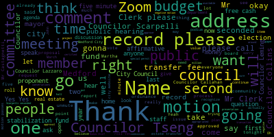
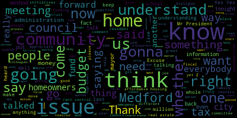
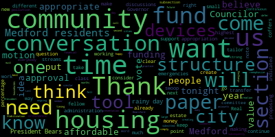
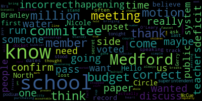
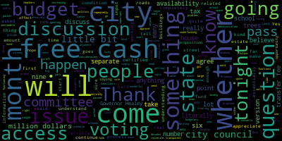
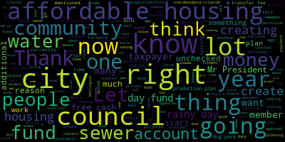
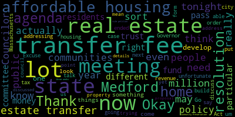
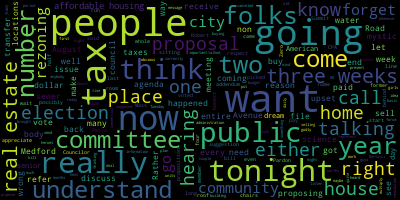

AI-generated transcript of City Council 03-12-24
English | español | português | 中国人 | kreyol ayisyen | tiếng việt | ខ្មែរ | русский | عربي | 한국인
Back to all transcripts
[Bears]: Fifth regular meeting Medford City Council, March 12 2024 Mr. Clark, please call the role, Councilor Callahan.
[Hurtubise]: President, Vice President Collins, President, Councilors are present, Councilor Leming, present, Councilor Scarpelli, Councilor Tseng, President Bears present seven present non absent please rise to salute the flag.
[Bears]: announcements, accolades, remembrances, reports, and records. 24-050 offered by Councilor Scarpelli. Condolences to the family of Joseph Rossetti. Councilor Scarpelli.
[Scarpelli]: Thank you. Thank you, President Bears. Excuse me. Let me get my notes if I can. This past week, City of Method lost a great friend, Joe Rosetti. If people that neighbors that know Joe, Joe's family grew up with Ashley's daughter, Ashley, and son, AJ, over in the Wellington area. Um, Joe has been a lifelong dedicated coach to so many of our youth football players and just recently came back to our method high school football staff. And, uh, Joe battled some, uh, some health issues over the last couple of years. And whether he was, uh, rolled up to the field or home, listen to it, uh, through online watching games, he was so dedicated to our kids and he'd be a great, he's a great loss to our community and just wanted to send condolences to the Rossetti family. I know his wife, Sherry, has always been by his side. I remember them when I taught at the Osgoode School and they were a pillar of the community and he will surely be missed.
[Bears]: Thank you, Councilor Scarpelli. Any further comment? Is there a motion, Councilor Scarpelli? After the next one, sure. On the motion of Councilor Scarpelli, seconded by second Councilor Tseng all those in favour. Aye. Mr. Clerk, please call the roll.
[Hurtubise]: Yes. Yes. Yes. Yes. Yes. Yes.
[Bears]: Yes. 70 affirmative. None. The negative motion passes 24-051 offered by Councilor Scarpelli. Condolences to the family of James Burns, Councilor Scarpelli.
[Scarpelli]: Thank you, Mr. Mr. President. James Jimmy Burns. Another another loss for our community. Mr. Burns was a lifelong Method resident before moving to the Cape after his retirement, and he leaves a family behind that really leaves a hole. Mr. Burns is a member of the Bedford High School Hall of Fame. He was a legend basketball coach here at Method High School, coached a lot of our kids or now adults in CYO, and he passed suddenly last week. and we just wanted to share our sympathy and our condolences with the Burns family.
[Bears]: Thank you, Councilor Scarpelli. On the motion of Councilor Scarpelli, seconded by Councilor Tseng. Mr. Clerk, please call the roll.
[Hurtubise]: Councilor Calderon? Yes. Vice President Collins?
[SPEAKER_55]: Yes.
[Hurtubise]: Councilor Lazzaro? Yes. Councilor Leming?
[Bears]: Yes.
[Hurtubise]: Councilor Scarpelli? Yes. Councilor Tseng? Yes. President Bears?
[Bears]: Yes. 70 in favor, none negative. Everyone please rise for a moment of silence. Thank you. The records of the meeting of February 20th, 2024 were passed to Councilor Lazzaro. Councilor Lazzaro, how did you find those records?
[Lazzaro]: In order.
[Bears]: Councilor Lazzaro has found the records in order and moved approval, seconded by Councilor Tseng. Mr. Clerk, please call the roll.
[Hurtubise]: Councilor Callahan. Yes. Vice President Collins.
[SPEAKER_55]: Yes.
[Hurtubise]: Councilor Lazzaro. Yes. Councilor Leming.
[Bears]: Yes.
[Hurtubise]: Councilor Scarpelli. Yes. President Paris.
[Bears]: Yes, I mean, affirmative, non-negative motion passes. The records are approved. Reports of committees, I'm gonna read them all and then I'm gonna request a motion to join and approve. 21-057, committee of the whole report, February 21st, 2024.
This was a meeting on the leaf blower ordinance, which was reported out of committee and is on the agenda tonight. 22-494 was an administration and finance committee report on the budget ordinance, which was reported out of committee and is on the agenda tonight.
24-056 was on the CPA applications, which we approved at our last regular meeting.
24-057 is a committee of the whole report, March 6th on our initial budget recommendations for fiscal year 2025.
Is there anything anyone else would like to add? Councilor Tseng. Motion to join and approved by Councilor Tseng, seconded by Councilor Callahan. Mr. Clerk, please call the roll.
[Hurtubise]: Councilor Callahan? Yes. Vice President Kalas? Yes. Councilor Lazzaro? Yes. Councilor Leming?
[Bears]: Yes.
[Hurtubise]: Councilor Scarpelli? Yes. Councilor Tseng? Yes. President Paris?
[Bears]: Yes. I have an affirmative and a negative. The motion passes and reports of committees are approved. Councilor Tseng?
[Tseng]: Motion to suspend the rules and take 24-055 out of order.
[Bears]: On the motion of Councilor Tseng to take 24-055 under suspension, seconded by? Seconded by Councilor Leming. Mr. Clerk, please call the roll.
[Hurtubise]: Yes. Yes. Yes. Yes. Yes. Yes. Yes.
[SPEAKER_55]: Yes.
[Bears]: 24 to 055 establishing a stabilization fund dear President Bears and members of the City Council. I respectfully request and recommend that your honorable body establishes a general stabilization fund as authorized by Chapter 40 section five B of the general laws. Once free cash has been certified, I plan to return with a request for this honorable body to fund the stabilization fund. As you probably know, the vast majority of cities and towns in the Commonwealth of Massachusetts have a general stabilization fund. In order to provide for emergencies and unforeseen expenses, a two-thirds majority of the city council is required to establish a stabilization fund. Respectfully submitted, Breanna Lungo-Koehn, Mayor. So we have a stabilization fund proposal from the mayor. I will recognize Councilor Collins and then I will recognize member of the administration, Councilor Collins.
[Collins]: I'm happy to defer to a presentation by a member of the administration, President Beresford.
[Bears]: Thank you, Councilor Collins. Madam Chief of Staff.
[Nazarian]: Thank you very much, President Bears and members of the City Council. Um, happily here to discuss the stabilization fund the creation of one as the council, the majority of the council knows, uh, creation of a stabilization fund requires a two thirds majority of the City Council and therefore what we would call super majority. So therefore, five members of the City Council would have to prove the formation of such a fund. The City of Medford does not currently have a stabilization fund, but it is very common throughout the Commonwealth. It's known as the rainy day fund for communities, so that if we're in any type of situation where we need to draw upon reserves for any reason throughout the year, The city has the ability to do so with the proposal of the mayor and the approval of the city council to draw upon those funds. drawn upon it would be a another two thirds majority and five members of the council would have to approve it. But we're not even at that stage at the we're at the place where we're proposing a stabilization fund be established. And then we would come back at a time once free cash was certified to propose and discuss and present on an amount to be funded for further or future use. And if it's not use it carries over and it's an option that's available to cities and towns to ensure that they have access to, you know, funds throughout the year, whereas the only time we presently have access to any rainy day or large cost options outside of we're going to be able to do that. And that's why the essentially the ARPA funding that we presently have, which is. Coming to a close at the end of this calendar year is once free cash is certified and historically, you know, free cash can get certified and be available for about half of the fiscal year, give or take. I'm happy to answer any questions or if there's anything I didn't cover. I'm happy to touch on that. Thank you.
[Bears]: Madam Chief of staff
[Scarpelli]: We've had some trouble even getting the updates from our actuals from this administration. I believe we were doing pretty well up until right before the election. I believe June, July, August, we were getting redacted information for our city's budget, but we haven't seen anything. and to establish another fund or give this administration control of more money without the checks and balances that I think we're surely lacking here in this community. I wouldn't support this. I think that, you know, the... I think what frightens me, Mr. President, is the Chief of Staff said herself, she mentioned with the ARPA funding, if we're gonna use this type of funding, the way we manage the ARPA monies or the ESSA monies, we're gonna be in serious trouble. It's like, until we know. I'm sorry, I think until we know that we have a legitimate, transparent financial department that's going to keep this city abreast on all of our financial doings. I think it would be a huge error for this council to support it for the fact that We've seen what happened during the budget season. We had a financial director that can't tell us what's going on with an actual budget that they gave us last year, saying the numbers weren't correct. We have different organizations that are still waiting for their retro funding, saying the software is antiquated, so they can't get that. And to think that we want to give more money somehow to this administration, I think it would be it be responsible for this, this, this, this committee do that. So I would recommend that we table this until we get a further understanding of where we are when it comes to updating this council on our fiscal day to day or our fiscal needs and responsibilities. This is another pool of money that if we approve, We're going to, you know, it's going to come back to us and we're going to be made the scapegoats for the lack of true transparency in that office. So I would move that we table this, Mr. President, that be form of a motion. Thank you.
[Bears]: Motion to table is undebatable. I did not recognize Councilor Collins, but a motion to table is undebatable. Does the motion have a second? There are no second the motion fails Councilor Collins.
[Collins]: Thank you, President Bears. Thank you to my fellow Councilors for their comments on this. I just want to note that this is the second time that a Stabilization Fund paper has come before us. Last year, the administration submitted a similar but different paper. At that time, we decided that creating that structure and making a large appropriation all in one fell swoop was not the right timing for the city. This time, the paper comes to us After months of ongoing discussions about this city's financial future, those discussions must and will continue. I do believe that it is the best practice for cities like Medford to have a rainy day fund, in the same way that many households have a rainy day fund for unforeseen emergencies. I think that this is an appropriate time to create the structure and then subsequently have those conversations about how much is appropriate to put into the fund and when, because this paper does not call for an appropriation, simply the creation of the structure. I also want to note this, to just reemphasize, there's no money changing accounts in this paper. If there were to be, it would be a reappropriation of money already in the city's coffers and the community's coffers. I think that this is the right time to set up the structure and then again have those community conversations about how much it makes sense to put into that rainy day fund. And when the next time we have these community wide emergencies come up, we are better prepared to take care of Medford residents. I would motion for approval.
[Bears]: If you want to have conversations, please take them outside. Any comments from members of the council? Councilor Tseng. Thank you, President Bears.
[Tseng]: I think it's really important for us to recognize what question exactly is on our desk today. When we last looked at the stabilization fund idea, as Councilor Collins referred to, it was both to create a fund and to put money in it. Today's item is different. Today's item is just to create the fund and not to put money in it, which is traditionally where the sticking point with the city council has been. Now, when it comes to creating the fund, I am in support of it because of the rainy day aspect. The way that our finances work right now, if, God forbid, an emergency happened in the city where a roof fell in on a school or a major repair was needed to a public facility, we would not be able to access the funds needed to fix those problems until free cash is certified by the state, which can often take many, many, many months. oftentimes closer to a year, and creating the stabilization fund gives us the opportunity to have that money ready to fix emergencies when needed. So I support this idea. I will second Councilor Collins' motion.
[Bears]: Thank you, Councilor Tseng. There's a motion on the floor to approve, seconded by Councilor Collins, seconded by Councilor Tseng. Any further comment by members of the Council? Seeing none, if anyone would like to speak about it, members of the public. There's no, this is not, this does not appropriate money. This paper does not appropriate a dime. It doesn't though. Correct, that's what we're doing.
[Scarpelli]: Yeah, Mr. President, Mr. President, if I can. Do what you want. Excuse me, excuse me, excuse me. Excuse me. Hey, hey. Hey, listen, listen, this isn't the way, this isn't the way to behave. We have a forum. We have a forum. You have every right to come to this podium, but please give us the respect that this office deserves. We want to get to resolutions, but yelling out like that, that's not going to get anything done. If you want to speak, this forum's here for you. Come up and speak. I listened, come up and speak. Yelling out doesn't help. It really doesn't. So please, it's only going to make this a longer, more miserable, disrespectful process. We're all here for a reason. We want Medford to be as best as it can. So this forum's there. So just take advantage of it.
[Bears]: Thank you. Thank you. Mr. O'Leary, name and address for the record, please. Tap the bottom once you're up. The red light will come on when you tap it. I got green. There you go. Larry, can you help? You should only have to press it once, Larry. Shane's coming.
[Scarpelli]: Did Ellie take the batteries?
[James O'Leary]: OK. James O'Leary, 30 Norwood Circle, lifelong resident of Medford. First thing is, there's no explanation as to what this money is for.
[Bears]: There's no money being appropriated.
[James O'Leary]: Well, but there's no number given out to anybody. The second thing, this councilor here, when you asked somebody to second table, raised their hand. Did you?
[Bears]: I didn't hear you say it, so.
[James O'Leary]: She did, and you didn't see it.
[Bears]: All right, we'll have a vote on it. On the motion to table by Councilor Scarpelli, seconded by Councilor Callahan. You need to shout it out or I can't see you. Mr. Clerk, please call the roll.
[Hurtubise]: Right to table. Councilor Callahan.
[Lazzaro]: Yes.
[Hurtubise]: Vice President Collins.
[Lazzaro]: No.
[Hurtubise]: Councilor Lazzaro.
[Lazzaro]: No.
[Hurtubise]: Councilor Lemmick.
[Lazzaro]: No.
[Hurtubise]: Councilor Scarpelli. Yes. Councilor Tseng? No. President Bears?
[Bears]: No. Five in the negative, two in the affirmative. The motion fails.
[James O'Leary]: So now can I continue on with this?
[Bears]: You may continue, thank you.
[James O'Leary]: Mr. Tseng made a comment I'm gonna go about. things that need to be done in this city. What happened to the capital improvement fund that started about six years ago, which started being talked about and hasn't gone any place in this city? Mr. Scarpelli made a great point. You have weekly meetings. I have not seen any time I've watched anybody from the financial division of this city come up here and explain where we're at. There's a lot of rumors that go around in this city that we're probably about 20 million in the hole. Okay? But we've never seen anybody come and say where we are. You're going to start budget hearings again. Why? Again, when I spoke the two previous times I was here, I talked about bringing the city together. All we're doing is widening it, making more and more people upset. And it's got to end. because you know what? People aren't gonna wanna come to Medford. They used to, but they're not gonna wanna come to Medford with everything that's going on here. Thank you.
[Bears]: Name and address for the record, please. Good evening.
[Damascus]: My name is Rose Damascus. I'm a longtime citizen since 1990 here. I am so aghast of how the city is running right now. It is deplorable. The streets are horrible. Where is the infrastructure that's supposed to be paying lots of money? I now have another tax increase to my taxes, a $900 fee. Where is this money coming? You know what? I think people that don't own houses need to be taxed as well. So that's it. Thank you. I'm going to push for that. Because you know what, you don't know what it is the cost for the house and what instructions and you have no idea because you don't understand. You just all you do is write a policy but don't know what the impact it has on people's lives. All right. Thank you very much.
[Bears]: Rose, if you could just leave your name and address with Larry, please. Name and address the record, please.
[Eleanor O'Leary]: Hi, Eleanor O'Leary, 30 Norwich Circle. One quick question, which I don't seem to be getting any answers, I keep hearing it. Where is this money coming from?
[Bears]: There's no money being appropriated.
[Eleanor O'Leary]: Well, excuse me, where is the rainy day item line? Where is that money? There has to be money from somewhere.
[Bears]: This is just establishing the account. It's not actually putting any money in there.
[Eleanor O'Leary]: But with that money has to go into it.
[Bears]: That would happen in the future.
[Eleanor O'Leary]: So I know but in the future, where is that money coming from?
[Bears]: So is it from taxes currently how the city works? We have free cash. You've heard the first free cash before we have free cash reserves. Basically, that's the aggregated money is left over from all the previous budget. Those reserves need to be certified by the state every year. It generally takes the state nine months to certify that money. During those nine months, we can't use that money for any purpose and it can't be appropriated. By establishing a stabilization fund, which is all that's happening right now, and if money were to be put in it in the future, during those nine months when free cash is not certified, the reserves would still be able to be appropriated for an emergency fund.
[Eleanor O'Leary]: So then why make another fund if these are already because you can't make you can't use it for the nine months when it's not being certified. Okay, that's one my last question. The other question on this is what give me an example other people here example, what would it be used for, for example, a roof collapse, major infrastructure issue. We don't have anything budgeted for any buildings or anything like that in the city already.
[Bears]: Currently when free cash is not certified, our reserves are not available for those purposes.
[Eleanor O'Leary]: So it's free cash. So I'm just really confused because my concern is we give them free reign again. There's no money because that's what's happening. I'm in the school system, a teacher 33 years. And let me tell you. We were all just told the budget is frozen, we're 2.5 million in the hole, there's no water, there's no paper, sorry, you have three or four months left in school, it's up to you. So is this what's gonna happen every time with this city? It is disgusting. And I'm telling you, I'm retiring in June, thank the Lord, I don't have to deal with it anymore. It's unbelievable.
[Bears]: Thank you. Mr. Castagnetti, if you could just let her first. Thank you. Name and address for the record, please.
[Murphy]: Angela Murphy, 16 Codding Street. I have been up here about many issues for a long time this past three years. And I am so disappointed I've been a method, since I was 568 years, I have not seen any improvements. In fact, this city has gone downhill. I talked to people in other cities, and they say where you from I say, I'm almost ashamed to say I'm from method. improvements for the residents. My street was done, not even three years ago or something that's falling apart again. There's potholes everywhere. You want a rainy day fun. You don't even know what you have in the budget according to Councilor Scott. thing on the taxpayers here and the residents to say we're going to create a rainy day fun. Well, it's raining now use what you have.
[Fried]: That's what you're doing to this city.
[Murphy]: And you know, like I said, I'm almost ashamed to tell people, because people outside of Reuben, they hear what's going on in Method. And I tell people, and they're like surprised and shocked, and they're glad they don't live here.
[Bears]: Thank you. Since you've already spoken once, if there's anyone who wants to speak, you've already spoken once, so if there's anyone who'd like, if there's anyone who'd like to speak for the first time, I do. You'll defer, okay. Come to the podium, thank you.
[Damascus]: I went to Bentley, so I know what I'm doing here. Can you just provide, can you just name it? Oh, Rose, Damascus, Six Flags Down the Road, Method, Massachusetts. Thank you. Okay, so I know what budgets are. You're telling me that they don't have the budget completely up there and what we're standing at if we were to fill a lot.
[Bears]: The city budget is on the city website.
[Damascus]: I thought he just said there wasn't. He said it's not updated. Why are we having an updated budget on?
[Bears]: You would have to ask the mayor's mayor, we have asked the mayor we've had several meetings on the budget ordinance, we have an entire budget process set up so it's not accurate to say the meeting to explain why we cannot compel the mayor to come to anything.
[Damascus]: Why?
[Bears]: We don't have the legal authority. I said, we do not have the legal authority to compel attendance at these meetings.
[Damascus]: I can't hear a word you're saying.
[Bears]: I'm not going to do it. Well, if everyone would be quiet, you could hear me. I said, we do not have the legal authority to compel people to attend these meetings.
[Damascus]: We're not just talking people, we're talking to citizens here, number one. And number two.
[Bears]: I do not have the authority to compel the mayor to attend these meetings. We can't tell the mayor to come. Why not? I don't have the legal authority.
[Fried]: Well, we should all have the mayor. It's all right for me to tell the mayor to come, or a bunch of people to come.
[Bears]: Because you guys do not help us.
[Damascus]: We want to know from her why the budget's not working, and the way it's not finalized. That is all crapola.
[Lazzaro]: She doesn't have the stamina.
[Damascus]: All right, we can't. So why don't we have her on there? So who do we have to say that we want the mayor here?
[Scarpelli]: Well, we'll make a motion and we'll do that tonight, but at the end of the evening, but again, we can recommend that the mayor come. I know that the chief of staff is here in her stead if we have questions for her. That was the business area and the person who presented this on the budget that the issues are right now is, we don't know like most communities have a working budget, you, you understand where the money is being spent.
[Damascus]: I know I'm an accountant so I understand.
[Scarpelli]: I'm just saying it's everybody else isn't it something to you know I'm just letting everybody know the issue is this council doesn't see that we don't know either. So I actually put the school, I put the superintendent on the, on the docket tonight as a resolution because we're hearing rumors because right now they're just rumors to us that the school budget is in the whole 2.5 million for this year so we don't know. So these are the issues why I wouldn't vote for this because I think that without understanding we can't move forward. I also think that we have we have a few new Councilors that weren't here when this process started. So I think it would be it would be beneficial for them to sit in a meeting to start this whole process over and understanding what a rainy day account is and what it's used for and how they're There are other ways if there are emergencies to help with different scenarios, but I'm not going to get into that tonight. What I'm saying is I don't support this because we don't know what our fiscal future looks like. There is no last year we didn't get we we didn't even know. I don't even think we got a written budget after it was passed. Correct. We got a budget. So right. So we got it right after we passed the budget. We had nothing to work from.
[Damascus]: We had ourselves two years ago we had two years ago you know what the city sorry to interrupt you, the city of the members of the city would like to know what that budget is. So how can we get the mayor to come.
[Bears]: What's that there is a call the mayor, there is a copy of the city budget on the city website and there is a look at the, you can look at the budget is not updated as a copy of the approved budget that we approved in the council records on the city website as well. When, when did it happen he's saying it's not it was it's on but it's nothing we're not updating where, what, what, what I'm probably saying is, I think that we haven't received a budget to actual report budget. Budget to actual because a budget without the actual is we, I do know that departments have been meeting with the mayor about the budget budget actuals do exist and it is part of our budget ordinance that we'll see those which is on the agenda tonight.
[Damascus]: Okay, so I'd like to have the mayor come here at the next meeting.
[Bears]: I can't control that.
[Damascus]: Well, then I will do that. I will do that because you can't do it, I will. Because you know what? These citizens here are paying your salaries. Thank you so much. And if you are staying, you have to do your job.
[Bears]: Thank you.
[Damascus]: And if you don't own a home, you don't know what it actually means. Mr. President,
[Bears]: Mr. Castagnetti, would you like to speak on the Stabilization Fund? No, I don't, however- Well, if you don't want to speak on the Stabilization Fund, we're going to have to wait until- It is, okay.
[Castagnetti]: Okay, thank you. The name is Castagnetti, you got that right. Andrew.
[Bears]: Name and address for the record, please.
[Castagnetti]: The other side of East Medford.
[Bears]: Cushing Street.
[Castagnetti]: That is correct. Thank you. To protect the innocent. I've been a resident too long in this one horse town, since 1955. I didn't really want to come speak for this because we have a bigger fish to fry. And that's why most of us are here. However, when I started hearing about this stabilization fund, I started to get concerned. If any of you own homes, if... Thanks for the interruption. I got my HO3 bill yesterday. You know what that is? Council President, do you know what that is? A HO3 bill.
[Bears]: Enlighten me, Mr. President.
[Castagnetti]: You don't, okay. It's simply a homeowner's insurance policy.
[Bears]: Yes.
[Castagnetti]: In layman's terms. And the bill went from, it was $1,000 five years ago, it was $2,500 last year. It went to 3,000, three large. I don't know how you people pay your bills because I'm struggling with a fixed income. So this is about stabilization, all right? The point is no further taxation without proper, proper, proper representation, period.
[Bears]: Any further discussion? So I name an address to the record, you're fine, you don't have to touch Diane Harrigan 65 Ripley road.
[Harrigan]: I just have to come up from a common sense, I think, from what I'm hearing about the stabilization. I couldn't agree more with George. It's not that I think people are against another fund, but how do you. vote for another fund when we have other funds and we don't know what's in it? Are we in debt? Is there a surplus of money in any of those funds that you know that can maybe be shared with other funds? It's hard. It's hard to move forward with something brand new where we don't even know what's in the existing And I think if we had a better idea of what's in the existing and how that money is being managed, and is it enough? Is it running out? Is there a surplus? I think people could maybe wrap their heads around another fund. But to me, that just sounds like common sense. Knowledge is power. If we had more knowledge, we could have a better you know, feeling about it.
[Bears]: That's the last time that free cash certifies about twenty five million. That was last fiscal year. No appropriations have been made from free cash because it hasn't been certified yet this fiscal year. So it's likely higher than that. But again, this paper doesn't move any money into anywhere. It just establishes the fund.
[Harrigan]: No. And I feel like why open up another fund? We have other funds and we don't know what those funds are doing, you know, because we don't have there's no transparency or not enough transparency. for at least, I think, the average person to make them feel comfortable about it. That's how I feel.
[Bears]: Thank you. Thank you. Is anyone else like to speak for their first time? And we do have a limit of three times.
[Damascus]: Ma'am, I'm number three. So I have a suggestion. All homeowners pay taxes here. I think what would be helpful is that people that rent should stop paying a portion of the taxes because they're using our services in our city. So I think we're gonna have to have something that's gonna be put on the docket to make that happen. And I feel that, you know what? Then you'll feel the pain. Thank you.
[Bears]: Name and address for the record, please.
[Miastro]: Sorry, could you speak up? Thank you. You guys decide where the money goes, right?
[Bears]: There's no money.
[Miastro]: I'm just saying, the money that you have now, you guys decide where it gets spent, right?
[Bears]: The mayor decides that we can only approve it.
[Miastro]: Okay, so she controls everything. Are you guys efficient now? Are you running the place efficiently? Accountability, do you have that? As far as I know, he doesn't know what's going on. The problem is they don't even know what's going on. They have no money coming back saying, what are we doing here? Where's this money going? I don't know. Right there, he just said it. He wants to stop this. Take care of the holes you have in there now. Don't create another big hole. Because we don't know where the money's going. It's very simple. It's like running a home. The money's coming in, you don't know where it's going. I'm not going to put more money out there. There's no way. It's very simple. If you got holes, fix them first. Don't make more. That's it. You want money to spend, and then you tell me you're gonna spend it for this? Right now you say this. Three years from now, you're not gonna be here. Somebody else gonna take it over? It's just like Social Security. We're gonna do for that? No, no. We're gonna change it, the laws. And it's going someplace else. The problem is it's gonna cause the city, people don't wanna come over here. You can't sell, you can't buy. City's dying. Thank you.
[Bears]: Any further comment on the stabilization fund? Name and address for the record, please.
[Andresano]: Deanne Andresano, 23 Emerald Street. I just, of all this, I'm sitting over there watching and I find, your name?
[Lazzaro]: Councilor Lazzaro.
[Andresano]: was our your looks, extremely condescending, ma'am, please direct your comments at the chair. People say something are extremely condescending. And she's here are supposed to be representing the citizens of Medford. And she's smirking. giving you eyes, giving this gentleman eyes, that's uncalled for. No, I know you said the money's not coming. The money's not there. You're setting up a fund. You're taking baby steps to go where you want to go. We're in she's texting. Okay. Ma'am, please.
[Bears]: If you just have comments. Thank you. Yes, thank you, Mr. Kastner. I'll have one too. Name and address for the record, please.
[Haggerty]: Anne Haggerty, 11 Sagamore Park in West Medford. Hi. I think I don't completely understand how setting up a fund without any money is helpful at this time. Is that a bank thing? Is there costs associated with holding a fund with no cash or in it? perhaps the wisest thing now would be to combine the setup of the fund with discussions on how to fill it at a later date. That's just a proposal.
[Bears]: So we had those discussions last year and they were tabled in June around the budget. My understanding of one of the reasons this is up is that establishing a stabilization fund would help the city's bond rating and that there are meetings upcoming on that item. even if it's unfunded, just having the stabilization fund is helpful.
[Haggerty]: Are there costs associated with the unfunded fund?
[Bears]: There are no costs associated with having the fund. It's just, it's a city-established fund. It's literally a line in an accounting software. Okay. Thank you. Name and address for the record, please.
[Morrison]: Phyllis Morrison, 32 Andrew Street, Medford. You know, I came to tonight's meeting because I am a concerned Medford citizen and resident. I have to say with all honesty, I think that the majority of this meeting has been counterproductive. I think making personal attacks, yelling and screaming will not aid in anything we're trying to accomplish. I think that we should at least have the decency among us to be able to speak and to hear one another speak. I came for certain reasons this evening, just as everyone in this room did. I can no longer sit in this room while people are ridiculed and there's hollering and screaming and talking over one another. I've only lived in Medford since 1997. I happen to think there's great value in the city of Method. Do I think I'm overtaxed? I don't think I'd be normal if I didn't. Am I here for the reason to speak up for my rights as a citizen? Yes. But I'm sadly gonna leave this meeting because I cannot stand the rudeness and the incivility of what's taking place. I hope you all have a wonderful evening. Thank you.
[Bears]: Thank you, Phyllis. Name and address for the record, please.
[Branley]: Hello, Nicole Branley, 54 North Circle in Medford. And just for the record, I am a Medford School Committee member.
[Bears]: Congratulations. Oh, thanks. Is this your first time talking to us as a school committee member?
[Branley]: I don't believe it is the first time speaking as a school committee member. I don't know. I'm up here so often, I've lost track of the dates.
[Bears]: Definitely on your left.
[Branley]: This side or that side. So I just wanted to ask if the superintendent was going to be here tonight. I know that she is on the docket.
[Bears]: I do not believe we're going to be tonight. Okay, so we haven't, I mean there's an item on the agenda, requesting a report back.
[Branley]: Correct. So I just wanted to confirm that in the Medford school committee meeting, I don't think it was this one or maybe the last one. Gerry McCue did come to the podium and did discuss that we did have a 2.5 million deficit that is not a secret. He stood here, I actually confirm that because I thought maybe. I was incorrect but I was correct he did stand here he did discuss the 2.5 million deficit in the school budget. We did pass a motion and I'd like to thank Mrs. O'Leary for bringing up the fact that we did pass a motion that we will not run out of paper. So this is what we've come to in this city that we're passing motions that we don't run out of paper in our school. That breaks my heart. We do have a budget freeze. And of course, if I'm incorrect in any of this, someone can correct me. But we have stopped purchasing water for our teachers, just simple bubbler water for our teachers in their in their lunchroom, which I know they have a faucet, I know that they can bring their Stanley cup also. But I think that we've really gone over the line here of what of what's happening so I know people are very upset. I just want to encourage people to always come to meetings, where we're here I'm here just like you guys at a meeting regularly so I know you're upset now but there's stuff that happens in this chamber. multiple times a week. So be present, you know, know what's going on. So yes, that's happening in our school. And I just want to thank Councilor Scarpelli and all of you for your hard work. But know that that is a true number. We are $2.5 million in the whole for the school budget. And that is devastating as someone who's worked in the Medford public school system and who has children in the Medford public school system. And as a school committee member, here we are. So I think we really need to hold ourselves accountable because this is this is who voted us in. This is who voted us in and we need to listen to that. So thank you.
[Bears]: Thank you.
[Miastro]: any further discussion on the stabilization? If I can, Mr. President, just one thing.
[Bears]: One second. Yes, Councilor Schapiro.
[Scarpelli]: If I can, I think that that's probably one of the questions that people are fearing, is what's going to constitute an emergency? Is the fact that there is a shortfall in the budget, that that would constitute an emergency, something that should have been handled through our general funds, that now can come to us to say we can build to bail the city administration out. We say it's a roof, but what is going to constitute an emergency that this fund can be used for? So I think that that could be a little enlightening for everybody, too.
[Bears]: And just to be clear, even if a fund is established, it would require a two-thirds vote of the council to place money into the fund, and then require a vote of the council to appropriate any money from the fund so the mayor would not be able to unilaterally use those funds.
[Scarpelli]: So again, this is where this council, we fell in this gap with being put on the spot by the firefighters piece, the civil service. She's making us to be the scapegoat. So we're gonna say, let's do this. And then there's gonna be a huge shortfall because they're gonna cut teachers. Now think about it. Then they're gonna come to the podium, look at us and say, now you voted down. or something that's an emergency in the city because they didn't fund it correctly, they're gonna come to this council and say, okay, you voted for the stabilization fund, now you're gonna have to vote on this. Don't let it get to that point, that's what I'm telling you. I don't know if you see this, but we're being made to be the scapegoat for her mistakes. So just be careful.
[Bears]: She can do it with free cash anyway.
[Scarpelli]: Well, let her do it, but not from this council.
[Bears]: Well, she would have to come to us anyway. How slow those are?
[Lazzaro]: I do have a question about free cash. Can you explain to us? Because my understanding is from when I worked for the superintendent, we would occasionally get free cash allotments to the schools, but it would be at times that we couldn't anticipate. This was with the current mayor and the prior mayor as well it would be like oh you're getting free cash you know uh ask for ask for what you need but it wouldn't have been budgeted by the school so sometimes free cash would just appear so if this fund is established and then funds that would have previously been in free cash would be part of this now part of this fund
[Bears]: if those were the funds that were appropriated, but we have appropriated free cash. But this council would be able to say. The council would approve any allocations to the fund and any approvals.
[Lazzaro]: As is my understanding, the way it is right now, this council has nothing to say about how free cash is allocated. No, we do.
[Bears]: We approve free cash as well.
[Lazzaro]: We do approve free cash.
[Bears]: But we also have spent free cash on fire trucks, DPW vehicles, a variety of things.
[Lazzaro]: Okay. What is the difference between the way free cash is allocated and how a rainy day fund would be allocated?
[Bears]: Free cash is only available when it's certified by the state, which is generally only end of March, beginning of April, so it's not available for nine months. Any funds in a stabilization fund would be available 12 months. So we would have quicker access. Right now, if we need a fire truck in September, we can't actually buy it until April.
[Lazzaro]: Got it. I can just say that from the perspective of the city council my understanding is like our priorities, since we were. running for office have been, I've been very upfront about funding the schools as being one of my top priorities. It's always been really important, you know, being, having a really transparent budget and making sure that we're prioritizing those things in the way that we are allocating funds. So if there's a mechanism for us to have more transparent access to funds and being able to authorize be able to allocate funds in a quicker manner than the way the free cash is authorized. I think that's a benefit. But again, what we're what we would be approving here wouldn't be. Any allocation of any funds would only be the opportunity to maybe one day have quicker access to, uh, funds that would be able to be allocated to various city services. Correct Okay.
[Bears]: Any further
[Callahan]: As far as the question of getting proper budgetary information out of the administration. I believe that's an entirely separate discussion, I agree that that's a big problem, and we as a city council have been working. I even before I got on the city council to make sure that that's a more transparent process that the mayor is asked and has been asked repeatedly and now has to follow a schedule to provide information this is something that this city council and the city council before me has worked very hard on. So this is not something that we are ignoring this is something we are working very hard to make sure happens, but it is a totally separate issue from whether we have 12 month availability of free cash, essentially, or if we only have free cash after it has been certified, which can take six to nine months. So that is what this question is, is a question of whether we have, as a city, have availability of that free cash for 12 months, or whether we have availability for that free cash only after it has been certified six to nine months later. I completely agree with many of the people who spoke here that the city The roads are in terrible condition. Our school buildings are in terrible condition. Our school budget is not anywhere near large enough for the amount of teachers that we need. I completely agree with those sentiments and that reality. I believe that it's because of decades of underfunding of this city, because that is why the roads have come to the point where they have come, and why the school buildings have come to the point where they have come. That is also a separate issue from the question of whether we have year round access to essentially free cash, or whether we can cannot access that free cash for the first six to nine months. So, to me, this really is a question simply of whether, and I appreciate cancer Scarpelli for your consideration for the newer city Councilors of which I am one. I would not mind a little bit more time to understand this. But I will say that it seems quite clear to me that, first of all, we're not taxing anybody. We're not increasing the funds. No, no, no, no. This literally does not have to do anything with that. It converts free cash from something that we cannot access to something that we can access. And that free cash is literally what happens when the income that comes into the city and the budget that goes out of the city, the actual spent budget that goes out of the city differ, which they have to do, or else you don't have a bond rating. So understanding the budget of the city and how it functions, I do believe that creating this fund is the smart thing to do. And I'm willing to vote on this tonight.
[Bears]: Thank you, Councilor Callahan. Any further comments by members of the public? Former Councilor Michael Marks.
[Marks]: Thank you very much, Mr. President. Michael Marks, 37 Wellington Road, the great city of Method. My initial thought is, just standing out in the audience, when many people hear about free cash, I think it's important in layman's terms to spell out exactly what free cash is. And it's an overabundance of taxpayer money. That's what free cash is. So free cash is not pulled from a cherry tree. It is the overabundance of taxpayer money. And the reason why I bring that up, Mr. President, is being a former member of the council for 20 years. One thing I do regret, and many residents probably feel the same pain, is the water and sewer bills. And the reason why I bring this up, Mr. President, is because so many years ago, we created a rainy day fund in the water and sewer. It's called the Water and Sewer Enterprise Account. It's not called the rainy day fund. And that fund was supposed to be, the intended purpose was supposed to be for infrastructure improvements or offset the rates. And the fund started out some many years ago with three, $400,000. And that's not a lot for a city this size, with an infrastructure that's a hundred years old, you know. But what happened over the years, unchecked, it turned from 300,000 to 6 million. So all of a sudden now, the bills that are going out now have a little bit of padding. Why? Because it goes back into the free cash. And before you know it, it's an end around about proposition two and a half. So you're bringing in additional revenue has nothing to do with proposition two and a half. And you're using that for purposes other than which it has been used over the years. I'm not sure if you were on the council, Mr. President at the time, maybe Mr. Scarpelli can remember for purposes non related to water and sewer, because there was that buffer. My concern about creating an additional account now is that that's also going to be unchecked. And it's going to mushroom into this large, large account of taxpayers money. And it's going to sit there until someone decides to use it on whatever project they want to use in the community. And I think that's a real concern right now. And if anyone behind this railing can tell me exactly how much we have in the water and sewer enterprise surplus account now.
[Bears]: I think last year was about 1.5 million 1.5 million. So that's just off the top of my head.
[Marks]: Does the city administration know what's in the account?
[Bears]: I do have the chief of staff. I do want to say that unlike Water and Sewer Enterprise, the council would be approving any allocations to the Stabilization Fund and any expenditures from the fund, whereas Water Sewer Enterprise is only through the Water Sewer Commission and not through the budget.
[Marks]: All right, thank you.
[Bears]: Madam Chief of Staff, I see your hand raised.
[Nazarian]: Thank you, Mr. President. I just wanted to correct one thing that was stated. An enterprise fund is intended to essentially cover all costs that are associated with the enterprise. I don't disagree with some of the comments that former Councilor Marks made with regard to how the enterprise fund works, but I do want to clarify that an enterprise fund is established to be fully self-sustaining. And so any costs and any revenues that are associated with water or sewer come out of the same fund. Thank you.
[Bears]: Thank you, Madam Chief of Staff.
[Marks]: Right. Do we know how much is in there currently?
[Bears]: Thank you, Madam Chief of Staff. Any further comments?
[Marks]: Do we know how much is in there currently?
[Bears]: Madam Chief of Staff, do you have the water sewer retained earnings off the top of your head? Oh, sorry about that.
[Nazarian]: I don't, but I could find it in about less than a minute. So if someone would like me to find that information, I can.
[Marks]: I am all done. Stick a fork in me, I'm all done. The one thing I do want to caution the members of the council, in particular, I hate to say new members, because we all start somewhere, right? But the creation of a fund sounds good. But an unchecked fund is not a good thing. And unfortunately, that's what exists in this community, whether it's water and sewer, and doesn't require council approval, or rainy day fund that does require council approval. It's an unchecked account. And that's a problem, in my opinion. And you know, We at the beginning was mentioned that, you know, we all have rainy day funds. I'm not sure what the chief of staff makes, but let me tell you, that's not true for most people in today's society. We don't have rainy day funds that we can count on. Most people are living paycheck to paycheck, putting their kids through school, helping family members out, whatever it might be, housing, which we're going to talk about later. So I just don't want to be too cavalier when it comes to having rainy day funds sitting around with surplus money. Thank you.
[Scarpelli]: I just, thank you, Mr. President. I just want to come full circle, just to understand. The comments that I made earlier, I think that it's out of frustration and understanding. As we're moving forward with initiatives that are coming forward through this council, and there are people that are questioning those initiatives, I think the biggest issue why this has blown up so much is the understanding that the questions that we all have, Is it that we don't have enough money? Is that we're not funding it? Or is it that it's just being mismanaged? Because that that is the ultimate question. I've been part of this council. I've been part of this council for years now. With the former mayor and the former financial director, we saw everything we watched things happen live right in front of us. So we knew to prepare as we went forward. with, with this administration, we haven't had that luxury. So these are the issues that I feel to go full circle, like I said, this isn't to attack anybody, this isn't to say that this, this fund wouldn't be good, it wouldn't be good. The fact that it's not transparent, and we don't truly know what the fiscal climate is, and where we stand, we just heard a school committee member Has anyone talked to you about a $2.5 million deficit in the schools? Because no one has. No one's told me. But where does it have to come from? It has to come back to us. So the mayor is going to come back to us and ask us, where are we going to approve this money, everyone? Where last year at the budget, we warned her, we begged her, please do not use these funds this way. The ARPA funding, we looked about why is our infrastructure so bad? Do you realize that neighbor communities use millions and millions of dollars for what that was intended for? And that was for infrastructure needs. What we're seeing in our community, it's need to fill the gap in the ordinary budget. And now it's left us in big trouble. So all I'm saying is, as we're moving forward, Whether this is good or whether it's bad, whether we're voting for one thing, whether we're voting for another thing, understand something. We don't have an accurate picture to make a sound decision. It's common sense. That's all the full circle I wanted to make. Nothing against anybody. This isn't personal, but this is very simple. We don't know what's going on in the budget. No one's seen anything. We don't know. No one's talked to us. What was the last? Have you met the financial director? Have they come up to give us a report? Has anybody said anything? We don't know anything. We don't know, but we know we're gonna be meeting and we know what's gonna be said. We're gonna be in fiscal crisis in a few months. And if someone says to me, it's because we don't tax enough or we don't give enough money, we don't know that because our administration isn't transparent enough for educate us in the community to say, this is why we have a shortfall and this is why we need a tax or this is why we need that.
[Bears]: So- Be careful opening that window, it might come down on you.
[Scarpelli]: Yeah, careful with that window.
[Bears]: Windows are from the 40s.
[Scarpelli]: So I don't wanna beat a dead horse, but I'm just saying, these are just common sense issues that I'm bringing up to understand. We don't truly know if this is a structural issue, if this is a mismanagement issue, or this is a lack of collecting issue. We don't know because we're not educated and we're not given the tools to succeed. So that's why I think it's a slippery slope for this council to keep moving forward initiatives and truly not understanding our fiscal picture. So thank you.
[Bears]: Thank you, Councilor Scarpelli name and address for the record.
[Fried]: Lynn Fried is 26 turns out I just have one question. Why can't we have a city audit, we have all of our city budgets, the city's on it every year outside.
[Bears]: Yes, it's an external independent. Where is that city website. updated the most recent one was for fiscal year 22 fiscal year 23 will be coming it takes okay it takes a year to audit the 200 million dollar budget fiscal 23 is next and we're currently in fiscal 24 which will be and it shows all the funds yes it shows where everything went okay outlook it's all on there it's a long document but it's a 200 million dollar budget okay Name and address for the record, please.
[Imami]: Hi, my name is Rebecca Imami, address is 12 Ship Avenue, number seven. Just a request, I think most of the people in this room are here to talk about the real estate transfer fee. I don't know if there's a way to table this and move on, but personally, as just since we're talking about an economic issue, I've paid a babysitter so that I can be here tonight. And I think a number of people in this room have other commitments and we came to voice our opinions on a certain issue. I think if there's an opportunity to move on, we would all appreciate it.
[Bears]: We have two public hearings and a presentation from the MBTA, and then we will get to the transfer fee. Yes, Councilor Tseng. On the motion of Councilor Collins seconded, we'll take a new motion since we've got it on the table. Motion of Councilor Tseng to approve, seconded by Councilor Callahan. Any further discussions by members of the Council? Mr. Clerk, please call the roll.
[Hurtubise]: Yes. Yes. Yes.
[SPEAKER_55]: Yes.
[Hurtubise]: Yes. Yes.
[Bears]: We move to suspense, we have 23-319, Raisin Cane, 760 Felsway, special permit for additional on-premises signage. Legal notice, Medford City Clerk's Office, notice of public hearing. The Medford City Council will hold a public hearing in the Howard F. Alden Chambers at Medford City Hall, 85 George B. Hassett Drive, Medford MA, and via Zoom on Tuesday, March 12th at 7 p.m., a link to be posted no later than Friday, March 8th, 2024, on a petition for a special permit for signs by Raisin Cane's Restaurant LLC, DBA Raisin Cane's Chicken Fingers, 6800 Bishop Road, Plano, TX 75024. The petitioner is seeking to construct an eat-in restaurant allowed use in a commercial 1C1 zoning district at 509-511 Riverside Avenue, aka 760 Felsway, parcel ID lot 7-02-27, with additional on-premises signage requiring a special permit from the Medford City Council pursuant to Chapter 94, Section 6.2.20 of the Medford Zoning Ordinance. petition seeks a special permit for additional on premises signage. The petition and site plans for this project may be viewed in the office of the city clerk room 103 Medford City Hall, Medford, Massachusetts. Site plans can also be viewed on the city website at medfordma.org slash board slash Community Development Board by clicking on current CD board filings call 781-393-2425 for any accommodations and aids. City of Medford is an EEOA 504 employer by order of the City Council signed Adam L. Hurtubise, City Clerk. We have received a request from the petitioner to open the public hearing and continue it to a date certain as their council had to go undergo an emergency medical procedure. So I'm going to open the public hearing on raising canes and request a motion to continue the hearing to the date certain of April 2nd. So the public hearing is open. On the motion of Councilor Tseng.
[Tseng]: I move to move this, uh, to extend this hearing until continue until a date certain of April 2nd.
[Bears]: On the motion of Councilor Tseng to continue this public hearing to the date certain of April 2nd 2024 seconded by Councilor Callahan. Mr. Clerk, please call the roll.
[Hurtubise]: Councilor Callahan? Yes. Vice President Collins?
[SPEAKER_55]: Yes.
[Hurtubise]: Councilor Lazzaro? Yes. Councilor Leming? Yes. Councilor Scarpelli? Yes. Councilor Tseng? Yes.
[Bears]: Yes, 7 affirmative, 9 negative, motion passes. One moment. 23-369, 96-104 Winchester Street, Planned Development District 1, Planned Development Special Permit and Site Plan Review. The subject property known as 100 Winchester Street is comprised of an assemblage of parcels located at 96-104 Winchester Street on the Medford-Somerville Line near the Ball Square MBTA Green Line Station. The site contains commercial light industrial buildings along with historically significant structure. The applicant has proposed to redevelop the site in accordance with plan development. Winchester Street Plan Development District 1, approved by the City Council August 15, 2023, for mixed-use development consisting of two structures. After considering the submitted materials, presentations from the applicant team, recommendations from city staff, and public comment received at and in advance of the public hearing, the board found that, as conditioned, the proposal met the required criteria and voted five to zero to recommend approval of the site plan and plan development special permit. Whereas this is a public hearing, we will hear from the applicant, and then I will open the public hearing for public comment. Name and address for the record, please.
[Barnosky]: Thank you. Good evening, Mr. President, members of the council. My name is Adam Barnosky, 255 State Street in Boston, an attorney on behalf of the applicant 96-102 Winchester Street. With me tonight are the developers, Steve and Gerald Nardone, project architect Peter Quinn, engineer and traffic consultant, Steve Sawyer, and on Zoom is landscape architect Kata Pizzolo. This is a project for a new 65-unit residential building with below-grade parking to include an accessory 4,000-square-foot commercial building with a community pocket park with easement rights granted to the city. As you'll recall, this project was before the City Council last year as part of a planned development district for the site. which was created pursuant to Section 9.2 of the Zoning Ordinance. The PDD was approved by the City Council and codified as Section 94-9.2A of the Zoning Ordinance, which is now known as the Winchester Street Plan Development District. I will try to make my remarks brief in light of your full agenda this evening. The project as will be presented before you this evening is a by right project in terms of use and dimensional requirements. It does require a PDD special permit from this board. The application materials provide to the board do include in significant detail, the reason why we believe this project meets all the requirements under the PDD special permit, so we can incorporate those by reference here tonight. We are very excited about the project. We've been meeting with folks from the city for the last two years, the planning department and seeking public input, and we're very excited for the project that is before the city council this evening. So I'll provide a brief overview of the project and then Peter Quinn can go through the renderings and then engineering and landscaping is available for any questions that the council might have. So first about the property it's located on the southern portion of Winchester Street do we from ball square T stop. It consists of three lots measuring just under 50,000 square feet. The two lots located at 96-102 Winchester Street are contiguous through lots with frontage on Winchester and Alfred Street. They've been used for many years as a commercial space for offices, garaging, and outdoor vehicle storage. The lot located at 104 Winchester is a corner lot with frontage on Winchester and Albion Streets. It's improved with a two-story residence that's been deemed preferably preserved by the Medford Historical Commission. The site is mostly located in the G1, but also a small portion is located in the C1 zoning district. The development is going to consist of four stories, 65 units of residential with below grade parking, a two story 4,000 square foot commercial building, as I mentioned, a community pocket park. The proposed developer would raise the existing structures, and there will be 46 one bedroom units 19 two bedroom units with 15% affordable 51 parking spaces below grade 56 long term bicycle parking spaces rooftop solar arrays. The project originally included a roof deck that was included in the original materials before the council. After the Community Development Board hearing, there was one member in an abutting parcel that did not like the idea of this roof deck, and the developers responded by removing it altogether. We have provided the updated plans to the board through Daniel Evans, the Community Development Board. The existing historic structure at 104 Winchester will be fully restored, and a new addition will be added to the rear to form an L-shaped building. This will be the one commercial portion of the project. It's going to be intended to be used as a daycare, office, or gym. Input during the community process indicated that daycare seems to be the preferred use, and so we're having discussions both with the city and others about developing that use if it's approved. So we do believe that this meets the requirements for the special for the special permit. One thing that's one thing I think the council will find that's easy in in approving this versus another PDD is that the development that's before you today is identical or nearly identical to the one that was before the council when the PDD was approved. So there is some familiarity with that. And just on the conversation of dollars and cents, the proposal we anticipate will increase the tax revenues to the town 10 times versus what's there now. It's $18,000 a year now. We would anticipate based on other developments in the community that there'd probably be around approximately $175,000 of additional tax revenue as part of this development. With that, we're happy to answer any questions that this council might have, and I would ask that Mr. Quinn provide an overview of the renderings.
[Bears]: Thank you. As you noted, the council did approve the plan development district one zone unanimously last summer, and the Community Development Board has unanimously recommended approval of the site plan and a special permit with conditions. At this point, we do have a meeting ahead of us. I would ask councilors if they would like to see the presentation of Mr. Quinn, or if they have any questions for the proponents at this time. Councilor Lazzaro.
[Lazzaro]: Forgive me, I'm a new councilor, so I didn't see the previous.
[Bears]: If we could just please keep the chatter down, it's hard for us to conduct business with the chatter. You can take conversations into the hall.
[Lazzaro]: I wasn't part of the previous conversations about this, so forgive me if you've already answered some of these questions, but what is the mechanism for making sure that it's a specific business on the first floor? Are you able to verify that?
[Bears]: I'm sorry, but if you're going to have conversations, please take them into the hall. It's a public meeting. And if you could shut off the alarm, whoever's alarm that is.
[Lazzaro]: How are you able to verify who, what businesses come in? Is it definitely a daycare or is it preference for a daycare or is it daycare office gem exclusively? If you can speak to that a little bit.
[Barnosky]: Sure. There seems to be a preference for a daycare. Of course, this project would probably be two years out, so they'd have to secure a tenant. As part of the PDD approval process, there was a list of approved uses that are allowed by right in the zoning district, so those will control what is allowed there. And so certainly one of the businesses would be in conformity with those uses. Otherwise we would need to go before the zoning board for a use variance.
[Lazzaro]: Okay. My only thought would be like a distinct preference for a business versus no business. Do you know what I mean? Yes. Otherwise I think this looks great.
[Bears]: Thank you. Any further comments by members of the council? Councilor Tseng.
[Tseng]: Thank you. On the former council, I've heard this project before. I'm particularly excited about it. I think it'll bring a lot of life, business, housing to an area where we really need it. I just have two small notes about it after talking to some city staff who've been working with you all about it. There's a duplicate in the document and the small condition that I'd like to put in. So I'd like, Mr. President, I'd like to motion to approve the special permit and site plan as revised with the conditions recommended by this community development board, and add in two amendments, one to strike point 12, which is a duplicate of point nine in the plan.
[Bears]: And the second condition is... Condition nine of the community development board recommendations.
[Tseng]: Either nine or 12. Condition 12, okay. And then the second condition is to add this following wording, which I can get to the city clerk if that works. residents of the new building will be restricted from obtaining city of Method residential street parking permits ensure that on street parking capacity is not impacted by the development which is intended to attract residents with lower rates of car ownership, as it is approximately one block from Paul square MBTA Green Line station.
[Bears]: Thank you, Councilor Tseng before we entertain that motion I do have to open the public hearing so do we have any further questions for the proponent Council
[Callahan]: Thank you. Yes, I know that on that lot right now, there are a lot of wonderful tall trees that block the busy Broadway street from those other streets that are a little bit further in. Can you talk a little bit about the proposed green space and whether there will continue to be trees there or be new trees planted, aside from the pocket park?
[Barnosky]: Yes, thank you. And is Katya available on Zoom to discuss that question?
[Bears]: Is that verdant landscape? Yes, yes.
[Pistadlo]: Hi, thank you very much. My name is Katia Pistadlo, principal at Verdant Landscape Architecture. And I believe you're speaking about the Alfred Street side of the project where there are a group of trees along the back of sidewalk. Is that correct? Yes, that's a good sign to go to.
[Callahan]: They're quite lovely and tall.
[Pistadlo]: Yeah, so there are a few there that are invasive and a little bit maybe top heavy. And due to the construction activities, there will need to be some removal of the trees. But you see the light green circles here along the back of sidewalk that are shown. We are proposing to protect and preserve several of those larger trees along that edge. So some of that greenery will remain. and we're planting additional, you know, more shade trees and smaller understory trees and shrubs along that edge as well to reestablish additional, you know, canopy and growth.
[Bears]: Thank you. Any further questions by members of the Council for the proponent before I open the public hearing? Seeing none, I'm going to open the public hearing. public hearing is open to anyone in favor, opposed, or otherwise wanting to comment on the project. Name and address for the record, please.
[Navarre]: William Navarre, 108 Medford Street, apartment 1B. We're talking about fairly large housing development near a trade station. It's a good idea, and it's consistent with the spirit of the Bipartisan MBTA Communities Act passed under Governor Baker. I strongly support the project and hope you will pass it. Thank you.
[Bears]: Thank you. Name and address for the record, please.
[Brienzi]: I'm at 92 Winchester Street, Medford. Where are 52 people going to park? If there's only parking for 50 cars, 65 units plus commercial businesses. I've been next door to Nardone since 1990, and he hasn't been a very good neighbor. Period. He's been running a muck over there for 30 plus years. Nobody's going to check on him, like the Councilman says. Nobody checks. So there's people been living in there, in the commercial units, leaving their debris out the street that I pick up. Because I get a call from the building department in Medford saying that Steve Nardone said it was my stuff. So I would go ahead and pick it up. Because whatever he says must be true. So I'm concerned about what goes on over there. Four story building going to block all the sunlight out from my house, my property, I'm the largest provider over there. So I am very concerned what's going on. He doesn't tell the truth any whatsoever. So if they say to commercial businesses, there'll be five in there. Nobody checks on him, so he does what he pleases, especially in that area of Medford on the Somerville line. Nobody goes over there, so nobody checks. So I would be against having that building built next to me, 65 units with parking for 50 cars. with 50 cars gonna park plus a daycare people how many how many people are going to be in the daycare? How many children are going to be in there? How many parents are going to drop their cars off every morning? Where are they going to park if there's inadequate parking there already? We're a fit? We're 25 parents? Where are they going to park every morning, and then pick them up every night, five, six o'clock, four, four to six? Where are they going to pick the people up?
[Bears]: Thank you for your comment. We can ask the proponent if they'd like to answer any of your questions.
[Brienzi]: I would be against it 100%.
[Bears]: Thank you.
[Brienzi]: You're welcome.
[Bears]: Any further comment by members of the public or would the proponent like to respond to any of those comments? It's up to you.
[Barnosky]: I'm just briefly that the parking is consistent with the PDD overlay. The 51 is for the 65, but we also anticipate, and as part of this development, the close proximity to mass transit. It's 0.1 miles from the the T stop there, and we anticipate that not all people who live there will have cars. We also have sufficient amounts of bike parking as well. So that was all anticipated in the development of the project. Thank you.
[Bears]: And the condition that Councilor Tseng mentioned regarding no off street parking permits, is that, do you have any, is that amenable to you?
[Barnosky]: Yeah, I believe that that's amenable.
[Bears]: All right, great. Any further comment on the project? Just one quick question, don't run away. Name and address.
[Castagnetti]: Castagnetti Cushman Street. Normally, if I recollect from 10-20 years ago, the condo ordinance or laws to develop condominium complexes requirement was 2.5 parking spaces per condominium. However, that's changed, especially when you have transportation nearby. My question would be simply, How many parking spots or partial parking spots would you have per condominium?
[Bears]: Would the proponent like to answer the question? It's up to you. It's an apartment building, right?
[Barnosky]: I don't know that they've determined whether it's apartments or condos, but the ratio is 0.8. It's 0.8 per unit.
[Bears]: Yes. Thank you. Any further comment? Right. Any further comment? Oh, I can't see. Go ahead.
[Lodato]: John Lodato 9 Wareham Street, this development is right around the block from me it's the first I'm actually getting to see it. From what I understand they don't know if it's a condo development or a rental. Is that correct, is that, is that going to affect what can go where the commercial location is, where if someone purchases it. versus renting it? Will they be able to put a restaurant there, bringing in more traffic on the side streets and stuff like that? Because this is not on Broadway. It's on Winchester Street and Albion Street. So my concern is, I'm cool with a daycare, but what if they don't sell it to a daycare? What if they sell it to somebody else? You know, what are the restrictions on that?
[Bears]: The proponent can correct me, but I do not believe restaurant isn't allowed to use in the planned development.
[Lodato]: It's one of the things that is not allowed?
[Bears]: It's not allowed.
[Lodato]: All right, and does any of this sit on Somerville's property or is it 100%?
[Bears]: It's all in Medford, I believe.
[Lodato]: It is, okay. So I'd like to know if it's a condo development or a rental property.
[Bears]: The proponent just answered that they haven't made that choice yet.
[Lodato]: Shouldn't that choice be made prior to approval?
[Bears]: It's not required.
[Lodato]: It's not?
[Bears]: No.
[Lodato]: Thank you.
[Bears]: All right, I'm going to go to Greg Farber on Zoom. We're going to alternate. We're going to go to Zoom first. Greg, name and address for the record, please.
[Clements]: It's actually my name is Tracy Clements. I live at 28 Alfred Street. So this is the first I'm really seeing of the plans and they do look nice. And I want one thing clarified. Actually, I read through the project proposal this afternoon, and it did not have a prohibition on the parking that Justin just brought up. So was that something that was recently added? Because I did have a conversation with Danielle Evans and Todd Blake about it, and I don't know if that was something that was added, but it was not in those 12 points.
[Bears]: Yeah, that's being added tonight.
[Clements]: Okay, great. And then about the parking, So there's 51 spaces below 65 stories. I know your people in your administration have said they hope that the people that buy these will not have cars. That's not the reality. A lot of people are concerned about the fact that there's going to be no parking for the people who already live here. And now you're going to add maybe 30 more cars to our street. So take that into consideration when you're finalizing all of this, as well as traffic calming, which no one's really brought up. There's one speed hump proposed that is down by Morton and Granville which is going to make no difference if any city councilor wants to come and sit on the street or the lawyer or the developer. People drive down Winchester Street at 65 miles an hour. One speed hump is not going to calm the traffic. I think you need to please reconsider and putting one Morton and Granville, Newbern and Morton, Marion, but please be smart about the traffic calming because people have been nearly hit by cars around here and now you're adding a ton more people who may or may not have cars you're going to get people really upset with the fact if there is a daycare there's pick up and drop off there's the traffic bump out that's on broadway that's on winchester that it's already a cluster when you're trying to get out in the morning so i just i want to bring those points up there was consideration for visibility concerns, which I appreciate just lines though, that are painted on the ground are not going to prohibit people from, from parking there because there's going to be a lack of parking. Um, so if there's something physical that you could put in there or get an exception for insert at those visibility spots, I mean, that's something that I would hope that you could take into consideration. Um, and I think that's all I really had. So anyway, the project looks nice. I think it'll like make the area look nicer There is concern for like taking away the trees in the daylight But just you're and also by the way people that drive the t they come and park here on our streets. There's no parking enforcement There's like probably 25 people that come in the mornings that I see park their cars On these side streets and walk to the t so I know that there's the zoning thing coming up for that but I feel like that really needs to be policed because you're gonna, that's a real problem around here. And in two years when this is built an extra 50 or 60 cars, that's it.
[Bears]: Thank you. Name and address for the record, please.
[Murphy]: Angela Murphy 16 Carding Street, I just want to bring up an issue. I've been here before talking about the proposed project for walking court, and we discussed the lack of parking for them sufficient parking. Well recently, it has been told to me by my son who have noticed cars parked on residence street, but walking court packing stickers on them, but yet we cannot pack there. So, the proposal that made for that project would increase residents and probably cars. So this proposal is going to have lack of parking for those vehicles, no matter what they say, it's not going to be feasible. Thank you.
[Bears]: Thank you. make mark Martha and Fran please just give me your full name in the chat and I'll unmute you on zoom. Go to Alex lesson hop on zoom. Alex, I'm unmuting you.
[Losanoff]: Sorry, sorry, sorry about that. Sorry, my child muted me. Alex Losanoff, 30 Wright Ave. I just want to say that this looks like a great project. Echoing William's comments from earlier, it's a fantastic location. It's near the train station, and I'm strongly in support of it, and I encourage you to approve it. Thank you.
[Bears]: Thank you, Alex. Any further comment from people in the chamber? Fran, I see you've come on video, so I'll unmute you. Fran, name and address for the record, please. We can't hear you. I'm asking you to unmute.
[Obola]: Sorry, my name is Francis Obola. Can you hear me now?
[Bears]: We can hear you.
[Obola]: I'm sorry, Francis Obola. I live at 9 Alfred Street, Method Mass, my whole life. I'm abutted right next to the property. I just had a couple questions regarding the storm drains for that large building. It was my understanding, and I was told that they're not using a storm drain for that whole building, they're gonna build like a drywall system. I'm all for the environment, I'm not opposing it. I just like to let you know, I've had experience in drains for 12 years, working for Drain Doctor, I've worked at MIT, Harvard. Those systems work great that they wanna put in, but it's all based on, the water table of the area. And all I'm concerned about is, as I've seen it happen in a lot of cases, is it gets oversaturated, and it doesn't have, when it's totally full, it has nowhere to go, and it just ends up going into the ground. And since I'm the lowest house directly next to it, I'm just concerned of me having rainwater coming in in my home with the oversaturation of water since it's not yielding a storm drain. And one more question is, is there an overflow system in what they're proposing to put in? It's a great system. I've seen it work, and I've seen the biggest nightmares. I've seen four feet of water and concrete buildings from the system being installed. So I'm just concerned that my home may be affected. And I just wanted to be noted for the record that I would like more information on this so I feel a little more comfortable. understanding exactly how the system works when it's overwhelmed and the water table's high and it does not work when the water table's high, because it's all based on the water table. Thank you, everybody, for your time.
[Bears]: Thank you, Mr. Avola. Do you have some information on the drainage and water?
[Soria]: Yeah, Steve Soria with GM2, I'm the PE design engineer. Yes, so this system, I've designed many of these, and we are infiltrating into the, using large concrete chambers, and they're actually located between the building and Winchester Street, so they're far away, actually quite a distance away from Albion and the abutter. And we also, we do have an overflow, so what we use these tanks for is to infiltrate for water quality as required by the city for phosphorus removal and such. And then that's just the bottom, probably third of the chambers, the top, bottom third is where the overflow is located. And then the remainder of the chamber is just used to mitigate the rate that we put into the city system. So it's sort of a twofold approach where We hold an infiltrate for water quality, and then we reduce the rate to the city system to help alleviate the demand on the municipal system. And we did provide drainage calculations, and as part of the conditions, we'll be updating the drainage calcs and the design with prior to the building permit, the city engineer will be reviewing the design.
[Obola]: Thank you. Okay, thank you. Can I just ask one more thing? Yeah, Mr. Vola, if you have one more follow up. Yes. So it was my so I live on Alfred Street. I thought that that was going to be placed on Alfred Street side. So maybe I was misinformed. But so you're saying to me that all that water filtration system is going to be on the Winchester side, correct? And going out to the storm drain to the Winchester side? Is that correct?
[Soria]: Yeah, so probably 90% of the entire building roof and the access drive into the garage will all be directed to Winchester Street. There's a very small, small area, a very small area on the Alfred Street side. You can see there's a, actually, it's a very small plastic, one of those smaller plastic chambers. But, yeah. we're actually directing more water away from Alfred and then tying into the city system. So as far as if you divided the site up, we're actually diverting more water away from the Alfred Street side.
[Obola]: Is that system also gonna pump back into the Alfred Street storm when it's, has too much water in it? Is it gonna have the same concept as putting the drain out of the storm drain?
[Soria]: There's no designated drain line in Alfred Street, so we cannot connect, do any direct connections to the city sewer. As I said, probably 90% of the site is being directed to Winchester Street. So the flow onto Alfred Street is greatly diminished.
[Obola]: So is there any type of wording that I'm not gonna have any water in my basement from this? I'm all on board with this. The biggest nightmare is having this come in my basement.
[Bears]: I think they're trying pretty hard here, Mr. I don't, I don't know. It's up to the proponent to say what commitment they're willing to make here. Yeah.
[Soria]: So, as of today everything sheets off, you know, basically, it naturally grades down to your, your down to Alfred Street. So all I can tell you. is that we're reducing the amount of water that's flowing from this property to Alfred Street or in your direction. I can't guarantee anything that might be extraneous to our project. All I can tell you is we're reducing the flow off our site towards Alfred Street.
[Obola]: So what would happen in the case that this caused water to come into my basement from that unit out front because I'm right next to it. So that's my only concern is having that. I hope you understand. I'm not trying to sound like, you know, it's a big concern because I've been in the business and I've seen what happened.
[Soria]: Yeah, so as part of the development, any development we do in the city and all communities, we're required to do detailed stormwater calculations to document that we're not impacting any abutting properties, that we're reducing stormwater flow off the property. And my calculations are also reviewed, peer reviewed by other engineers to confirm that they're correct and accurate. So as part of the surety, if you look at our, as reviewed, the calculations reviewed, we're not only reducing the rate of water off the property, also the volume. That's what we're required to do as part of the stormwater regulations in the city. And we're meeting those regulations. Thank you.
[Bears]: Thank you, Mr. Avola. Thank you. I'm gonna go to Martha on Zoom. Martha, please give your name and address for the record, please.
[McPartland]: Yep, Martha McPartland, 8 Alfred Street in Medford. I couldn't, the chat's disabled, so I couldn't put my name in the chat, just so you know. Yeah, I guess, You know, I'm the person that the attorney referenced about wanting the roof deck removed or moved, which they did. And I appreciate that. I met personally with Steve Nardone and expressed that I appreciated that acquisition to the neighborhood. But I guess I just want to say, yeah, I mean, it's going to destroy the neighborhood. I know people probably think over here is like, we're just, you know, half black from Somerville. So it's really just like living in the city and we're all on top of each other. But that's not accurate for our little street here. We have in the middle of the summer, it's absolutely dead quiet. It's birds chirping. It's basically like a little haven in the middle of, you know, very dense buildings and a very urban-ish area. you know, a couple people hopped on here to say how much they're in favor of it. I don't know if those people are the one, you know, are living directly across from this, getting a four-story apartment building put up directly in front of their front windows, adding 120 people to a neighborhood of like 20 or less. So I kind of, unless you do live straight across from it, I kind of don't appreciate You know, I mean, what is that opinion worth that they're in favor of it, if it doesn't impact their lives at all. So I told Steve that I wouldn't, you know, fight it tonight and I'm not particularly fighting it. I get that it's a fait accompli, it's a done deal, but I'm just going on record saying I'm mourning the neighborhood. It's not going to be what it was. And yeah, I'm bummed. I understand that the property is underutilized, but going to suck, two years of construction and then living in a completely different neighborhood. So I just would like that, you know, acknowledged by those making this decision that picture someone putting it in front of your house and then think about that, you know, as you vote with some empathy for us. Thank you.
[Bears]: Thank you. I'm gonna go to Roberta Cameron on Zoom. Name and address for the record, please.
[Cameron]: Roberta Cameron 12 North Street, and with respect to Martha who just spoke, I wanted to also iterate support I think it's really important that we're adding more. places for people to live in the community. I think that it's important for us to be able to welcome neighbors, new neighbors into Medford and make space for our children to be able to live in the community. And so I think this housing development is going to have and overall positive impact, and I really hope that a more residential flavor of the community is going to be an asset to the neighborhood. Thank you.
[Bears]: Thank you. I'm going to go to Erika DeRoche on Zoom before I unmute you. MIK, if you could just add your last name, or if you could come on video, I'll unmute you. Erika, name and address for the record, please.
[DeRoche]: Hi, my name is Erica DeRoche 260 Willis Ave. I also want to lend my support to this project. It's clearly had a lot of efforts put into it a lot of thought response to neighbor. feedback, and it, it's really this type of housing is really needed close to the ball square. I am not in a budding neighbor. I just passed this on my commute to the T station. But I do have empathy for how disruptive construction can be. I really do. But I still think that it's a good development for the community. It provides a lot of opportunity for residents who need housing. We just need housing, period. And I just have a couple I apologize, I'm not as familiar with the development as I should be. I just have a couple wishes that I would like to express for the development. I hope that the developer can strongly consider making this a rental property as opposed to a condominium property and reducing the amount of parking that is available. I understand it's only land for 0.8% parking spaces per unit, but I believe that based on its location, I do think traffic and the increased cars on the streets in this neighborhood is a real problem. And that's obviously a biased opinion coming from a pedestrian who uses the neighborhood often. But I do think it's possible to park it at a lower percentage than what you're proposing, and I would urge you to look into that in the next phase of design. Thank you.
[Bears]: Thank you. Let me go to Sharon Diesso on Zoom. Sharon, I'm unable to unmute you, Sharon. You have to join audio. Sharon, you have to turn on your microphone, otherwise I can't unmute you. Is there any further comment from people in the chamber on this project? Sure, if I could just give the proponent. Well, we have an agenda. Do you have anything you'd like to add? Thank you. Mr. McGilvey, name and address for the record, please. Take as much time as you want.
[McGilvey]: Harry McGilvey, 4 Piedmont Road, Medford. I grew up down in that neighborhood, and I know this is an important issue. But folks out here are here for another issue. We waited till midnight the last time. I feel like this is almost unintentionally trying to wait us out so we'll go home again. So let's go.
[Bears]: Thank you very much. They were promised. One more item before the transfer fee. Is there any other comment on 96 to 102 Winchester Street? All right, then I'm declaring this public hearing closed. Is there a motion on the floor?
[Leming]: Motion to move the question.
[Bears]: Motion to move the motion by Councilor Tseng, which didn't receive a second. Huh? They waited until midnight last time too. We tabled both of them.
[Tseng]: Councilor Tseng. What's the motion on the floor? The motion on the floor is to approve the special permit and site plan as revised with the conditions recommended by the Community Development Board and to strike condition 12. from the conditions as it's a duplicate of condition nine, and to add in the wording, which I've already emailed to the city clerk, residents of the new building will be restricted from obtaining City of Medford residential street parking permits to ensure that on-street parking capacity is, that on-street parking capacity is not impacted by the development, which is intended to attract residents with lower rates of car ownership as it is approximately one block from Ball Street and BTA Green Line Station.
[Bears]: Thank you. Thank you. Thank you. Thank you. Thank you. Thank you. Thank you. Thank you. Thank you. Thank you. Thank you. Thank you. Thank you. Thank you. Thank you.
[Hurtubise]: Thank you. Thank you. Thank you. Thank you. Thank you. Thank you. Thank you. Thank you. Thank you. Thank you. Thank you. Thank you. Thank you. Thank you. Thank you. Thank you. Thank you. Thank you. Thank you.
[Bears]: Thank you. Thank you. Thank you. Thank you. have a short presentation on improvements to the community. If we don't take if we don't hear it, they won't make the improvements is my understanding. But I will. I'll recognize them. I'll recognize them. For a five minute presentation that we can vote on. Sure. Thank you. Are they here? 23-081, MBTA Plan for Accessible Transit Infrastructure, PATI, and City Council, March 28th, 2023, February 20th, 2024. For the folks from MBTA, we have five minutes, so if you could give a two-minute presentation on what your conclusions are, and then we'll move ahead. Excuse me?
[SPEAKER_36]: Okay. Thank you. Well, I just want to, you know, follow up the last year, we have a city council meetings with us to introduce a petty projects. We just want to give the city councilor and the feedback about the eight location, six locations, RFP's relocation installations. So I want to give the, our consultant from HDR, project manager, Debbie Finnegan, to quick introduce our projects and after research. Debbie.
[Finnegan]: Okay. I don't have the option to share, so I can either just talk it through or if someone could let me share real quick, that would be great.
[Bears]: Sure. If you just want to keep it to a slide or two, the clerk will make you a co-host.
[Finnegan]: Perfect. I can do that. All right. Hopefully you can see this. I'm literally going to skip through a bunch just so that we get through this very quickly because I know everybody's ready to go home or to talk about other things. Sorry. My name is Debbie Finnegan. I work for HDR. Let me just click through all these. Yes.
[Bears]: Just saying thank you, you may continue.
[Finnegan]: Oh, sorry. So we presented several locations last time. I know this will be available. There was several stops for elimination. At the last meeting last March in 2023, we had several locations that were requested for RFBs, and that's part of the reason we're here. We went through the process to see, did a screening on these locations. The Winthrop at Robinson Road has been eliminated. The nearest stop is Winthrop at Robinson Winford. This stop is not currently in our project design scope. Middlesex Avenue at Dunkin Donuts is not currently part of our scope. Let's see, Salem at Hadley will be getting new curb ramps, crosswalks, and pedestrian refuge. These are the plans. Boston at high and high at Boston will be getting new curb ramps, crosswalks, and pedestrian refuge island. Boston Avenue can't get one because under state standards, under stop control, it can't be done. High Street, we have concerns about meeting ADA standards and appropriate site distance to put an RFB in. These are the plans. This is a highlight Highland at Waddell and Tucker. This location is part of our current scope. It's under VCR jurisdiction. It will be getting new curb ramps, crosswalks, and bus stop pavement markings. This is the plans. We talked to Todd Blake about citizens' concerns about elimination of stop 503, which is the hillside at High Avenue. MBTA will not be eliminating that stop, but it is not under our scope to redesign it to meet ADA standards. And the stop at High at Bradley Road will not be moved. It will be staying in its current location. We will still be eliminating Felsway at Central Ave and Medford Street, which you can see on this little sketch here. And hopefully that was less than two minutes. So if you have questions, please let me know.
[Bears]: Thank you very much. I appreciate your speed. Any questions?
[SPEAKER_36]: Before our consultant close up, I want to give you guys some more information. So we want to invest almost $2 million in City of Medford. So all the funding comes from MBTA Bank, state, and FDA. So right now, we would like to City of Medford approve the 10 locations of accessibility improvement work. and the bus stop elimination plans we just want to for city reviewing.
[Bears]: Thank you. So that was two million dollars in improvement for the city of Method?
[SPEAKER_36]: Yes, correct.
[Bears]: Thank you very much.
[Tseng]: Any questions for members of the council Councilor Tseng not a question but being very quick for my other for the new Councilors here the history of this is the MBTA is this project where they want to improve pedestrian infrastructure for bus stops. At the same time, Medford has a higher concentration of bus stops and other cities, a lot of them go pretty much unused. We don't have any powers of city council to stop bus stops being taken away but the last council leveraged a lot of that. are the approvals that we need to do for the infrastructure projects to keep bus stops to make improvements to the bus stops that they were talking about. And so I would move approval.
[Bears]: Thank you. And the motion of Councilor Tseng to approve seconded by second seconded by Councilor Leming. Is there any comment from members of the public in the chamber or on Zoom? Name and address for the record, please.
[Andres]: My name is Martha Andres. I live at 45 Kilgore Avenue. I'm dismayed to see elimination of improvements on High Street. High Street is a very dangerous street for pedestrians and for drivers. And I think the MBTA, instead of saying we can't do it because the conditions aren't right, should be working with MassDOT And in some cases, the DCR to make the improvements that work for the community. It's, you know, bad things happen there because people have to run across the street. And that includes the disability and elderly community. Thank you.
[Bears]: Thank you, Martha. Any other comments from the chamber or on Zoom? Debbie, feel free to respond if you'd like.
[Finnegan]: Oh, I just, I was trying to, I just wanted to let her know that Hyatt Hillside Avenue there, there's, it's already improved that location. It's just a minor width, which can be resolved with how the bus would pull up to the curb at Hyatt Hillside. So that's not being eliminated, just to be clear. And I wasn't 100% clear which other ones she might have been talking about, but understand, I understand what she is saying.
[Andres]: What are you doing at the Boston Ave High Street intersection? making any improvements there, that's a nightmare.
[Bears]: It looks like there were some significant bump out improvements at that intersection. Yeah. Debbie.
[SPEAKER_36]: Boston Avenue on the high street where planning to improve it.
[Finnegan]: Right. Yes, here, just one real quick. So it may not be easy to see, but we're going to add, revise the island here and the bus stops are going here and we're going to paint this out.
[Bears]: Debbie, you're going to have to show it again.
[Finnegan]: That's okay, you can just verbally describe it, people are in a hurry here. Oh, how did I did I mute myself? Can you hear me now? Okay, thank you. Sorry, I'll do it quick. So we're adding in a new crosswalk with new curb ramps. If you can see right here, and right here, we're revising the pavement markings. We're also adding a cut through this island so people don't have to walk around the front, which will make it a safer condition. And that is right now the gist of those improvements. So we're also adding some paint here to better define how that road should work. Okay, thank you, those are positive improvements. Okay, glad you asked and asked for clarification. Thank you very much, I appreciate that.
[Bears]: Martha, there should be a diagram in the agenda packet on the council website. Yes. Thank you, any further comment? On the motion of Councilor Tseng to approve, seconded by Councilor Leming. Mr. Clerk, please call the roll.
[Hurtubise]: Councilor Callahan.
[Callahan]: Yes.
[Hurtubise]: Vice President Collins.
[SPEAKER_55]: Yes.
[Hurtubise]: Councilor Lazzaro. Yes. Councilor Leming. Yes. Councilor Scarpelli. Yes. Councilor Sands. Yes. President Bears.
[Bears]: Yes. I have affirmative, non-negative motion passes. Thank you.
[Finnegan]: Thank you all very much. Have a nice evening. Appreciate your time.
[Bears]: Thank you. 24-041 offered by Councilor Leming and Vice President Collins.
whereas the city of medford requires approval from the commonwealth of massachusetts to impose a real estate transfer fee and whereas 18 other communities in massachusetts have submitted home rule petitions to impose local real estate transfer fees and whereas real estate transfer fees create a sustainable funding stream for needed housing production and affordable housing production in medford by levying a small fee on certain real estate transactions now therefore be it resolved that the Committee on Planning and Permitting meet to develop a Home Rule petition, quote, an act authorizing the City of Medford to impose a real estate transfer fee. Councilor Leming.
[Leming]: Thank you, and I'd like to thank everybody for waiting so long across two meetings. It's unfortunate that we did have to. Can everybody hear me okay?
[Bears]: If everybody could take their conversations outside, it's much easier to hear.
[Leming]: OK, so what I'm going to talk about is what we're actually voting on tonight, why there is a housing need in Medford, Massachusetts, and how this helps that, and why this particular policy is unlikely to affect seniors, average homeowners. It's really more targeted at high-end real estate deals. Hey, excuse me. Excuse me. Excuse me.
[Bears]: I would please just everyone respects like there's been so much disrespect and it's unacceptable.
[Leming]: So at the state level, Governor Healy and many of our neighboring communities have proposed different forms of a real estate transfer fee. This is because Massachusetts is in a housing crisis right now. Medford in particular needs to build 671 more units in order to even meet a minimum 10% affordable housing requirement mandated by the state of Massachusetts. Each of those units cost between $500,000 and $600,000. to fund and to build and it was only last year that we even instituted an affordable housing trust which would be able to dedicate revenue towards putting towards addressing that problem. I have right here a letter from 21 residents of 208 Main Street, in which they say that they are being evicted right now because a major real estate company bought up their apartment complexes and told them they have to get up by next month if Medford had been serious about funding, any form of affordable housing 10 years ago, they, this would not be the case for them. So, Currently we have the Community Preservation Act funds. Before I was elected, I sat on the Community Preservation Act, or sorry, on the Community Preservation Committee, and we were able to dedicate maybe $800,000 a year to fund to fund affordable housing developments. We ended up dedicating about $2.4 million to walk link or but we only pay 2% of the price tag for that. So we need more revenue streams in order to put any sort in order to build up any sort of corpus of money that can be dedicated to affordable housing residents are being priced out of the city, and we need to more actively engage that now. What is what is being voted on tonight? What is being voted on tonight? Many residents, I believe, came here tonight under the belief that we were voting to pass a 2% tax on all real estate transactions in Medford. That is most definitely not the case. That is not the case. Because what this is, is a resolution to discuss the transfer fee to develop it. Okay. And there's different forms that these transfer fees can take at the state level what Governor Healy is pushing for. is is a transfer fee that wouldn't tax any price below $1 million. So if you sold $1 million property, you'd pay zero if you sold a $1.2 million property $4,000 split equally between the buyer and the seller. That is one example of a transfer fee policy. neighboring communities have submitted transfer fee policies that exclude seniors transactions between family members and owner occupied residences completely. So in other words, under these different examples of a transfer fee policy, if you lived in a home and you were selling it to somebody else who also intended to live in that home, it wouldn't it would not apply to you. Okay, this is really meant to address the situation like the one being experienced by the residents of 208 Main Street. Now, the trouble that we've gone through with this is the fact that This was originally on the February 20 agenda. And it was because there was a lot going on in that meeting it was tabled until today so that allowed three weeks for it to sit on the city council agenda, and a lot of misinformation was, I believe, spread around the community. It's an unfortunate timing issue. Something this important should not be sitting on an agenda without any discussion for this long. And so I know what my personal ideas about what a real estate transfer-free policy should look like, but because of a meeting law, I don't know what my colleagues as of yet think. We haven't been able to discuss it amongst ourselves. Okay? Now, The point is that even if the vote on this is successful tonight, we're not passing real estate transfer fee policy, we are passing a resolution to discuss and develop it. And this will then contain a number of exclusions, etc, etc. Now, even if we were to develop one, we were to pass it, It's and so on. This is a home rule petition. It does not mean that Medford would then have a real estate transfer fee. What it means is that we would ask the state to pass it and the state may or may not choose to do that. And if the state. No, listen. Okay, they may or may not choose to pass it. If they do, we still don't have a real estate transfer fee. We get the option to then develop our own. Now 18 other communities have requested a real estate transfer fee from the state. None of them have even been debated yet. The version that Governor Healey is trying to push in the Affordable Homes Act may or may not give us the option by default. So that is what is happening tonight. We're not discussing anything like rent control or any of the other home rule petitions that people have brought up. This is a resolution to find out, do we want a real estate transfer fee? What exclusions would be in it? Because at the end of the day, Medford really needs to be serious about addressing the affordable housing situation. People come to us a lot and they talk about the roads. They talk about improving the schools and and a lot of other things. The fact of the matter is that Medford increasingly is pricing out the working class, and those are the people that repair our roads. Those are people that improve our infrastructure. They can't afford to live here anymore. Okay? So that's what this is. Now, thank you. Thank you very much.
[Bears]: I'm gonna go to Vice President Collins as a co-proponent.
[Collins]: Thank you, President Abiris. I want to thank Councilor Leming for co-sponsoring this proposal with me. I'll try to be as brief as I can. Housing affordability, unaffordability continues to displace Medford residents from where we grew up, went to school, the communities that we worship in, study, have community ties where we go to work. It is becoming more and more out of the question for working class and middle class people to live here, and no one is going to swoop in and fix that for us. I know that Medford residents deeply value being a welcoming and diverse community. The question is, are we willing to have the conversations and utilize the tools that will help us keep it that way? If we want our Affordable Housing Trust Fund to be more than a talking point, we know that we need to create dedicated funding streams so that it can manifest in housing and programs that will make it possible for us to keep Medford residents in Medford and for us to welcome new neighbors. Real estate transfer fees are one tool that the Governor has indicated provisional support for. That's why we're proposing to consider it. Our methods for meaningfully funding affordable housing are too few and far between to dismiss this out of hand, and our existing funding streams, including CPA, are unfortunately insufficient on their own. The scale is too great. Displacement is already happening. As Councilwoman said, what's before us tonight is whether we want to have the conversation about how to tailor this tool to dedicate a small percentage of only the highest ticket real estate transactions towards the most underinvested in housing in our community, the housing we desperately need and have a very severe shortage of. I want to be clear, if we vote this into committee tonight, then we can and we will get into the weeds with the community. We can discuss how to tailor this to affect the appropriate type of highest value sales so as to capture a small percentage of the huge value increases that have come into this region as living in Medford and places like it has become more expensive and more desirable. We can consider exceptions, like for elders, for people making transfers to close family, or for people selling at a loss or at minimal profit. Essentially, we can go through what would need to happen in order for this to be a net positive for this community. And then I want to remind everybody, this would need approval from the mayor, our state delegation, as well as the governor for this to actually take effect. I want to be really clear, we are not implementing a tax tonight. We are proposing to send this idea to committee to start a conversation, and I believe it is a very necessary conversation. I thank my fellow councilors and the public for their time. I will motion for approval.
[Bears]: Thank you, Councilor Collins. On the motion of Councilor Collins to approve, seconded by? Second. Seconded by Councilor Leming. Councilor Scarpelli?
[Scarpelli]: Thank you. I appreciate the dialogue, but I think that what my fellow Councilors have to understand, even though it was a few weeks, I think you have to understand the concerns that homeowners have in Medford. We've talked about the CPA and the 1.5% of our tax money going to affordable housing. We've identified that we're really not using that properly. We've talked about issues that I want you aware of so we can understand that this just isn't about a 2% tax. In the last few weeks, we've heard the CPA tax. We've talked about this 2% tax. We've talked about rent control. There's rumblings about a proposition to an app override. Talks about a $2.250 million new high school. These are identified initiatives that my colleagues have brought forward one time or another. So it's not just one little issue. You're not talking about one issue that's riling up the city of Method. This is a combination of a bunch of different issues that are affecting who? Homeowners. We mentioned, again, I revert back to the administration. We talk about not having enough affordable housing. Well, this administration themselves stopped three 40B projects that would assist us in creating more housing. We keep mentioning the highest, only the highest earners, only the highest homes Well, I'm going to give you an example because I don't think anybody else in this council has this perspective. I own a home. I have a father. just to put it in perspective, I have I have I have a home that I purchased. I have my dad who came to this country, worked very hard to purchase his home, a two family home on Paris Street. He killed himself that home. He built that home and now that home is worth $1.2 million. And what's offensive and what's bothering the community is to think that why should a penny of those people's hard-earned money go to any tax? I'm just putting this all in context because this is being, this is being portrayed as, this isn't, this is just something to just touch base on and go after and just talk about. This is something that's dividing this community. Another piece dividing our community. We keep talking about affordable housing. We talk about a few different issues that I agree with. I know we need these, these homes need help, right? These homeowners, excuse me, these renters that live in these condos that are being moved out. We understand that, but unfortunately, that's what happens when things prosper. This is what happens when you live near Boston. And now taking it and throwing away the baby with the baby water, it's just hurting our community. And I think that there are ways that we can do it. But again, I'm gonna revert back to this. We're talking about an affordable trust fund, right? A trust that we talked about. Affordable housing trust. Housing trust, correct. Is it? Is it even in place yet? No, we voted for it. Is it in place yet? It's not a place. There's no committee. They haven't done anything yet.
[Leming]: They're currently interviewing people.
[Scarpelli]: Is it in place yet? No, to even talk about it again. It's premature. And it's disrespectful, this community, to say, okay, this is what they need. So it's not just 2%. This is a dialogue that's spinning around the community. And the community, you know, it's funny, I appreciate people coming out. And I appreciate, I'm gonna say this again, but where were you in November? Because this didn't just sneak up on you. So I am gonna tell you, I respect all my colleagues. I respect everybody behind the reel. To run for an office is very difficult. But again, as you can see, our politics don't align with some of my colleagues. So that's why when it comes to November, you have to understand these are the impacts. So I understand we have residents that wanna rush things through, I understand that. But there's more involved in our community, just this one issue. This is just the tip of the iceberg. So when we talk about a 2% tax, we still haven't defined the 1.5% of tax that goes to the CPA and how it hasn't been used. We also haven't talked about the 40B projects that the mayor has stalled to help with that affordable housing issue. So we have a trust that's not actually in play yet. So we've heard comments over and over again talking about how we're pricing out the working class. Who do you think owns these homes? It's the working class. I'm lucky, I'm lucky that when I said to my dad, I said, I want to move to Medford. And I've heard this from some of my colleagues. And he said, and I said, this isn't fair. I have a degree. I went to college, I should be able to afford a house, but I can't afford it. You know what he told me to do? He looked me straight in the eye and says, well, one job doesn't do it, go get three. So that's what I did. So my home, my home that was purchased at 220,000 is probably appraised at 800,000. I'm not ashamed to say it. I'm proud to say that. But everybody has this opportunity to do that. You just have to go to work and do it. So the dialogue, the dialogue that's being spun that we can we can mold this to whatever we want. I think it's it's really, really disingenuous, because it's exactly who you're hurting. It's the homeowners or hardworking people. I've heard more from renters that have called me says please, with all these initiatives, don't do this. I love my landlord. Most landlords are great. I know we have bad landlords. But you're lumping everybody into this issue. And you're going to destroy this community, whether it's rent control, whether it's taxing, whether it's whether it's an override, whether it's whatever it is, we're killing our homeowners. So And I know this is terrible, because now what's going to be spent tomorrow on social media? Scarpelli hates renters. I hate, I'll be honest with you. I've been fortunate enough to have in my father's home on Paris Street, to have five renters since we bought the house back in 1972. And out of those five renters, because of a good landlord, like my brother and my father, Four of those people have gone on to purchase homes in Medford because they work with them. The other thing is, I've heard this tonight too, that of course the real estate associations are pushing this all because the real estate has nothing to do with the true homeowners. But if you look out in the audience and we do have real estate, a bunch of real estate agents, but the common denominator with those real estate agents are, they all live in Medford. and at least for the most part have lived in Medford and that I've talked to. So the whole idea is, the whole understanding that they're getting 7% on purchasing, that's why they're doing this. No, really, the homeowners are getting nervous. They're saying, holy cow, I'm gonna sell my house now, or I'm gonna raise my rent to $5,000, because if it does go to rent control, I wanna be ahead of it. This is the fear that we're causing here. I don't know if you guys understand this, because maybe you haven't lived in a home or run a home in Medford and understand the true impact, but it's dangerous. So like I said, there's a lot of movement. I'll read some comments from residents that have reached out to me to ask me to read things that couldn't be here. And I'll do that later, because I know there are a lot of people that wanna talk, but we have to understand something. This isn't just an issue that's gonna go to subcommittee. or go to a committee or where we can maneuver. You have to understand there's a huge fear in this community from renters and homeowners that what we're trying to do, what we're proposing to do is going to change their lives dramatically. So I just want you aware of that. Thank you.
[Lazzaro]: Thank you, Councilor Scarpelli. I don't think that this matters because you're allowed to run for City Council. If you live in Medford whether you're a renter or a homeowner but I do own my home, and it keeps being brought up so I feel the need to mention it. My mother was displaced from Medford a couple of years ago because she couldn't afford to buy a home. And she couldn't afford her rent anymore in Medford so she moved to the North Shore, she was living in Medford to be close to me and close to my kids, and she was displaced because she couldn't afford it. She's on a fixed income and she's retired. So I have experience with this. I know what it's like. I also help run the Malden Warming Center, which is a seasonal homeless shelter in Malden. We don't have a warming center in Medford, but we have guests at the Malden Warming Center who are from Medford. I know at least two people who are from Medford, grew up here, went to high school here, and who have families here. whose family had homes here. And for various reasons, they became homeless. And the executive director and I were talking this year about how there were so many new guests at the warming center this year. And I was asking him, what do you think is going on this year? It's different than last year. The weather's not worse. It's not, you know, doesn't seem significantly different. I wonder why there's so many new guests. And he said, I really think it's the cost of living and the cost of housing in our region. It's getting really expensive to live.
[Bears]: Please just like show basic decency.
[Lazzaro]: So I just think that the affordable housing issue is incredibly important to our community. It's incredibly important that we continue to find diverse streams to continue to fund our, um,
[Bears]: We can wait, guys. It's nice to see you.
[Lazzaro]: I'm sorry. You've been so horrible tonight. You've been so I don't understand. I don't understand. We have run on a platform of affordable housing. Matt talked about this at the doors, Anna talked about it at the doors, and I did. And Justin did and Zach did. I'm not sure if George did, but I know that we all ran on it and we won on it. And this is important to us and we are going to fight for it. And we're gonna hear all of you. And we're gonna respectfully hear you. We always respectfully hear you.
[Hurtubise]: Good luck with that.
[Bears]: Yes. Yes. Yes. Yes.
[Hurtubise]: Councilor Tseng?
[Bears]: Yes.
[Hurtubise]: President Bears?
[Bears]: Yes, 70 affirmative, none in the negative. The motion passes. We're in recess for 15 minutes. Thank you, everybody. If we could end our conversations or take our private conversations out in the hall, we're gonna restart. I wanna thank my colleague, Councilor Scarpelli, for reminding us about how to have a respectful and open public meeting. We do want to hear from everyone. Everyone will have five minutes to speak as per the council rules. We have the line, I think, relatively well-maintained from before our recess. We also have a number of people on Zoom. So we're gonna come out of recess now. Thank you, everyone. And Councilor Lazzaro had the floor. Is there anything you'd like to say further, Councilor Lazzaro?
[Lazzaro]: No, thank you. I'm all set.
[Bears]: Thank you, Councilor Lazzaro. Any further comments or questions from members of the council?
[Tseng]: Councilor Tseng, Thank you, President Bears. Um, this is especially for the folks watching at home but I wanted to explain a little bit about where I'm where I stand on this issue because I think all voters deserve to know what I'm thinking right now. I have to be very clear about what's before us tonight. We're merely debating whether to send this idea to a subcommittee for further study, and we do this with essentially any issue, whether we support it or oppose it as a council. This is a first step in a multi-month process that, as my colleagues have alluded to, would have to be approved by the mayor, the state house, and the governor. And even during that process, we will have lots of public meetings. this committee process is, in my eyes, really crucial to what gets voted on at the end of the day and where I will stand on it at the end of the day. I think that we need to discuss exemptions for owner-occupants, seniors, family members, and talk about a threshold with which, under that amount, we wouldn't be setting that tax. When we talk about this real estate transfer fee, I think it's really important to note that we can discuss it as a 2% tax, but that wouldn't be the most honest way of discussing it, especially if there's a threshold. If there's a threshold, for example, set at $1 million, if the property is $1.2 million, the tax is actually effectively only 0.17%. Um, the it's also I think important to note that, yes, we do have CPA funding but at our last public open CPA meeting, the staff has been very clear that we need much more money to set up a successful affordable housing trust that that funding is not nearly enough. to fund affordable housing, and that they broke down how they're spending that money, and there has been very widespread support of how that money is being spent, including a 7-0 vote on City Council. With regards to going back to this idea of the committee process, I spent the last few days doing a lot of deep diving into long, long economic research papers and policy reports about transfer fee and economic research from scholars at schools like Columbia, U Michigan, from national government economic research bodies, Institute of Public Studies, the Boston Globe, have all emphasized that the effect on this tax on economic growth and housing affordability hinges on this design process and committee, where we can design the fee to largely affect large developers building luxury housing, and we can actually use levers to relieve other economic burdens on home ownership. Now, rather regrettably, I think some folks have misunderstood or mischaracterized this policy issue by making it sound like we're doing something we're not doing. That's not how we operate. We have rules that we need to follow, and we follow procedure on big issues like this because we know that oftentimes they can be controversial. in the city. As a young and lifelong Medford resident as someone who wants to stay in the city, but is worried of being priced out. I understand that perspective. I understand that we are in a housing crisis. I also understand that the economic growth of our city in our state is lacking because people can't afford to stay here. Think Matt referred to the letter that we received from many residents, longtime residents of Medford, who are now being who use our services and who contribute to our city as well, who volunteer. But, you know, as a son of long-time Etrovert homeowners, I also see that side of the discourse intimately as well. And ultimately, you know, I would probably, my family and I contribute to my parents' fund as well, which they use to pay taxes and property taxes. You know, I, This might not be the best policy for me as a person, but ultimately my vote hinges on what is best in a well-rounded sense for a city. Now, our job as elected officials is to balance interests, to balance not just one constituency's needs or ideas or propositions, but to marry them with all others. That's why my vote will ultimately hinge on the final product that we produce in committee, which will only come after a months-long process, a public process that takes into account the value perspectives from people in our city, be it angry, happy, supportive, opposing. And I invite everyone to stay engaged with this process over the next few months, but I do ask for that discourse to be respectful, to be understanding, and we might disagree, but we cannot be disagreeable.
[Bears]: Thank you, Councilor Tseng. Councilor Callahan. Thank you.
[Callahan]: I am going to reiterate what has been already said a number of times. All we are voting on tonight is whether we are allowed to discuss this topic. So anything that comes before us has to get a number and go to committee. That's how we start the process. That's how we have a discussion. That's how we also continue to get public input as we craft any sort of legislation of any kind. We literally don't have a single word written about what kind of transfer fee we would do because we can't until we get a number and we send it to committee. And this is going to take months because we're going to take a lot of input from the committee. So as far as having a well-functioning democracy and being able to discuss important issues, this is how it starts. We're only voting on whether we can discuss this issue. So that is what we're voting on tonight. I also really want people to have a little bit of understanding. I know way too much about state politics. And I can tell you that of any communities that have passed a real estate transfer fee, as with many other housing related issues, the state does not approve them. So what is going to happen is if we are lucky enough to pass anything, that is related to a real estate transfer fee. It will not be approved by the state. The only thing likely to come out through the state is what is gonna be very similar to Governor Healey's proposition. Governor Healey's proposition, just so you know, is 1% on either side. Nothing will affect anyone who sells a house less than a million dollars. And the only tax is on what is over a million dollars. So if you sell your house for $1.1 million, the total tax for you is $1,000. So, you know, I hope I can assuage some people's fears. And I really hope that we can have a respectful discussion tonight and that you all can participate in our many months long discussion that we hopefully will be about to begin. that will happen in perfectly open committee meetings, which we invite you all to come to. Thank you.
[Leming]: I mean, I wouldn't say it's impossible that the state would approve it. But even having having the home rule petitions like this come to the state house from multiple communities does really emphasize to, um, the state government that this is something that communities really need help on. I just like to touch on to, um, two other points because I was conversing this is a particular item that I think that I think has received a lot of outsized attention compared to a lot of other things City Council is doing when it comes to affording the to funding the affordable housing to us. We're not definitely not putting all of our eggs in this basket. Later on in the agenda, I have three resolutions to update linkage fees, which haven't been updated since the 1990s. There's other things that are going through committee right now related to shortening the that there is a window that developers have to sit on property, which would therefore shorten the overall development time. It's just that this particular resolution, I think, just due to some unfortunate, um, timing and obviously poor optics. What was the three weeks in between meetings has just received, um, a lot of
[Bears]: Thank you, Councilor Leming. And he didn't mention that this council in its previous term also passed the first zoning recodification in 60 years, and we are working on a comprehensive zoning reform project for the next 18 months. Any further comments by members of the council before we open up for public participation? Seeing none, name and address for the record, please.
[Imami]: Thank you so much, Councilors. I appreciate the opportunity to be here. My name is Rebecca Amami. I live at 12 ship Avenue number seven. I am not only here as a homeowner. I'm here as a resident, and I'm here as a member of my HOA board, which consists of 20 units, 16 of which are owner occupied. For perspective, and I apologize, it is late and I'm going to read because it's been a long day. For perspective, I am a senior vice president at United Way. Prior to my role, I was a partner with New Profit, a funding intermediary that specifically funds and studies economic mobility. I have a deep understanding of what hinders families and individuals from taking advantage of economic opportunities available to them, and I hold a master's degree in social work. I have a few points here of why this shouldn't move forward, and I believe many people in this room would agree. I also have recommendations for moving forward, as I assume you all will still vote in the affirmative for this to be discussed in committee. I am here, oh, sorry, I read that away. All of our homes in our HOA are currently valued at over $750,000. So this could, if indeed a million dollars is not the floor, could impact us all. Or if we hold on to our homes for a number of more years, it will most certainly impact us all. While I understand the immense value this can result in for cities and towns, this bill would also directly impact the economic mobility of residents. For example, an elderly couple who has lived in their home for over 50 years, it is paid off and valued at over a million dollars. That money is needed for them to go into assisted living. For many residents, their home is their nest egg. A home of a million dollars, or even indeed $750,000, is no longer representative of the top percentiles of wealth in our region. It is actually a middle class home. This is damaging to our families who are using the proceeds of sales and a starter home to afford, hopefully, a larger home. And hopefully, they're staying in Medford, unlike myself at the current moment. I'm currently moving to Belmont. And if anybody wants to know why, we can talk about it. If the council does insist on moving this forward, I recommend tying it to the amounts for conventional loans versus jumbo mortgage loans as dictated by the county by Fannie Mae and Freddie Mac. Currently $860,000, that is only the mortgage amount, not the purchase amount of a home. is the cutoff for a jumbo loan. Now, assuming 10% down, reasonable for most buyers, but 20% is required for jumbo loans, that would put homes at well over $1.1 million. I'd love the information on exactly what percentage of homes in Medford are sold at over $1 million. And what percentage of those are developer owns at the point of sale versus resident to resident transfer. And I think that should, if you guys are going to discuss it, there might be something to talk about where you have a developer who's bought a home, flipped it, it was not resident occupied, transferred within 18 months. That might be something to consider of where you could put the tax. I also think we need a lot more transparency on how Medford intends to manage these funds. The biggest red flag from all the emails that I was sending all of you over the last month Is the decision on how and why the funds will be spent is yet to even be discussed or defined. It can literally be anything you choose. And, and it can be redefined on any timeline, based on any undefined process. Taxes have a tendency of starting for the rich and then somehow always ending up taking the most from the middle class, which this feels like one of those instances to me. Higher taxes will become normalized and then we as a town will still need more money. We have a short people, and just in general, have a short memory. It's just basic human condition. Once past the nuances will be forgotten and soon after the taxes are assumed, just how it is. I have no doubt that at some point in the past some other set of folks. and council members and homeowners have the exact same discussion about the 1.5% taxes, but no one remembers or knows what was spent or how or and it's just accepted as is. I understand also, and I empathize, that many of the city councilors are renters, and I believe you have a valid lived experience. But I do believe that many of you have a different lived experience than many of the people in this room. So I do openly question if you are the best people to be deciding the city's direction on this issue.
[Obola]: Thank you, Rebecca.
[Imami]: Thank you so much for your time.
[Bears]: This is the body that was elected to make decisions like these. Mr. Jimeno, I'm gonna go to Zoom and then come back to the podium. We're gonna go to Susan Gerard on Zoom. Susan, name and address for the record, please.
[Gerard]: 26 Farragut Avenue, Medford. I'm speaking as a resident of Medford for 43 years. We bought our first home in Medford for $60,000. And then at some point we exchanged it for a slightly smaller house for $450,000. And the home we're in now is worth $860,000. In other words, we have made an $800,000 profit on our home simply by living here for this length of time. I want to just emphasize what is being said again and again. In deference to Mr. Scarpelli, for Councilman Scarpelli, this is not about Proposition 2.5 overrides. This is not about rent control. This is simply about a real estate transfer fee of 1% on any amount over a million dollars. Somebody asked how many houses in Medford are over a million dollars. The statistic that I have heard is only four percent. Okay. I think that if someone owns a home of 4%, who is not, may I speak? Okay, who is not low income, because low income people can be exempted, people, elderly people can be exempted. If you have money, and have a million dollar house that you sell, you can afford to pay a small fee of that into an affordable housing trust. This is not a tax that goes into if it were done, okay. And again, this is a discussion that we can all have about what could be exempted, what could be done. I will say one more thing. I am one of many people in this town whose children could not afford to buy a house in this town because of the high cost of housing. They could not afford to live here. And people, young people in our church are leaving Medford who would provide wonderful things for our city, but cannot afford to live here. So for me, even if you taxed me at $860,000, which is what our house is currently valued at, after putting not that much into it, to be honest, we put in a patio, okay? In our former house, we took our dirt basement and made it a cement basement. Okay, from $60,000, we now have $860,000. And I will speak as an elderly person, because yes, we may pretty soon have to sell our house and go into assisted living. And that is a cost. But still, we will have that money. And I also say, that I know and have confidence that all the people in the city council will exempt anyone who is low income and has a million dollar house. So let's just have this discussion. I feel like I also wanna say something about all the comments about how terrible Medford has become. I've lived here, again, 43 years and I have found many improvements in Medford. Yes, I hate the potholes. We should fix the potholes. But we have a new police department. We have a new police station. We have a beautiful new library. We have the Chevalier Theater, which, thanks to CPA money, has been restored so that it's bringing money and wonderful theater into Medford. and helping many of the local restaurants in Medford. So there has been growth in Medford. We have a more diverse community. We have diverse restaurants now that we didn't have before. I miss the old movie theater, OK? That's something I miss, our movie theater. I wish we still had that in Medford Square. But let's not make this into an old Medford, new Medford. We need the young people. We need the old people. We need to care about everybody. And I think that, I know that the people in the city council care about everybody and will take into account the needs of everybody. So the anger, the shouting, the ugliness of this meeting is something that I have never seen before in Medford and I am completely disgusted by. Thank you very much for listening.
[Bears]: Thank you, Susan. And I would ask everyone to show, regardless of the content of the speech, the same respect to all speakers. And we should have showed the same respect to Ms. Giroir that we showed to Ms. Zimame. Thank you. Councilor Scott, I recognize you for a point of personal privilege.
[Scarpelli]: and how to fund that. Whether it's taxing homeowners, whether it's a $250 $250 million school and how to fund that, whether it's rent control, whether it's this tax, whether it's whether it's a proposition to an app override. That was my comments of why this issue has been so electrifying in this community. So I would appreciate that. But obviously, I also want to say two things. This is a this isn't a method is in a town. It's a city. I want everybody got to fix that. Because we hear that too much. And method is great. So we appreciate that. Thank you.
[Bears]: Thank you to the podium. And if you look in the top right of the screens, you'll see a timer. I'm seeing what there'll be a timer. I'm going to give you five minutes once you say I want your money.
[Giovino]: Thank you, sir. Five minutes is like the front of the line at Disney World. All right. Ron Giovino, 326 East Border Road, Medford. the value of having a genuine democracy, how to get a better democracy. When we talk about getting better representation or good representation, a city council or a school committee, it is not about getting people who are dedicated. It is about getting people who genuinely not only represent, but vote in favor of policies that even the scales, Our government in America, at all levels, overly supports and overly serves people who are wealthy, people who own property, people who are white collar, people who have white collar jobs, people who are overly educated, and people who are white. Where did we hear those words? Right on this side of the rail. at a Medford City Council Committee of the Whole meeting, January 17, 2024. The words concerned me at the time. I didn't really understand what they meant. It certainly didn't take long for this council to show its true feelings towards the property owners of this city. The obligation to provide a community wide solution, such as affordable housing is admirable and should be paid for by the entire community that plan should have been implemented decades ago, but it wasn't. This proposed tax scheme is inequitable and discriminatory as it would single out a small segment of the population, specifically buyers and sellers, to pay for a community-wide need responsibility that has been neglected in Medford. Now I ask each council member to take a look over my shoulder into the crowd. see some of the property owners who came here tonight. They are the firefighters, the police, the teachers, the healthcare workers, the DPW, the government workers, the union workers, the veterans, the senior citizens, the people who volunteered when COVID was still an unknown danger, the people who volunteered for youth sports and other youth activities, the volunteers who run charities for those in need, our neighbors, our friends, The people who have worked hard just to pay the bills. They are the people who helped make Medford the great place that everybody wants to live. Now, to honor these property owners, many of whom lived for decades in Medford, you have determined that when they are ready to cash out of Medford and no longer own property, instead of giving them a standing ovation or a big hug of appreciation, for what they did for the city. You are deciding tonight to start conversations about stealing 2% of the equity, up to 2% of the equity they earned to give to Affordable Housing Fund. When did we stop thinking? I respectfully submit an alternative solution. Why wouldn't you all look at an exit tax for those who rent in Medford? It would be a 2% tax based on the rent they paid and how long they paid it. That money would go directly to affordable housing for future fellow renters. Now, if this resolution was sponsored and proposed, you'd probably quickly shoot it down because it asks a specific group of citizens to be the only ones to bear the burden of affordable housing. And it would also make Medford a less desirable place to move to. Well, that is exactly my point. We need to stop tonight. It's not a rainy, let's establish a rainy day fund account and we'll see what happens down the road. Well, let's start talking about this and we'll see what happens down the road. We're not gonna be fooled anymore. Vote no on this tonight and stop that discussion.
[Bears]: Thank you. I'm going to go to Roberta Cameron on Zoom. Name and address for the record. Five minutes.
[Cameron]: Thank you, Roberta Cameron, 12 North Street. Thank you for recognizing me. So I just want to quickly and emphatically speak in favor of your vote to have a discussion about requesting a home rule petition for a real estate transfer fee. It is very important for the city to explore more streams of revenue to fund the affordable housing trust. We have a housing crisis, while we debate about ways to raise revenue for the things we need through property taxes or in this case. Transfer fees. We've normalized rent increases in the double digits or mass evictions happening regularly across the city, half of Medford today doesn't enjoy the housing stability that homeowners enjoy. I would like to further acknowledge that our city Councilors actually reflect the range of housing arrangements that people have across the city in terms of homeowners renters and young adults who are living with their parents because they cannot yet afford to be either a homeowner or renter. and hope to have a future living in Medford. I am the parent of children who are in that situation right now. But mostly I wanted to correct the record with respect to CPA expenditures. In the last two years alone, the City, the Community Preservation Committee has dedicated nearly $2 million on affordable housing proposals, and over the past six years that CPA revenue has been collected and distributed across the city, about one third of the funding has gone to affordable housing with the other two thirds going to other incredibly important projects that are very, very well supported strongly supported across the city have had a transformative effect on our parks. and open spaces and the balance of CPA funding is about right as it is because if we change the balance to put all of it toward affordable housing, we won't have funds to be able to continue these improvements on our parks and historic buildings. We need to generate more revenue for the Affordable Housing Trust and to have more diverse streams of revenue, not all of it coming on the backs of any one type of contributor, that we need to diversify the streams of revenue so that the balance can be, it can be balanced across all of the residents and businesses that comprise our community. Thank you.
[Bears]: Thank you, Roberta. Go to the podium. Mr. Cassinetti, name and address for the record, please.
[Castagnetti]: Andrew Paul Cassinetti, Cushing Street, East Medford. What time is it?
[Bears]: Can I say time for you to get a watch? It's 10.15.
[Castagnetti]: Don't be a wise guy.
[Bears]: He's trying to lighten it up a little bit.
[Castagnetti]: I already did that. Ham and cheese.
[Bears]: It's 10, 15 p.m.
[Castagnetti]: 10, 15, May Eastern Standard, right? I got five minutes, sir.
[Bears]: You've got 4.35 now.
[Castagnetti]: I'll agree, affordability is a monumental problem, but it's not my culpa, it's not my fault, and it's not these people's fault behind me either. To make matters much, much worse, this week, three years ago, rampant inflation started, the worst in 50 years since Carter's presidency. P.S., inflation is the most regressive tax of all. It's horrendous. It applies to everyone, but the rich don't feel it. It's against us all. Math does not lie, but people skew the numbers. In 1955, my father bought a 400, 250-year-old house. Poirot, Riviera, Asheville didn't buy the house. It used to be on High Street next to Gaffey's slash this and that, and they moved it to make Governor's Avenue. I don't know how they did it 150 years ago with logs and bulls. That's why the floors were all sag. He paid 11.5 for that house. His salary as an immigrant cook was probably $2.50 an hour. I believe it's $5,000 a year. It's a close guesstimate. He's not here for me to ask. So let's call it 15 grand. He's making five grand, so that's triple. The yearly salary qualified him to pay three times his annual salary, which is 15,000. He actually got it for less. Today, 2024 with $100,000 a year, I wouldn't know what that is. Maybe some of you people know, maybe my guess is pretty right on, maybe it's not. But I'm taking $100,000 figure today's salary times three years to qualify for the mortgage from the lender would let you allow you to buy a dwelling for 300,000. Where are you gonna find a house for 300,000? I don't know. 600,000, probably. 900,000, that might happen. So the point is, inflation is rampant. And my mother took care of the two children, and she didn't work. And he paid it with a rent that says $100 from his brother and $80 a month rent from his brother-in-law who he sponsored to come from Italy, the old fashioned way and get him a job. And he wanted me to kick in to buy three new heating systems. I said, sorry, I'm going to Woodstock, I'm done. He sold the house. 40 grand you don't want to hear the rest so I'm going to cut that short. The point is, I gave you people a solution. The last meeting, two minutes ago I was here, I guess that's a month ago or more. And I gave I had the city messenger. Mr. LaPore give an old New York Post I had from January, and gave it to Councilor kick Carson. Maybe she can hear and she remembers it. Maybe you can recall. I don't know if anyone read it. It's a solution to the housing problem. It's called co-op apartment shares. Co-op ownership. They do this in New York big time, probably 30 years ago to make it affordable. So anyways, I don't know if you people have any information on that. If it's done around Boston, has anyone done any homework to find that answer? If you have a housing problem, you should have checked that out in my humble opinion.
[Leming]: Any answers?
[Castagnetti]: Answers?
[Leming]: Go ahead. The basis for a lot of these programs is often money. So Somerville has a community land trust. It's just that they've had an affordable housing trust since like the 90s. So it's been accumulating money for years so that they could actually do that. I hear a lot of, programs like that that could address the housing crisis, the basis of it is always money, which we again we literally just instituted an affordable housing trust last year and this is one of the revenue streams we're investigating for it.
[Bears]: Thank you. So let me I'm going to go to Councilor Collins point of personal privilege.
[Collins]: You know what, I'll follow up with Mr. Castagnetti after the meeting to thank him for sending along that New York Times Post article. Appreciate it. And I just think it speaks to the point that we need to be pursuing every tool at our disposal when it comes to affordable housing that can work for everybody.
[Bears]: Thank you. And your time has expired, Mr. Castagnetti.
[Castagnetti]: That's not fair. He took up some of my time.
[Bears]: I'll give you 30 seconds. I'll give you 30 seconds.
[Castagnetti]: Okay, the point is, if you did it, we also, if it makes it more conducive and doable, we have three parcels of city land. One here, next to 93, one behind you, and one across from the senior citizens, their parking lot. So that might solve a big problem. So I would look into it if you have any things to do that's gonna help.
[Bears]: You got 10 seconds, Mr. Castagnetti.
[Castagnetti]: And this is important, Councilor Beards. I never busted him. I got it.
[Bears]: Can you come? Can you come back for a second round?
[Castagnetti]: Yeah, let me finish my first round.
[Bears]: Well, we need to let other people speak, Mr. Castagnetti.
[Castagnetti]: I understand. I'm I'm usually the one is your million dollar Mr. Castagnetti. Yeah, but let me finish the point. The million dollar condo. Fussy Lansky.
[Bears]: Mr. Castagnetti, if you could please... Mr. Castagnetti, if you could please step away from the... Thank you, Mr. Castagnetti. Thank you. We're going to go to Leo on Zoom. Name and address for the record, please.
[Leo]: Hi all, thank you for listening and thank you for holding this. My name is Leo. I am a Medford resident, 65 college up. I wanted to join tonight to show support for the resolution to consider real estate transfer fee. I went to Tufts University, I studied community health and can very much acknowledge that the housing crisis is very real, you know, mostly felt by widely, mostly felt by vulnerable populations. And so recognizing that unaffordable housing is really sort of causing severe physical and mental well-being for folks, it really is an important issue. And I think that the real estate transfer fee can be a avenue to really combat this situation in an intentional manner. I believe that housing is a human right and we in Medford should really approach this in an effective and efficient manner. And so I really want to also say, you know, I think we all mentioned this, but we can see the reality that affordable housing is very expensive to construct. It is also very necessary. And so the transfer fee would be an effective, efficient and equitable tool for raising the necessary funds for affordable housing and method. As mentioned before, this is sort of a widely supported tool for municipalities to use. Arlington, Boston, Brookline, Concord, Nantucket, Provincetown, Touro, Cambridge, Wellfleet, and Somerville have all passed Home Rule petitions. I recognize that this is only sort of a resolution to discuss this. So I really wanna just encourage, you know, for this to move forward. And I think it's a step in the right direction. Thank you.
[D'Antonio]: Thank you. Anthony D'Antonio, 24 Hicks Avenue. First, I want to say that a comment that was made by, I can't think of her name right now, about the CPA funds that Cameron, Roberta Cameron, just to let people know that those CPA funds are property owners' tax money that they're charged a surcharge. This came about about five or six years ago. We were supposed to get rebates, matching funds from the state, but the state has stiffed the city of Method and others for the last several years. So that's our money. It appeared that this money was coming out of the sky, you know, just dropping down. No, it's our money, our property owners' money. So now, I have, it's not gonna take long to say this, but I've been listening and watching, and I've been in Medford for a long time. I've been around the world, I've been in different countries, I've lived in different states, and I try to hold my peace, and I see some serious stuff going down here, and it's gotta stop. So I'm gonna present my little treatise here, and I hope you got your seatbelts on. to say that I am disappointed and angry, but not surprised in the least by the actions, attitudes, and discriminatory accusations towards our citizens that the current irresponsible and questionable motions being brought by the sitting council this evening is monumentally understated. The sitting council members supported, endorsed, and financed by the progressive socialist group Our Revolution, has furtively laid the groundwork to target and punish Medford citizens. In particular, homeowners, business owners, taxpayers, and workers. That's just about everyone except themselves and their agenda. Why? You have drawn that infamous red line in the sand, creating a schism which is, for all intents and purposes, the systematic and ultimate degradation of a city, along with its people, that stands proud, friendly, productive, prosperous, caring, diverse, in our favorite word, inclusive, for more years than most of you have walked the earth, but many more. You exercise ambiguous language when you attempt to introduce us to national political agendas under the guise of, it's good for Medford, when in fact it is not. Your efforts in these matters are not welcome, as are not your attempts to indoctrinate the Medford to a socialist system, not here, not now, not ever. I am steadfast in declaring that I have very little faith If any at all in all in your abilities to perform your duties as city Councilors, your lack of experience in life circus is pretty evident verbosity is not a substitute for performance. We are not fooled, and we are not fools. Understand this. We, the majority of Medford citizens, the hardworking property owners, the business owners, the longtime residents who for many years have contributed to and for the betterment of Medford, are the people who you work for, period. We are not your property. I refuse, as I hope we all do, to be treated as fodder for your political ideologies and schemes, none which are beneficial for this city. This is not the place for you to build your curriculum vitae on the backs in the bank accounts of Medford citizens. What gives you the audacity to assume such? Your responsibility as city councilors when you took the oath of office was to ensure that we have a city made safe for its residents, schools, students, visitors, good streets, sidewalks, et cetera, et cetera, et cetera, to welcome and support businesses so that they may flourish in also as important, if not most importantly, financial integrity, discipline, and acuity, which we are sorely lacking. Fix this first. Don't burden us financially because we have a weak, ineffective, and irresponsible administration, and you lack the tools and experience needed to mitigate this problem. We are not your cash cow. You are paid extraordinarily well to perform your duties. We're waiting for our return on investment. I don't see anything on the horizon. Please do your job, attend to your resignation. Thank you.
[Bears]: Let me unmute you.
[Losanoff]: Hi there, Alex Lesnop, 30 Right Ave. I will first say that I do not think that real estate transfer fees necessarily are perfect policies, or even a policy that I would personally prefer. However, I can guarantee that most of you in that room would not like my alternative suggestions, which involve building a lot more housing like 100 Winchester Street with a lot less parking. Real estate transfer fees are not perfect, but there are ways to design them to make them effective, such as levying the fee on a per unit basis rather than the total cost of the property and exempting the first transfer of new construction so as not to discourage new development. Because of this, I am supportive of the resolution before the council tonight to discuss this proposal and make it as good as it can be. And I do not think that it matters in the least, but for the information of the large crowd in the room, I am a homeowner in Medford. If I were in the future to be subject to this tax, I would be proud for some of that money to go to the Affordable Housing Trust or a similar fund rather than solely into my pocket and the other places where the housing money goes. That was all I would like to say. Thank you very much.
[Scarpelli]: Thank you, Alex. Excuse me. If we can, you're doing a great job. I'm so proud of you. Let's get through it. All right. Next, name and address the record at the podium.
[Vo]: Hi, my name is my role gas and street Medford. I was not prepared to speak tonight, but after I just see how the council's reaction your smug looks at the citizens who vote you in the taxpayers the homeowners. It is disgusting. I find that the people that are for this are usually the ones that are. It's not your pocket it's not your pot to be putting your pocket your hand into the pocket to take out from us homeowners to put in a fund that you feel that is necessary that you want, but you don't ask for the people's opinions or hear them before you discuss it further. If there are people that think that affordable housing, you know fund is necessary. Starting nonprofit, create that create a fund for that. If you want to, but you cannot force us citizens to give you 2% of our money that we are saving for our children. I was. I have three children, three boys, older than you, one of them. And here you are telling us how we should be spending our money. You have no experience in budgeting. Have you bought a piece of property for you to know all the taxes when you sell, all the taxes at the closing costs that we already have to pay? Capital gains, et cetera. That being said, when you're talking about resignation, you know, five months ago, there was a town in Michigan that recalled all their council members. If you do not do the right things for the people that have elected you, it's not just a small group of people. A petition should be encouraged to be created to recall your seats and have you removed. Because it is not for the minority, it is for the majority. And I am an immigrant, first generation immigrant. So don't tell me how you're going to take more of my money when I have worked and saved as a single mother. Because that is for the future of my voice.
[Bears]: Thank you. I will note the city charter does not allow for recall elections. We're going to go to Alex Giller on Zoom.
[Miller]: Thank you. Um, my name is Alex Miller 55 for street Medford. I sit through a lot of city council meetings. This is actually my first one for Medford but I sit through some will Cambridge Arlington Melrose. Well, Melrose a little different but what I'm trying to get at with all that is saying, there's such a huge disconnection between The people that are in the room and the people that represent them right now at City Council, it's just plain tone deaf. I mean, you sit in Cambridge, you sit in Somerville, and everyone who's in the crowd is supporting you. And you have very little support here tonight. I don't mean that as a discouragement either, but I would like you guys to actually have your ears open. Because as of right now, I think I can predict how you guys are going to vote at the end of this night already, which is unfortunate. One thing I'd like to ask, though, so we keep saying, you know, all right, well, we'll give an exemption for this elderly, you know, low income, under a million dollars, maybe if it's two units or less, all these different exemptions. But then you say you want to have development and you need to have more housing in here. So then what do you have left? You have the large developers coming in. Well, you're now going to start discouraging the large developers by charging additional fees in order to come in here. I mean, right now we're trying to pass all these MBTA overlay districts and we're trying to revamp Mystic Ave. We're trying to revamp the Wellington overlay district. Don't you want everybody to put their best design forward instead of be trying to be building these massive luxury units. They're only going to serve people that are not here, but people that are going to then move into the area because of these high cost units because the developers now have to maximize how much money they're going to make per unit. and one side note to everyone who keeps saying we need less and less parking this this project on Winchester Street you don't you have net negative parking when you also are going to have two different commercial shops on the first floor that don't have any access by vehicle and yet you already are saying that you want 25 or so cars coming twice a day. I think we need to focus more on actually having affordable housing coming in instead of all of this I don't know. 2% doesn't solve anything. Start a fund, as somebody else said. Let people donate. All these people that are so eager and virtuistic that want to be able to contribute to this fund, then do it. Put as much money as you want and need, but don't force people's hands to do it. And don't change the force of development going forward. Thank you for your time.
[Bears]: Thank you. Name and address for the record, please. You have five minutes.
[McCabe]: It's not on.
[Bears]: It's on.
[Penta]: My name is Robert Pentez, Zero Summit Road, Medford, Mass. I'm a former member of this August party, and back then it was an August party. So I'd like to make a suggestion before we even start. There's many people in this room, and there's a long line behind me. The people at home can wait. They're in their own house, sitting in their own chairs, under their own roof. I would appreciate it if you do that. That's number one. Number two, let's get into the whole issue. You own a house, you pay taxes year in and year out. You get your water and sewer tax bill. Then you have an addendum that was picked on the water and sewer tax. Then you have the CPA tax, which is an end run on proposition two and a half. And now you're coming in here tonight and you're talking about possibly a transfer of tax. With all due respect, Councilor, you said it's been three weeks since it came up until now. But what happened in the last three weeks? You folks voted to have these meetings every other week. And now it's three weeks. So what happened? I don't understand.
[Bears]: We had an election.
[Penta]: Pardon me?
[Bears]: There was an election.
[Penta]: Just because there was an election, there's four other days in the week. Come on. You know, let's be honest about this. Where is the proposal from the administration that wants what you people want to propose here tonight? If you really want to be heroes about what you think this tax should be, you should vote tonight to end it, receive it and place it on file. That's number one. Number two, if you really think it's that important, you should maybe in a couple of months call for a public hearing on a non election on a non Tuesday night. And that way they you can listen to the people as to what you're proposing, because what you're proposing right now, it's quite obvious, either the message got out wrong, the information isn't being heard correctly, and you people are going to send it to a committee. And what's it going to do in the committee? either you're for it or against it, because if you have it on the agenda to discuss, how much more do you need to discuss it? You're either for it or you're against it. That's why it's on the agenda, period. Now therefore, if you don't want to vote on it, and you want to refer it to a committee, well then kill it tonight, and then have a public forum if you want, and have the entire community come whenever they want. You have real estate folks out here, the real estate folks out here buy and sell homes, they're buying and selling of homes and the taxes that are paid into this community represent almost 82% of the city's budget. They more than anybody understand what the real estate tax does for the city of Method. And for you now want to put a transfer tax on there for no godly reason why I don't know, you could talk about all the affordable housing you want, but you have no plan in front of you, you have no locations, multiply, you have no reason and no dollar amount ready. But what about the proposal next to the old GE place that was supposed to be affordable housing. What about where Bertucci's is with the science, public science building was going to go, what about a mystic Avenue 500 mystic Avenue where there's going to be a proposal for 500 units in commercial. You've got locations here. You talked about your first time in 30 years, you're doing a rezoning. Well, where's the rezoning? Where is the rezoning here tonight that you can present to the people of this community where affordable housing is going to go? You don't have it. You haven't brought in the real estate people so they could see so they could work with you as a council so they could understand what your needs might be so they would have an idea of what they can buy and what they can sell for the people that they have to deal with on a daily basis. have to understand something. These people are upset out here. They're upset only because of the way it's come up. Don't forget, you had the meeting canceled. And now it's here in their mind, they're thinking it's a 2% tax, it's going to go out. So why don't we just forget the tax? Why don't you just forget this resolution? And if you guys and girls really think It's worthy of having a conversation to call for public hearing and see what the input is. Rather than saying it's going to be 2%, 1%, it's going to be at a million dollars. The lady that was on there, she hit it right on the head. She bought a house for $44,000, then she paid 68,000. She was the American dream. And why should she be penalized in her senior years of her senior American dream that she would have that money that she would have to give back that's not going to her. You know, we're talking about a democracy each and every day with this political election that's coming up. Right now, what you folks are talking about, socialism. You think you should be sharing your people's products. It's wrong to get in this mode. And I don't really think this council really wants to travel down this road. But if you really want to be genuine about this issue, rather than refer to committee. I would strongly suggest that one of you, if not many of you, make a motion to receive it in place and on file tonight, and then call for a public hearing, two or three weeks, when the entire city of Metro would have an opportunity to come and speak, not like this.
[Bears]: Thank you, Mr. Fenton, your time has expired. We're going to go to Erika DeRoche on Zoom. Erika, name and address for the record, please, Erika.
[DeRoche]: Hi, thank you. My name is Erika DeRoche, 260 Willis Ave. I'm going to read a statement I want to express my support for the establishment establishment of Home Rule petition to discuss this real estate transfer fee as a means of supporting affordable housing for the city of Method. I am in favor of the community moving ahead with implementing the real estate transfer fee, or at least having a discussion about it because I've seen the cost of rent, and the cost of home sale skit sales skyrocket year over year. And I've seen people have to move out of the community. May I speak? Was I muted on purpose? Is it safe to speak? Hello? OK, I think I'm on. Is that correct? Should I start again? OK, I see what's happening. My position is that passing a measure to begin discussion of the real estate transfer fee is not premature. This motion is presenting just one more tool, which will help address the crisis in greater Boston and the inner suburbs, including Medford, which is an inner suburb. Passing a motion to discuss the option is not premature when people are being evicted regularly in the city of Method. It is not premature when people from Medford are living in their cars. A number of opponents tonight have asserted that they have worked hard to obtain what they have. My response to that is, I do not doubt it, and you should be proud of your accomplishments. However, the implication By using that statement is that Medford residents who have not had the good fortune to purchase a home here do not work hard. And I resent that. What I don't understand is why some people don't want to work with current residents who may be renting in Medford or aspire to rent in Medford, who also work hard. They aren't looking for a handout. They're just looking for reasonably priced home. I think what's really dividing the community is the misguided notion that old Medford is for the working class and that new Medford wants to take away from those who have built something here. But the truth is that what we have in common is that we are all for working Medford. What we have in common is that we want Medford to be affordable, but market conditions are against us. And it's just this overwhelming problem and one which turns neighbor against neighbor. It's very disheartening. This motion simply opens the possibility of a dialogue about a fee. It in no way discriminates against homeowners. The real estate transfer fee is a one-time fee, not a tax. It's not ongoing and it has a great potential to help residents in Medford. Um, with also, I just wanted to say that with the price prices, the houses, uh, house sales are commanding in the city. Um, it is impossible for me to accept the argument that either home sellers or buyers in Medford, um, with a $1 million home in the 2020s will experience a hardship by paying a real estate transfer fee on the order of one or 2%. So I'm gonna lay it out there for you. The buyers of homes in Medford are wealthy people. They are, they're wealthy people. The sellers of homes in Medford are well off enough to account for a one or 2% fee, which will go to promote affordability in their community that they've had the privilege to live in when they consider selling their home. I know because I am a homeowner and I've experienced all the things that people have complained about this evening, increased real estate tax, and it has been a financial challenge, especially with unpredictable utility costs these days. As a homeowner, my lived experience is everyone I know in this area who was trying to buy a home has either given up or purchased on the North Shore or in Rhode Island, or in New Hampshire, or in Texas. And my mechanic who used to live in my neighborhood, his rent jumped $800 in one month, so he moved to Woburn. But we all have those stories. So I just wanted to say that I love my South Medford neighborhood. I'm very grateful for my home and for my neighborhood. All my neighbors are friendly, warm people. One or two are homeowners. The vast majority are renters. We're very lucky. We're very lucky to be here. As a homeowner who admittedly does not own property worth close to a million dollars, I would be happy to pay a fee when I go to sell my home in the future to benefit the community, especially if it means some of my neighbors are more able to stay in that community. Councilors, thank you for recognizing me and thank you for your public service.
[SPEAKER_10]: a property in the city I have always called home. If the council votes yes, it would ask the state for permission to simply consider taxing certain high-value real estate transactions and earmark those funds specifically for creating more housing. This is something I am in full support of. Home ownership was sold as part of the American dream and as a marker of a successful life. It was a guarantee for many people, many of the people sitting in this room. Decades later, in the present moment, this could not be further from the truth. If you do not currently own property, chances are it is nearly impossible to break into the market due to inflation, cost of living, lack of rainy day funds, and lack of affordable options. My generation's inability to afford to live on our own is not a reflection of how hard we work, but rather an economy in decay. If you don't believe me, I have multiple jobs, and I'm happy to send you my resume. Evening out the playing field when it comes to access to housing and economic mobility is not a handout. It does not be little anyone's hard work. It is just another stream of revenue that we so desperately need that will benefit more people in the long term. This is not quote anti homeowner or quote anti middle class, but if, if enacted would provide more economic mobility and monthly rent more economic mobility, less money spent on down payments mortgage and monthly rent means more money in our pockets for other necessities. I asked the opponents of this bill, how is it anti middle class to put more money in the pockets of working class people like myself who would otherwise be paying upwards of half of their monthly income on rent. How is this anti homeowner if invested in would give more people the ability to actually afford a home. I want to emphasize that the council is not making a final decision tonight, but only to decide to envision what this idea could look like in practice. I do encourage the city council to move forward. There is a housing crisis, full stop. I voted for most of you in hopes that you would continue to improve fair and equitable access to housing, and I hope that you act in the face of opposition voiced here tonight. I say to the opponents of this, the right to an affordable place to live can happen for more people if you realize this is not coming at the expense of your ability to succeed or make a living. If passed, I have full faith in the council to write an ordinance that will aim to do the most good for the most amount of people possible, such as carve outs for retirees, veterans and those with property valued than less of the proposed threshold. This is what I elected you to do. I implore opponents of this moving forward to take a more macro approach and consider what this could do for future generations of locals who want to lay down roots here, open businesses here, and send their kids to school here. If my family who owns homes here and have for generations can see the benefits, so can all of you. Thank you.
[Bears]: Thank you. I'm going to go to John Menino on Zoom. John, you have five minutes. John, you're unmuted.
[Menino]: Hello, can you hear me?
[Bears]: Yes, we can hear you now, John.
[Menino]: How you doing? My name is John Menino. I attend Revere Beach Parkway. I'm sorry, can you hear me?
[Bears]: Yes, go ahead john.
[Menino]: Thank you so much. I just wanted to thank Councilman Scarpelli for everything he's done so far. I truth be told, I'm not sure what these people are talking about but I just wanted one thing I wanted to bring up was the dispensaries in the city. I'd like it to not.
[Bears]: John, you have to keep on topic about the transfer fee. Do you have a comment on the transfer fee?
[Menino]: Not at this time, but if there could be less dispensaries near my house, I'd appreciate it.
[Bears]: All right, thank you, John. Martha. In a second, let's let everybody settle. It gets pretty punchy around 11, so.
[Andres]: That is a hard act to follow. I have to say.
[Bears]: Martha, name and address for the record please.
[Andres]: I'm Martha Andres. I live at 45 Kilgore Avenue. We've had the house for 34 years. It's worth a lot more now than it was then. I'm here to say I think we should talk about this issue. I appreciate Councilor Callahan mentioning that this isn't likely to go anywhere. At the State House, it's an uphill battle. They aren't really granting these home rule petitions very much, but I do think that affordable housing is, and how to fund it, really important issue and somebody back there's talking and it's, you know, it's that kind of night. Everybody's being rude, but I'll wait a minute. Councilor Scapelli, are those your people?
[Bears]: All right, we can, we can, we can.
[Andres]: I agree.
[Bears]: I think she was asking that the quorum continue to be maintained.
[Andres]: Asking for a little help, but anyway. They won't listen to me. I think this back on topic, this issue is an important one to talk about. I don't know if you could design a transfer tax that didn't hit people who've invested a lot in their homes, people who need the money when they sell. You know, there are a lot of people who for very good reasons shouldn't be hit with a tax when they sell the home. You know, if there's some developer businesses that are making a nice profit and this doesn't take too much off the top I think it would be an excellent way to put some money back into the city for affordable housing. Thank you.
[Bears]: Thank you Martha and yes again please take private conversations out into the hall.
[Waltrip]: My name is Juanita Waltrip. Thank you name and address for the record and I live on 49 Samson Road, and this is the first time I've ever really attended a city council meeting, and first time I've ever spoken. And so consequently I have written down my thoughts so that I won't ramble. I tend to talk a lot, but I'd like to stay on topic. Thank you. And so, if you would allow me please.
[Menino]: Absolutely.
[Waltrip]: The home I live in has been a family home, since 1950. when my parents bought it following my father's return from World War II, and they afforded it with the help of the GI Bill. In that home, five children were raised, myself and my brothers and sisters, and three grandchildren, my sons. I have three sons. I've been a resident of Medford for 53 years. My three sons attended public schools here in Medford. They attended state colleges and they took loans so they could afford their tuition along with my contribution. And let me add here that they all paid back their loans without any government bailouts. I am a retired teacher with a small pension, and I continue to tutor part-time in elementary schools with a special reading program, Wharton-Gillingham. I have mortgage on my home. I'm single, and I sustain myself and my lifestyle. This April, I will be 72. By now, you must know I'm not a millionaire in terms of financial investment or money in the bank. Rather, I like to think I am a millionaire in terms of how I invested myself in people. My millions are held in the students I taught in public school in Malden, and before that in the South. I invested myself in my family and my community that way. Why do I tell you this? Any part of this million dollars label is held in the value of my home, less the debt to the bank. This is a tax and it needs to be called that what it is. It is not a transfer fee. I don't know what that is. How dishonest to call it anything but what it is. Moreover, it is yet another unfair burden on residents like me who have complex histories and situations. Allow me please. This is just another unfair tax on the hardworking middle class who have earned over a lifetime in their homes and lifestyles. They've raised families and educated their children and others and taught them values. One of which is to earn it, earn what you want. You must understand that as retirees get closer to the end of their lives, their homes may be their retirement financial security. a real transfer to another way of living. By the time we get to that place, our homes will most probably be worth a million dollars or more. A million is not what it used to be in these inflationary times. Our homes are our future financial security. little research. After doing some research and looking at the data, I see that the tax is most punishing on the middle class in Middlesex County. Looking at the map from the state projected plan, it shows that Middlesex County has the largest amount of single family homes, but also the greatest amount of commercial real estate, which far exceeds the residential properties. It would seem that the greatest revenue should be derived from commercial sector. After reading many opinions, the one that was most logical to me came from the Greater Boston Real Estate Board article written by Gregory Legassil called The Tax. He calls it regressive, not progressive, and discriminatory. He explains the argument of equity. low income households will have to pay a fair higher share of their annual income because of the transfer tax while higher income households will pay a far lower share of their annual income. As I have outlined in my personal situation, there are many owners of homes that do not have the income that others in more wealthy cities and towns have.
[Bears]: And yet,
[Waltrip]: They will be taxed at the same rate as those wealthier income households. Consider these points. I consider that you, and you should consider that you are very young, some of you, and have not lived long enough to look back over a lifetime to see all the effort and the work and the sacrifice that was made to earn everything one has. I don't mean this in any demeaning way. It's just perspective. It's just a fact.
[Bears]: Thank you, Ms. Waldrop. Your time has expired.
[Waltrip]: Could I please continue?
[Bears]: I've waited a long time. There's a long line behind you, Ms. Waldrop. I've waited a long time. You can come back up. Ms. Waldrop, we have rules for a reason, and I'm very sorry, but I have to hear from everyone equally. Thank you.
[Waltrip]: I want to finish with two quotes, if I could. Okay. From The Democracy, will cease to exist when you take away from those who are willing to work and give to those who would not. I predict future happiness for Americans if they can prevent government from wasting the labors of the people under the pretense of taking care of them. This comes from Thomas Jefferson, one of the founding fathers and a creator of the constitution. Think about that for a minute if you would.
[Bears]: Thank you. We're going to go to Jessica Healy on Zoom. Jessica, do you still wanna speak?
[Andresano]: I'm actually gonna, I'll wait till the people there can speak first.
[Bears]: Okay. We will go to Frank Castanello on Zoom. That's not the rule, thank you. Frank Castanello on Zoom.
[Castanello]: Can you hear me?
[Bears]: Yes, Frank, thank you.
[Castanello]: Hi, how are you? All right, I'm gonna be real brief about this. I'm so thankful for all your patience. Let me just say, frankly, I'm a landlord and a homeowner myself. And, um, the current tenants I have have been very, very backed up and late on payments. That's something I wanted to get off first and foremost. And another thing that I'm going to add is that councilman Scarpelli, you know, I just want to thank you so much. You're a great man and I'm appreciative of what you've done for the city and everything. and everyone involved here, I just wanna say thank you for your time, and go Celtics.
[Bears]: Thank you. We'll go to Nate Merritt, and we're having a technical issue with the TV and the live stream, so we may need to take another recess, but Mr. Merritt, name and address for the record, please.
[Merritt]: Nate Merritt, 373 Riverside Avenue, Medford. So I've been around for a little bit, only about 10 years, moved in in 2014, a lot has happened. The roads still suck. And there's been a lot of development. No, no, no, no. But here's the thing. There was a ton of new housing development that happened right around the corner. The 61 Locust Street project, right? We're gonna build all new units and there's gonna be affordable housing. I've been hearing about housing. I've been hearing about linkage. I've been hearing about all these other taxes that are gonna benefit the area, but my street still sucks and another car can come up over the curb and hit my house. Nothing's happened in a decade. So the first thing I ask is, well, where's the tax money? So, you know, it's funny. I haven't lived in Medford my whole life, right? When I came out of college, I couldn't get a job in Massachusetts. I moved to upstate New York. It's really cheap to live there. There's plenty of housing. If people wanna go live somewhere, I recommend the Syracuse area, okay? I'm originally from Western Massachusetts. If you wanna find some housing that's actually relatively cheap, go to Western Mass. There's good people, good jobs, and they all have funny accents. Yeah, I said it. So I know people wanna play to identity politics. Yes, I'm white. My wife is Asian. I have two half babies. You know, they're whole babies, half Asian, half white, okay? Thank you, a little levity. I think everyone needs it a little bit here. But seriously, I mean, this is now the third meeting in a row that's happened. I have had to come and not put my kids to bed because this city has been a dumpster fire. And there's no other good way to put it between the firemen issue and everything else going on. It has been a dumpster fire and it's been going to 11 o'clock habitually. So we're kind of in a sad state of events. Upstate New York, you see your taxes in play. They have volunteer firefighters. That's what I did when I was out there. People didn't have a lot of money. They made due. I went and found work. I only moved back because my dad got sick. Now I make okay money. We bought a house we could afford. You know what I want? I want a gold brick to fall in my backyard so I can afford stuff and fix my crappy house that my wife and I saved up and bought without assistance from my folks. My folks are gone now. So there is no assistance coming from them. Right, I have a single family house, you have some problems that y'all are trying to address, and I'm hearing a lot of convolution, it's, we need quantity of housing, we need affordability of housing. Those two circles don't necessarily need to intersect, they're separate issues and they might have separate solutions. An affordable house is a single family house. It's not necessarily a multifamily house. So if a person wants to sell their single family house to another family, like we got lucky. It was a bidding war. I mean, this is what, and we used to pay it all the taxes and da, da, da, da, right? But we got into a single family crappy house. I have an 1100 square foot house. It's a three bedroom. I got two young kids. I wanna go somewhere else. Yeah, have a little more room to move, but I can't necessarily make that move right now. but I have a job, my wife has a job, we're middle-class. I have no idea what the value of my house is. I wanna say it was like 700,000 or something, which is just ridiculous. Okay, I sell it tomorrow. Where am I gonna go? I'm gonna go what, pay 800, 900 for the same house. I would literally sell my house and then with the cap gains and everything else, I'd still be in the hole. So now I have a job in New Hampshire just so I can go afford to pay my higher taxes, my daycare for my two kids so my wife and I can both go to work. which is a mortgage in itself is 1400 bucks a kid and they're not even full time.
[Bears]: You have 30 seconds Nate.
[Merritt]: Grandma's helping them out. You should shut this down tonight. The councilor Scarpelli made a good suggestion. So to councilor Penta, you don't have to take this. A perfectly acceptable answer tonight is no. And there've been plenty of other resolutions have been passed by this body, but without going to committee first. So I think it was a little disingenuous council, what you said initially where it has to go to pay.
[Bears]: That's not true. Your time has expired. Thank you. No hands on zoom. So we'll go to the podium. Jamie Damon address for the record, please. You have five minutes.
[Damon]: Good evening, everybody. Thank you for your patience. I'm following Nate with the humor. I apologize. I'm gonna throw some numbers at you. There's much smarter people here than me and I'd be happy to discuss this data at a later time and definitely if this moves forward, I'll be bringing more back. On the transfer tax from reviewing public available data, Medford has 15,775 residential units across single, condo, two and three families. Of those, 12,368 are owner-occupied, 78%. By my calculation on a transfer tax of 2% based on last year's sales in Medford of singles, condos, multis over a million dollars, you would have generated $350,000. With the governor's 1%, that would be $175,000. How much money are you looking to get from this? I couldn't look at commercial property. I wasn't able to pull that data. I'm sure we've got experts that can get that data for us to look at that. You'll have heavily, If the target is commercial property, you're gonna have heavily fluctuating numbers annually, depending on that market. And this would also impact commercial growth opportunities, if this is where you expect to make the bulk of the funds. Now to the CPA, which is predictable, measurable amount of money you can plan around. And just a quick question, prior to walking court, how many units has the CPA generated? If the city chose to allocate just 20% of the CPA that would generate $400,000 annually, And you can choose to make that four times 80% you can make that choice and put 10% historic 10% parks and dump a whole bunch of money into the affordable trust fund in one year. You also have the option to raise the CPA to 3% which would net and double all of that money for all three pools. This is tax money already collected with no impact to residents other than the tax, obviously. If Medford is for affordable housing, we need to better use this resources that we've had at our hands for 15 years and all the projects and development that would meet the 10% number that Matt brought up to move forward before asking us all for more. We are here because we don't want you to spend your time discussing this as there are more important items to work on. And you've already said that this is gonna be tough to get through the state. Thank you.
[Bears]: Come to the podium, yeah, name and address for the record, please.
[Bellini]: Javier Bellini, 42 Circuit Street. God, I've been waiting here for so long, I don't even know where to start. I think we all need affordable housing, right? There's a housing crisis, we get it. I think everybody has a right to live in a respectable and affordable home, but it's very challenging times. And there's a lot of economics at play in that, And those economics are hard to control. And I understand what is being discussed here. I know some of the council mentions, this is just process, put it to committee and all that. But I think at the point where people just don't want it, regardless of what form it takes. So there's no sense of putting it to committee if most of the people don't want it. Save yourselves the breath. I did vote for most of you on this council. I know, I know, I know. It's okay. So, and I'm sorry that you, the way you've been treated and stuff like that, because really, we, in order to promote affordable housing, we need to be collaborative, but it can't be done on the backs of homeowners, you know, it has, if you want to spur more development, we need support from both sides. Right. And all this is doing is dividing the town even further. Okay, so when myself, who actually has skin in the game, because I'm a commercial loan officer, and I help lend in these in this field, I also volunteer because I'm on the board of directors of a nonprofit developer of affordable housing, I know what I'm talking about. So when I want to come to Medford, and do an affordable housing project, and you got this going on, you're making it very difficult for me to get support from all these people here, which I need, because they're neighbors. You can't alienate half the town. And you say you want to get affordable housing going. That doesn't work. It doesn't. The Healy-Joseph School Administration just passed the largest investment in affordable housing to create 40,000 new units, 27,000 units of preservation and rehab. And you're on the heels of that, you're talking about passing on additional costs to homeowners and Metro to develop affordable housing, when you already have a CPA funds that haven't been properly allocated. I just don't understand it you're making it very hard, making it very hard there's ways people so altruistic about other people's money. You know, you can as a renter contribute. We can start that fund, they can contribute and donate to that fund. They don't have to wait. Same thing with homeowners who actually want to contribute to that fund. Go ahead, just like you can elect to pay higher taxes at the end of the year that no one ever does. Okay, so I'm just, I'm just asking to for some consideration here, we need to be collaborative, we need to find ways to develop more affordable housing, we that's a lot of it comes down to zoning, right, and garnering more support. And hey, I'll even give you on the parking, reducing two and a half to less. None of it makes sense, because I've been a landlord for 10 years here. I've always had tenants. that have commuted into town. I've personally worked in Boston twice, Cambridge once, taking public transit all the time, and always had a car. My tenants do that now. They commute into town and they have cars, each of them. So, I mean, Councilor Scarpelli, through the president.
[Bears]: Thank you.
[Bellini]: You're welcome. You know, back when you were renting on Irving Street, how many jobs you have? Three. And then you were by the house and heights. I know because I helped move them in a death trap of a U-Haul. I had to work two, three jobs for going a lot of things that I could have done with my friends in order to afford to come into Medford now I have two kids. We've been looking for cows, before we even had kids my daughter's turning three, and I'm still struggling to buy houses, a bigger house in Medford because I'm going up against developers who come in and flip. You know in the condo multis and stuff like that. So there's a lot of challenges. I'm facing them just as much. But I look to people like, you know, my parents who if they were to sell their home in the heights, they would need every penny to buy something else if they wanted a downside to once one floor living 30 seconds. And everything, whether you go, it's no longer affordable metric, you go past 128, still not affordable, go for 95 still not affordable, you can go to New Hampshire now, it's getting unaffordable. So, you know, we all have to come together and find a way to collaborate. But we're just stuck in this push pull. And I voted for you guys, because I want things to change. But I also want to empower you that it's okay to say no on issues you feel strong about, because there's sometimes a better ways of doing it. And that's all I have to say.
[Bears]: Could you wait just one second? I just have a question. And I did want to say, you know, when this started many years ago now in other communities, the intent was to focus on flippers, right? And the high value transactions and the flip transactions, which are keeping and outcompeting people like you who want to go owner occupied. So that's one of the reasons this exists. And I just want to also ask the nonprofit that you're on the board of, and feel free if you don't want to answer it, Do you know if they've endorsed the state transfer fee of Governor Haley or not?
[Bellini]: We haven't endorsed it officially, no. But to be honest with you, there's ways of raising funds that could benefit everybody. For example, the CITC program, which allows you, we get a lot of it. You guys want a tax break? You can donate $1,000, you get 500 back in a tax credit, that goes towards affordable housing. That actually has been extended by the governor. There's ways that we can all be collaborative in work, but I wanna know, what's Medford's plan? Do you have a nonprofit developer partner that you can partner with now?
[Bears]: I don't think there is one we have, we have member community housing as a chodo but they've all been small projects.
[Bellini]: Yeah, I mean, to go approach just to start, or Noah or Paula, there's so many CDs go to mass CDC, talk to the chair, they will point you in the right direction find some partners. Yeah, but then come back to the table as far as how do we find these projects because I don't know about a project that has been denied.
[Bears]: This is one proposal of many proposals we have been working extensively on zoning. We're trying to look huge, and we've been working really hard on it we have a meeting tomorrow night, based on the comprehensive plan which came together for two years based on the housing production plan, and I just think it's important for people to know. that there are city plans and there is a comprehensive approach. And this is one proposal in a large toolbox of proposals that's being looked at to address this issue holistically. And I think we have to treat it that way, but I appreciate your perspective on it. And again, I think you've heard here tonight from all of my colleagues that the intent is to have the discussion and talk through the issues that you brought up about who this impacts. If we can target this in a way where it goes after the flip transactions that all of us hate, where you're turning affordable starter homes into massive luxury homes, I can't I don't know anyone in the city who doesn't want that to change except for maybe people building the luxury homes, but it feels a little it feels a little bit of a slippery slope.
[Bellini]: That's just I think I, you open the door, and then here's the thing you might have been well intended but, you know, be honest with your Councilors bears. I don't know if you end up you know you find a dream home because you started a family and it ends up not being in Manfred and we read, you know, and then you move, and we had another city Councilor, who feels a little bit differently and then pivots, and then you see the ball roll so I might have confidence in you, I may not necessarily have confidence from the person I don't know that's going to replace you eventually.
[Bears]: I can say this I'm stuck here so you may not be stuck with me though I know Councilors are had something to say, with all due respect, I think we should go to say, Councilor Leming, I'm going to go to Councilor Lazzaro, and then to you Councilor Lazzaro.
[Lazzaro]: I don't need to repeat what you said it was just going to be the point of privilege just that this, this doesn't preclude any of the stuff that you mentioned we can do many things at the same time and our goal is always to try as many things as possible and this can be something that specifically targets exactly what we want. We haven't established what it's going to be yet. It's only to open up the door to have more conversations. And I love what you mentioned. I would love for you to send me an email with links so that I can learn more about it. Because I want to be learning more about it. It sounds like you have a lot of awesome ideas. So I'd love to talk more. But we're diversifying this all the time. We're talking about this all the time. It's not just this one it's a lot of different options, and it's not targeting anybody individually it's all different ways of doing this and we're trying to keep our, the way that we're approaching this as progressive as possible so that it's not, it's not targeting just people on the bottom, it's helping everybody and it's, and everybody's working together.
[Bellini]: Right, but we're into that point and that's really and that's really great but just thinking about this way. In a sense, you are targeting because right now you're speaking about homeowners. So, and renters
[Bears]: Right, but on this on this particular topic we're speaking about homeowners, not necessarily, you know, it would also apply to commercial property, it would apply to the large developers who own multiple apartments so it's not just homeowners it's all owners of property residential commercial at all sizes. Okay, so expand the definition I understand commercial owners landowners which all of our major taxes target target per se, right. So, thank you.
[Leming]: Go to Councilor Leming then we'll go back to public participation Councilor Leming know I was just saying that we should move on to the next.
[Bears]: Thank you.
[Tseng]: Any further comments from members of the council Councilor say, I just wanted to thank the last speaker for for his tone, and it, you know, I support President Bears is and Councilor Lazzaros, what what what they said about it I don't think this is the one tool I don't think it's a be all, and all I think a lot of it depends on the design of the program. Looking at Governor Healey's plan, 80% of revenue generated by this would actually be from commercial. So it would be from the flippers and not from the residential as well. And I think that's really important to mention. I think equally important to mention is that zoning is a top priority of both this council, but also me as a councilor. And we're, I believe, holding a meeting on it tomorrow at 6 p.m. Yes, we are. So we're very much getting on it.
[Bears]: Thank you, Councilor Tseng. Councilor Marks.
[Marks]: Thank you, Mr. President. And thank you for to the members of the council for hearing us all so late. We appreciate it. Um The one thing I need to start off by addressing is the fact that it was mentioned by Councilor Callahan that this proposal may not have legs to stand on, you know, it may never get through the legislative process. And I would say with all the things that we need to do as a community, in particular regarding affordable housing, Why would we waste an ounce of energy on something that we know is not going to go anywhere? And the reason why I say that is under the current housing production plan, which is a five year plan that was signed by the council on September 27th, 2022. And it created by the city and is a state recognized planning tool, which establishes 18 housing strategies for the planning and production of affordable housing stock in the community. A transfer fee alone is not a plan to create affordable housing. It was never mentioned at all a transfer fee in the 117 page housing production plan that the city hired a private consultant to come in and work with many city agencies, state agencies, this council to develop. One strategy to create additional affordable housing outlined in the housing production plan is called affordable infill. And that may be a new terminology for people, but it's written right within the production plan. And I remember as a city council, we discussed this issue ad nauseum because at the time it had a lot of merit in creating additional affordable housing citywide. not just in Wellington Circle where I live, or not just in South Bedford, but citywide. Think about that. Think about adding affordable housing in all sections of the neighborhood. There are roughly currently right now 550 vacant city and privately owned lots that are non-buildable. Through zoning, through dimensions, through setbacks, through lot size, but they're non-buildable. We can create, through zoning provisions, an infill ordinance that would allow us, with these existing current lots, we're not talking about transfer fee, we're not talking about all these pies in the sky, the current lots, the city owns 128 of these 550-odd lots that are out the community. we could create a housing trust fund with those hundred and 20 think about 129 lots in the city that could be valued at 75 85 100,000. And the reason why I value that is because we're looking at creating affordable housing. Right. So think about creating a first of its kind, where we tap into these odd sized lots, work with the city, work with developers that do affordable housing, and start moving, not rental units, We're talking about home ownership, generational wealth that we would create in this community. And this right now is something that you have at your fingertips. This is something you can do tomorrow. And it's been in this plan since FY21. And there's been, you know what action on this? Goose eggs, goose eggs. And the low-lying fruit right now, councilor, is what a monkey would decide to do, is let's just tax people. That's the easy thing, right? We need money, let's just tax people. We have a way to create revenue, we have land, we have the will of the city, we have the will of this council, and we're not moving forward. So rather than waste time on something, a home rule petition that's gonna go nowhere, Let's start spinning our wheels on things that will produce results. And this is one of them. 30 seconds. 30 seconds. One last thing I'd like to mention, and this is important. I was involved with creating Method's first dog park. What does it have to do with this? Absolutely nothing. I was involved with creating Method's first art center that we just had a ribbon cutting. And I can tell you unequivocally, If we started off both those meetings, we would not have a dog park, reference for a dog park, or an art center, by saying, you know how we're going to pay for this? Let's go to the taxpayers. We went to the Stanton Foundation, and they paid for the entire dog park. Right, we got a fund in a public private partnership with fitness wellness fitness to pay for our center for the next 10 years, not one cent of taxpayer money went to this. So if we're looking at killing affordable housing this community, keep on this track, we're going to kill a dead. And if you want to have the opportunity to explore these other avenues that are already out there, there's already a plan. He's already been vetted. Let's move forward. I want to work with you. Let's move forward. Thank you. Thank you.
[Bears]: We actually we have been talking about the infill overlay. We have a meeting tomorrow night on an infill overlays part of the process of what we're doing so again we are spinning the wheels, as was said on that, and many other we can pass it tomorrow. Councilor Callahan.
[Callahan]: Thanks, just point of personal privilege and I appreciate the opportunity in case other folks, maybe I misspoke or people didn't understand what I said earlier. I was not saying that if we pass something like this, it will never get through the state house. What I was saying is that the likelihood that our version, that any version we pass is different from Governor Healey's version is very low. And what that means is that it will be a 1% tax on buyer or seller, it will only affect homes over a million dollars and only the amount of money over a million dollars. That was the reason that I brought up how difficult it is to pass through the statehouse. And thank you for giving me the opportunity to restate that.
[Bears]: Thank you. Name and address for the record, please. You have five minutes.
[Taylor]: Great. My name is Penny Taylor I'm a resident at 29 Martin Street in Medford and I appreciate the opportunity and all of your time. Um, I love living here. I want me and everyone who wants to live in this great place to be able to do so I'm proud to be a renter, a dedicated community member and that is why I'm so excited that we're talking about the transfer fee here tonight. My day job is coordinating anti displacement programs and policies, many of which are funded by an affordable housing trust fund, and what they do is they work they keep neighbors house, they keep kids stable in their schools, and they keep workers near their jobs. So spoiler alert, I'm excited about the transfer fee here in Medford I'm excited we're talking about it, and I'm. really excited that there's a local option to craft what we need for our community here it's not a boiler print it's not one size fits all it's a recruiting the local option, which is also what the state level legislation allows us to do. So I really support it. I'm going to drop some facts because I was hearing a lot about homeowners earlier so I was going to present some information. So to rent a place means to pay monthly to have a place to live a home, right? An old rule of thumb that you hear for budgeting sake is that you should not spend more than 30% of your income on rent. If you do spend more than 30% of your income on rent, you're considered rent burdened. If you spend more than 50% of your income on rent, you are considered severely rent burdened. According to the 2024 America's Rental Housing Report from the Harvard Joint Center on Housing in our region, 52% of renters are rent burdened, that's more than half of all renters are paying more than 30% for their rent, and 27% of renters in our area are severely rent burdened, which means they're paying more than 50% of their income for rent every single month. A quarter of our neighbors are paying that much for rent every month. So what are we going to do? I really met for can support the state level local option transfer fee which allows all cities and towns to make decisions based on what they need create their own legislation. And what we really should do is start having this conversation now and committees figure out We get to, there isn't a thing people are referring to the stress about percentages and things like it hasn't been written yet. It is up to us. We get to decide. That is the exciting thing here. We can talk about who pays the fee, the buyer, the seller or split. We can talk about what the threshold is. We talk about the percentage. Like these are not decisions that have been made yet. And tonight I saw as an opportunity to share what we thought those decisions should be. So I appreciate the opportunity to say so. I would encourage people to check out realestatetransferfee.org for the state level lots of reports, studies that have been done to see the financial feasibility on individuals and a community with these situations. And I do just wanna say like, I love living here, I love my neighbors. I've heard a lot of talk tonight about fear of the imagined impacts of this on people instead of acknowledging the current real fears and stresses renters are experiencing in this area. And the extreme inability to have economic mobility that the current housing price presents to so many residents in Medford, and the region. And I love Medford and my neighbors, I hope future meetings are a little more neighborly than tonight this was. a strange feeling for me in this room. And I just urge everybody, oh, actually I did hear one great idea, which was more taxes for renters. And I would really, you know, I love the enthusiasm for more taxes in this group. So anyway, I appreciate your time. Have a good night.
[Bears]: Thank you. If folks could take their private conversations outside and please just close the doors of the room, that would be appreciated. Thank you. Mr. McGilvery, if you could maybe grab that one. Name and address for the records, please.
[Fiore]: Yes, my name is Gaston Fiore, 61 Stigny Road. I only have like basically a couple of points because I heard like a lot of arguments that I agree with. So to me, basically the main point is that what's flawed about tonight's discussion is that we are already discussing funding affordable housing through taxation. which involves using someone else's money to assist others. And this often leads to an efficiency and a lack of accountability. I think it was mentioned about, for example, the budget. I'm not sure. It seems that there's a lack of transparency in government, or at least not as much transparency as one would like to see, as a citizen would like to see in Medford. So I'm not sure why, instead of just having decided that we're gonna discuss funding affordable housing through taxation, we're not voting tonight, or you're voting tonight, what other mechanisms we can use in order to fund affordable housing. So for example, more market-oriented approach that promotes competition and reducing regulatory barriers might be more effective, We're meeting on that tomorrow night. But why are you voting on this tonight versus voting on discussing all approaches?
[Bears]: It's kind of just how Councilor Callaghan, and I'll pause your time, apologies, but every topic we want to discuss has to be proposed on the agenda, and then it can go to a committee to be discussed further. So we've already brought up topics around inclusionary zoning, around zoning reform to reduce regulatory barriers, around a multitude of issues. So those are already in committee, we've already been discussing them, and this is being added to a list of items for consideration.
[Fiore]: Right, but by being done this way, President Bears, then what happens is that now you basically have opened the doors to go in this route tonight, taxation, and then maybe tomorrow you address zoning for some other reasons, right? So it would have been a lot more efficient, efficient government to basically have the discussion about what are all the approaches, including taxation, but others like market-oriented approaches to solve the housing affordability problem.
[Bears]: That is what we're doing.
[Fiore]: Okay, I hope to see that. So the second point, and I brought this before related to the tree ordinance, is that, and I want to say this based on some comments from city councillors before we had the recess, so I would like to remind everyone that, you know, elected officials govern for all citizens of Medford, not just those that voted for them, And moreover, only just above 30% of registered voters vote in an election, which is appalling. And as you know, I think We are all interested in democracy. I'm confident that you are heavily invested in it. That's why you're city councilors. I encourage you to examine why 70% of registered voters, and that doesn't even include the people that drop out of the registered voting list. Because I get the census every year, every other year, and if you don't respond to it and you fail to vote, then you drop out. So we're talking that less than 30% of people age 18 and older that could vote are actually not even involved in our democratic process. And I would like you to put some emphasis on why that is happening and how we can actually get those people to get involved because you're also governing for them. It's not just for people that have voted for you. So I please urge you to just consider everyone's opinions and not just those that the ones that you think have voted for you. So I think those are the two issues I wanted to bring up. So thank you very much.
[Bears]: And I just wanted to note as well, we are meeting on that issue of public engagement and why we have low turnout in elections. There's a number of items in the Resident Services and Public Engagement Committee on that issue as well. And to be quite frank, all of us have devoted not just hours, but also tens of thousands of dollars to trying to get more people to vote. So we share. that same goal of trying to turn more people out in this community. Personally, I believe more turnout and more voice is better. So the more people we can get to vote, it's a good thing.
[Fiore]: Thank you.
[Bears]: Thank you.
[Green]: Thank you. Name and address for the record, please. Hi, my name is Harrison Green to Ronaleigh Road. I'm prepared a short statement. In 2021, I was fortunate enough to buy my house. In the time since, it has appreciated over $50,000, according to Zillow. That huge increase didn't come from my sweat mowing the yard or being a mediocre amateur handyman. It's because of housing scarcity in Medford and the surrounding communities. While I now stand to profit from this scarcity, I understand that it comes at the cost of pushing out our most financially vulnerable residents. paying into any potentially proposed fund, if applicable, when and if I move, would be a small step towards repaying those who I profited from. I support the City Council exploring methods to fund the Affordable Housing Trust, including a real estate transfer fee. Over time, it will allow our city to mitigate our local housing crisis while prioritizing residents. Thank you. Thank you.
[Bears]: Hi Sharon name and address for the record, please.
[Deesso]: Good evening sharing DSL mass average circuit road, I've been a resident of the city for over, you had to make me say it right present yes, 60 years. So, here we go. I will bet right now, I was going to start this on a different note and I'm not going to take a lot of time because people are tired I even left roast stuffed peppers with my company at home to come down here. So, I may go to a dispensary myself tomorrow. It's about. It's probably sorry about 50 years since I've had one of those babies in my mouth so anyway. But I wouldn't be able, I wouldn't be able to teach again. I had the had the gracious honor of having Mr. shop Kelly's daughter. Last year so we all we all we've all been there. Very lovely family Mr. shop Kelly Thank you and President beers. I have conversed with these gentlemen in the past and also the Honorable Adam. her to be and also, Mr. poor. So, my, my year show. I'll make a bet that half of you know maybe all of you now including Adam etc. The outpour, not only of interest but of intelligence that came to this podium that I'm lacking. in statistics in real estate and figure work, etc. What was disappointing to me, except for a couple because I know that they have been here for many years and I've heard them go with our public records and statistics etc you people are newer. That should be your job. That should have been reviewed before these people had to come out tonight, because this is a little bit jarring to us, not just for property owners. You see, it's gonna have, and you might not like this, because it probably came partly from Reagan and Trump, it is a little trickle down. It will affect the community in the future, not only for older people, they may be 58, maybe wanna go live near their kids or something, selling their homes, It also will eventually affect real estate agents because they're going to have to drop a little bit of an extra cracked eggshell. Oh, before you sign the passing we forgot to tell you we have to disclose all facts. If you decide you need to move because of your job in five years, you have to pay the city 2%. I'm sorry, there's a couple of real estate agents here, I hope that they're agreeing with me. Then what's going to happen, people who do move in and buy multi unit homes, they're going to have to raise their rent because they're going to have that 2% that's going to keep going in their, in their minds. So what was amazing for me tonight and the reason why I wanted to come down was. I used to write articles for our newspaper. Isn't this sad, everybody? We don't even have a newspaper. It's amazing that people even know that Method is still on the map. It's very, very sad and disheartening and disenchanting to me. So I wrote articles, and one of them was, and one of the criticisms for a public election, that this country is a very benevolent country. Just not on the voice of religion, I want to bring up something briefly. As an example, Catholic charities and Jewish philanthropies are the largest, largest donations of missionary goods, goods to help young children in strife, donations for food and money, biggest in history all over the world. We've all heard the names, all heard the names out there. So I don't want to hear from anybody. If you don't support this 2% tax, you're being a mean person. The hurting thing is that people came to the microphone tonight, they have a myriad, a myriad of ideas, this meeting tonight, if not years ago, and in the future meetings should be with you. Maybe the mayor, people who are interested in developers interested in projects like this, bringing them to the table and thinking of ways to entice them to be in this community. What in the world made you attack, again, the homeowner of this, you know, the city, we try to maintain our properties, and you know why I was almost crying coming here tonight. Do you know what I did the other day? And I'm going to maybe ready for hip surgery. And I did it even though my eye surgeon said, don't bend and lift things. I helped Colin clean trash out of his gutter. And then I was down in Salem Street picking trash up out of the gutter and all blown all over the area that I'm going to clean again next to Colleen's for my flowers. You should be here discussing via really, really vital issues with our taxpayer money that are simple and used to be. taking care of with a phone call and Mr. Shapely can attest to it, to people who own businesses and were on the council, who were former doctors and were on the council, who were former principals of the city on the council and were real estate agents and owned big vital business and knew how to run a budget. That's who should be here having a meeting, developing land more, the loss of Mr. Marks, so devoted to this city still, and also on Mystic Avenue. Thank you very much.
[Miastro]: Thank you, Sharon.
[Bears]: Name and address for the record, please.
[McCabe]: Patrick McCabe, 78 Whittier Road, and I was gonna speak, but she said she had stuffed peppers and marijuana.
[Bears]: Don't say that to me and George, okay? We're the only ones left out here.
[McCabe]: I think George said motion to adjourn. Stuffed peppers and marijuana? With marijuana? That was motion to adjourn, George said.
[Bears]: At least a long recess.
[McCabe]: So I've lived in Medford for 22 years. Some of those years as a renter, like half of the council, some of those years as an owner, like half of the council, and now I'm a landlord. And I applaud the city council for taking up this action and doing something. And the reason why I'm saying doing something is because I was fourth generation Somerville, born of Irish immigrants. And our family, our family, four generations in Somerville and we could not, I could not afford to move back to Somerville when I left the military after serving four years at West Point and eight years in the Army Infantry. I could not afford to move back to Somerville. So I want my kids to be able to move back to Medford. And that's why I applaud what you're doing. I want the hundreds of kids that I coached in Medford rec hockey to be able to come back to the city. I want our city workers, I used to be executive director of SEIU 888 that represents the city workers. I want them to be able to afford to live in this city. I want the nursing home workers at Courtyard and Medford Rehab that I represent to be able to live in this city. And they make $18 an hour cleaning ass, which is an honorable job. And they shouldn't need to have three jobs to be able to afford a job in this city. And why are prices going up? Because of the profiteering. And we need to put an end to the profiteering. And so we're trying to do something here. I applaud it. And I also, I respect what everybody here said about not taking it out on working class people, not taking it out on seniors, not taking it out on people who are below median wage. I've heard the council say that they all support that. So, so long as you support that, I support you and what you're pushing forward. saying is to those who much is given, much is expected. I've been given a lot and I'm okay with giving back to the city of Method, to the children of Medford so that they can afford to live in this city. So I applaud you for doing something and we need to do something or Medford's gonna be just like Summerville. I don't wanna be like Summerville is now. I want Medford to stay the way Medford is. And if we do nothing, that's what's gonna happen. So thank you very much.
[Bears]: Thank you. Name and address for the record, please.
[Krause]: Yes, thank you. It's Ken Krause, 50 Mystic Street. My wife and I have lived there and owned that home for almost 24 years. I want to speak in favor of the council exploring adding this fee for certain real estate transactions, but also add that I share All if most, if not all the concerns of people that have expressed them tonight, some downright in opposition of this. And the reason I say that is I think we desperately need more revenue in across the city, particularly for affordable housing, where we're in jeopardy of losing funding from the state because we're not at the required amount. But also, we we need to look at doing this properly and correctly. And I think if we do it properly, and this is the first step toward assessing how we would do that, probably this fee would not affect 99% of the people who are in this room tonight. There's 18 communities that have already passed this exercise and submitted a home rule petition, one of them being Somerville. And there was a lot of information presented tonight that I don't know where it came from, but it was gonna be 2%, it was gonna be over a million, nothing has been even proposed. And there was a misinformation campaign that was put out aggressively about this issue that was very unfortunate. because this is the first step, as was described, where the process begins. And I think perhaps the way it was on the agenda, it looked like it was farther along than it had been, and it was gonna be sent to the legislature, and it was gonna be done. This is the first step. Somerville's first step, also, if people are concerned about this happening tomorrow, Somerville's first step was in 2015, and they're still waiting for their Home Rule petition to be approved. But a couple of things I'll say about Somerville is that they're, proposal exempts all owner occupant sellers and all buyers who intend to occupy the property. That's been said before. But for example, if I, as the owner of the house I live in, want to sell it to Justin Tsang, who's going to live in the building, there will be no transfer fee on either of us. even if it's over a million dollars because the aspect that the provision exempting what I just described would trump the amount of money. So that's an important factor and a lot of people are in that position. The main intention was to levy what it was 1% some ago. on investors, developers, and absentee landlords who buy and sell property in Somerville. Go up and down the streets in Medford today. This is a real issue that we need to look at with regard to this fee. Developers are coming in and finding homes that are in poor condition, buy them for four or $500,000, put another three or $400,000 into them, converting them to condos, and then selling each condo for a million dollars or more. Look in the Boston Globe, they sit there every Sunday, they're in there. Go up and down the streets, you can see it happening everywhere.
[Bears]: You have 30 seconds, Ken.
[Krause]: That's where we need to focus on imposing this fee on that type of developers. But I urge you to move forward this, begin the process at committee, look at the best practices that already have been vetted in 18 communities to figure out what would work here. There's a solution to this and I think it's worth exploring because we desperately need the revenue for the city overall.
[Bears]: Thank you. Hi, name and address for the record, please. You have five minutes.
[Kaskowski]: Thanks. My name is Carol Kaskowski 624 High Street. I'll be very brief. I am a homeowner, I've owned my home in West Bedford for 36 years. I've heard a lot of different points of view tonight, but I would urge the council to move this forward and continue the discussion with the input of the folks that we've heard from tonight. I am in favor of this going forward. Thank you.
[Bears]: Thank you very much. Hello again, name and address for the record, please. You have five minutes.
[Murphy]: Angela Murphy 16 cutting street. My parents bought the home I live in, in 1956 when I was five. I've been there 68 years I'm 73 this year. And it's the only home my son has ever known he's 48 tomorrow. This home over the course of those 68 years that we've owned it. They have been good stewards they've had only five tenants maybe in the fifth to rent the apartment on the first floor because it's a two family and everything. We've taken care of everything in that house. And over the 68 years, I guarantee we've spent over a million dollars keeping that property in shape and all the things we've had to do, because it was derelict when we first bought it in 56 and everything. If you were to tax my home, and my home is worth over a million dollars, anything you take would take away from the inheritance that my parents left to my sisters and myself. And now, to the future generation of my family which hopes to keep on living in that property. It is our home. It has been our home. So if my house is worth 1 million one, anything over that you would take away from me, where I have made no profit on that property in 68 years. And that's stealing from a person who is working full time at 73 to live in the home that she has lived in for 68 years. You have no right to do that and should not control anything on my private property. And that's what I'm saying. And as a renter, I've been a renter too. I've been a renter. I've been on section eight. I've had to have affordable housing. I'm a single mother of two children. I've known it all. I've been on every spectrum. What is affordable housing? Affordable housing, you throw that words around. You know, the average income for a rental property that you can make for affordable housing, I was brought to my attention by somebody who got the information was $80,000 a year to live in affordable housing. That's a maximum that somebody can make for a single person. I made $16,000 a year working at CVS and brought up two children. And that's never see $80,000 in my life. So please table this, listen for once to what the residents of Methodist say, because in the past when I was stood at this podium, nobody has listened to anything. And maybe you were pretending to listen. But the thing is you don't hear what the people say you have your minds made up, and I'm sad to say, I think they made up already before we even got here, and I'm here and I'm probably not going to work tomorrow because I am so exhausted and frustrated. Thank you.
[Bears]: Thank you. Name and address for the record. Oh, okay.
[Leming]: It was just a minor point. Thank you. But again, we haven't actually discussed the details of what this would look like. I'd have to go to the committee to do that. But in other transfer fee proposals, transfers between family members where usually no cash is actually exchanged or it's pretty standard to exclude those from consideration. you know, and if you gave a, you know, million dollar home to your child, like they're not giving you a million dollars for it. So there's no cash sort of tax. So that would, I just want to put that out there that typically in these proposals, those are exempt. Thank you.
[Bears]: Thank you, Kelly. Name and address for the record, please.
[Catalo]: Kelly Catalo, 23 Salem Street in Medford. Is Kit still with us?
[Bears]: Yeah, sure. She's still here. But okay, good.
[Catalo]: Thank you. So I got to have coffee with kit couple of weeks ago. And we had great coffee at grounder, which was awesome. But we also had a great conversation in an hour. And in that hour, a lot of the stuff that I was telling kit that the people in Medford are going through whether they rent, or they own, it just doesn't matter. Here is a housing crisis. We all see it, we all understand it. I have a 34 year old son who's a school teacher. I pray someday that child can own a home. I want him to be able to own a home. My oldest brother who passed away in 2015 spent most of his adult life homeless. I don't think anybody should have to worry about that. I do think that the way that this is happening this year, process matters. It really matters. There was no announcement about any of these things. If people weren't watching the stuff being uploaded to the city council, you know, like when you guys upload stuff, if it could automatically be emailed to anybody that gets a notice from the city, that would be better communication. Anything that's going to affect The property owner, I would love to see the whole city mailed I get it it's expensive, but at least if you can mail the 60 and over crowd, there was a woman that was here a few weeks ago talking about walking court. She doesn't have a computer. She doesn't have the internet. My office is in the square. Many a time, the elderly people from the buildings, they'll come walking in and whatever, and they have no idea what's going on in Medford. And that's really sad, because I don't think that that's your intent. When we talk about a transfer tax, I will tell you, I have never seen anybody add a cost to housing that made housing more affordable. work. There are plenty of studies that are out there. It's okay that 18 other communities have already signed on to it. It doesn't mean that it's right, because it doesn't matter what everybody here said. They don't get a vote. The people that were here only knew because of social media. If you mail this out to everyone in the city, and I mean everyone, all 58,000 people, what would they have to say about it? And is that the only answer? It's not. There are a million answers. You know, former Councilor Marks, hit on a big one that we all talked about a few years ago with all these vacant lots. I was in Alicia Hunt's office two, three weeks ago, talking about a couple of vacant lots. I get a guy that'll sell this lot cheap. You match up with the city and Medford stuff. Let's gear it to it's an affordable housing developer. There's two more units there. You know, when you guys were talking about a couple of the other housing things, and I think rent control was what was being talked about that night. Even Alicia said, I don't think that is going to lower the cost of housing.
[Bears]: It was the housing stability notification.
[Catalo]: No, no, no. Before that, I'm sorry. Zach, unfortunately, I've been in here an awful lot lately, but it's not going to lower the cost of housing as you're sitting here talking about adding a transfer fee. There are realtors that are in Washington DC for the last two years petitioning Congress. Could you give us a moratorium on capital gains for either three months or six months, because this is a 31 year realtor in this community and there's a quite a few other ones that can come up here and talk about their own lived experience. Our entire first-time homebuyer market in 2017 and 2018, it got bought up by investors. We're talking about those single-family homes, a lot of them in North Medford. Alicia talked to you about how she was excited to buy her starter home. Those starter homes are now the forever homes. However, we do have a lot of those that are owned by investors, adding a transfer tax. is not going to help them let go of those properties. It's another reason for them not to. Kind of like people aren't letting go of their real estate because they don't want to let go of their 2% rate or their 3% rate. There are people that are in Washington, D.C. now that are trying to do something with the mortgages. There's too many clogs in the funnel of housing. There's clogs with the rentals. There's clogs with the purchases. Somebody here said, you know, all the people buying homes in Medford now are millionaires. I guarantee you they're not. We are seeing two and three generations of a family go buy a house together, because that's the only way that they can afford to do it. I don't care if that tax is $500 in the buyer and $500 in the seller. It's another fee. All of you have moved at some point. You've moved. You moved to college, right? You've moved. You've all moved.
[Bears]: Kelly, that's time. I'll give you 20 seconds to wrap.
[Catalo]: Can I have one minute? I'll give you- Come on. 45, 45 seconds. I want a minute. 45 seconds, but you've been- Here's what I'm gonna ask you. I am going to ask you to just think, if you table this paper and you table these other things, because I got to tell you, the fact that you bring it up in the spring housing market is causing a lot of issues. I have a landlord that has a little old lady for a tenant who only pays $1,200 a month for rent. He's like, I don't want to raise her rent, but if I don't, they're going to cap that rent, and then my house is devalued. Just because you guys are just discussing it now, this is what the people of Medford are thinking. This thing with the transfer tax, it's another reason for them not to let go with their house, when reality is that single person that's 80 years old, she doesn't need nine rooms anymore. Maybe your family needs that house, but if we can't get them to let go of that one, we can't take you from paying rent to making you a homeowner. And there is plenty of opportunity. One question, my only question. Yes. I am going to ask you to consider, to deeply consider, to take the paper off the table, to have a housing symposium where everyone can come in. You have a lot of educated people in the community of Medford and they can sit here and we can discuss housing. What are all the opportunities to relieve the housing opportunity. Wait until you open up the Affordable Housing Trust Fund. Medford is extremely generous. They can donate to it. Go after the CPA. Take 80% of your CPA money for the next two or three years. Put it into the Affordable Housing Trust Fund. Ask the taxpayers to raise that to 3%. That's equitable across the city.
[Bears]: I'm counting that as one question.
[Catalo]: Please. I'm asking you.
[Bears]: I appreciate the comment. And I do want, I do hope that when you hear those kinds of stories, I think you've heard and you know, the process is not that anything just because we're discussing a thing. And I think this is, this is the flip side of it. There may be a discussion. The processes we discuss it we will discuss it for a period of time and committee meetings, things like rent stabilization or the transfer fee have to go to the State House for approval, you are well aware that they're not getting approved so when you hear people say I'm nervous about this would be really helpful if you could reassure them and say, even though these ideas are being discussed now, at best, they are at least a year away if not more, and that they don't impact because I think you know Part of all of our duty is to try to make sure that people understand the process. I agree that process matters. We've been very intentional about process. We have a lot of stuff and a lot of committees about trying to reach out to more people. We all try our best with the time and resources that we have to reach out to people through email, phone, social media, et cetera. And I will say too, you've said, I've been here a lot and you kind of were like, I have had to be here a lot. You know, part of this is on each and every one of us as citizens of Medford to also be paying attention to what the city government is doing. We're thinking about ways that we can try to enhance that. I think if all of us do the same, more people will be involved and, and, but I really hope you'll reassure folks when you hear that that that is not the process and you know that's not the process.
[Catalo]: You've made it really clear. The seven of you are the only people they're going to get to vote on that home rule petition that you're going to send to the state house on behalf of 58,000 people.
[Bears]: That is the process.
[Catalo]: Okay. And you believe that you have that right to do that because you were elected regardless of who people vote for. Once you sit in that chair, you serve. 58,000 people in this community like unfortunately in the last four years, we haven't seen citizens brought into these chambers to discuss these things, the way the former mayors used to do that that doesn't happen anymore, but maybe in your capacity, you guys can make these things happen. There are better ways, not just the best thing that you're being told from way down the street to go sell to the people of Medford. It doesn't mean it's the best thing for Medford. Look at Cambridge, look at Homebridge. They've had an affordable housing trust fund since 1989. They've done amazing things. I've sold properties over there that they've matched the money and made people homeowners, but they've been working on it a long time. I'm just asking you to take a step back and reassess the situation.
[Bears]: Thank you guys just thought I appreciate it.
[Catalo]: Thank you.
[Bears]: Mr. McGilvrey, I'm gonna wait just if we could just wait till we're done. We're almost done. Let's have comments at the end. Thank you.
[McGilvey]: Harold McGilvrey for Piedmont Road. Thanks. You have five minutes. Thank you. I believe everybody should vote and I believe everybody should participate in the process. So that's why I'm here speaking tonight. I am against this. It doesn't mean that I'm not charitable or that I'm not sympathetic towards other people's plights and I don't believe anyone in this room tonight is unsympathetic or not charitable. It was a pretty solid blue collar crowd. It's American. Americans don't like to be taxed and they don't like to pay fees. It's just the American way. Whether we agree or not or not, that's the American way. When we had the discussion about the leaf blowers, we were talking about transparency and this body said that they had an overwhelming or a lot of support to ban leaf blowers. Well, this is a pretty overwhelming statement made here tonight. And I still believe, even with that overwhelming statement that was made here tonight, I still believe you're just gonna vote the way you wanna vote. And that's your right, but, I wanted to make it on the record that I opposed this. And I think the majority of the people in the city of Method opposed us. And it's for no other reason than this is, when I totally understand the process and you just said it, it's a process and this is the first step and it's going to happen. That's why we wanted to stop it here tonight. Because if it doesn't get stopped here, Just like everything else, it's gonna roll downhill and it's gonna pick up speed and you're not going to listen to the people that come to this podium and tell you that they're against it. So, like Ronald Reagan said, I'm from the government and I'm here to help. That's not what the people wanna hear.
[Bears]: Thank you. He certainly did a lot of damage. Name and address for the record, please.
[Haggerty]: Hi guys, I'm Anne Haggerty, Levin Sagamore Park, Medford. Right in the evening, I've learned a lot and I want to thank you guys for doing this because it is, we do have a challenge with affordable housing in the country. This is not just a Medford issue. And I appreciate the blog posts that Kit and Matt have.
[Leming]: I'm glad someone reads them.
[Haggerty]: I have some questions. Of the 18 communities, 11 are on the Cape and the islands. And really only a couple are neighbors of us. Does anybody know why so many on the Cape have done this?
[Bears]: they're having a really severe, they're kind of the bleeding edge of this problem, both from a supply issue and especially on the islands. I mean, you look at Nantucket and Martha's Vineyard, the speculation and the rampant, you know, you're talking about an average home value of the two, $3 million range. They can't afford, teachers can't afford to live on the island. You know, people are coming in on the ferries. So they've really seen a lot of it. I think the Cape and the islands is a leading edge. And then the urban core has really been next. And it's mainly, Because that's where the most the land values and then the property values are going up the fastest so that's you know Boston Somerville, the urban core Cambridge inside inside 95 and then the Cape and the islands are also have a big supply issue.
[Haggerty]: You know, I know a lot of people and myself, I was scared too, a little bit about hearing 2%. I think it's worthy of a discussion. I would like to know how the public will be able to participate in that conversation with you, because I read every single one of the 18 proposals at the state house bill, and I was talking to Councilor Callahan about this earlier, and it varies considerably. the threshold varies, whether the threshold is re-evaluated in the subsequent years, who pays, is it split, is it just the buyer, is it the seller, what the percentage is, even where the funds are allocated. Like there's a couple of towns that, several towns, all of it goes into the Affordable Housing Trust. But others, a proportion of it goes into the Affordable Trust, and then other funds raised through this fee go into sustainability funds or general funds. I think we, I would appreciate, I don't want to speak for everybody, Another thing that I think we've heard a lot of anecdotes, people's kids, people's parents, people experiencing stuff. I think stats would be helpful. Exactly, there was that one gentleman who had some great stats. Knowing exactly how many people are buying in. I have a lot of new neighbors who have bought into my area of town. pushing strollers, they're affording, some people are affording buying. So some of that research would be helpful to know. I think the dialogue with the community and you guys would enhance everybody's lives.
[Bears]: Yeah, so so one of the things that we've put forward this term is we've moved to a standing committee structure where we have committees meeting. The first set well first and third or first and third and second and fourth weeks of the of the month. So this is going to planning and permitting committee, which I believe meets every second and fourth Wednesday at 6pm. If people want to look out for the agendas for that they're generally posted the Friday before that. This probably won't be up on the next one tomorrow night we have one it's on major zoning reform that we're doing. We really are trying to be super transparent this was on a governing agenda document that we put out at the beginning of the term. We're using the tools that we have available to us the legislative branch of the city has a $350,000 budget. The rest of it's on the mayor side. And, you know, we don't control the communications apparatus of the callback machine and or the deciding who gets mail, what we can ask for things to go out in tax bills, water bills, et cetera. But again, I think, you know, that's one way. So this will be, if passed tonight to the planning and permitting committee, that's where the discussion will start around those questions on threshold percentage, who is this applying to? What are the exemptions? And that was really the intent of this proposal was to say, before any even plan, you know, the proponents gonna come out and said, we want one and a half percent. We want it buyer and seller split even, We want to exempt these three things, but not these 10 things. And that's the plan and that's stuck in stone. I actually think that what they did by saying, we just want to discuss the idea and we're going to have those conversations in public committee meetings where anyone can participate. They didn't set something in stone and set the terms of debate right up front. They actually said, let's have the discussion. So those will be in those meetings. Council Vice President Collins is the chair of that committee as well. Those are public meetings just like this one. And again, they happen every second and fourth Wednesday at 6pm we're considering in that committee maybe 15 other proposals on a number of things that people like we're considering a tax break for landlords who keep their rents affordable. We're considering significant zoning reforms to allow more supply to be built. We're considering like, again, this holistic toolbox of issues to address the housing situation, which is what we've heard from a lot of people tonight. This is one potential tool. And again, I think, you know, there's been a disservice in the information that's been put out there and quite frankly, the fear that has been whipped up.
[Haggerty]: Well, part of it is in some of the language from a couple of the blogs where it was a 2% was listed or from Keely's press release. Yeah, with 2% listed. And so I think, you know, lack of knowledge, it's a new thing. Yeah, you know, and honestly, if you have a million dollar home, that doesn't mean you're, like, really wealthy. Right. So just as long as the dialogue is open, and you guys are going to consider input from folks, how it will affect people. I think that a discussion is probably warranted.
[Bears]: Great. And I will also add, if you are kind of hungry for numbers, if you go to massbudget.org, they have a tool that estimates for each city and town, what the impact of different thresholds are. Actually, I think it's just what different rates would be based on the Healey proposal. So you can go massbudget.org, you can go to Medford, You can see what point five would look like what one would look like what two would look like. It's not complete because it doesn't have all the exemptions and everything that might be incredibly highly tailored to any community but that is out there, and they put one out also for 2022 as well that I think might still be available at real estate transfer fee.org.
[Scarpelli]: Point of information that counts as a Councilor Scarborough brought up some good points and I appreciate that I think that I think this council also has to understand this dialogue being said that someone threw out bad information. I'm gonna be honest with you, the feedback that I got back from people was the fact that we had a meeting with one of our subcommittees that's also been put forth to me that's very confusing to people to what they were used to. Because the document that you have in place is very, it could be very cumbersome for just the average person. Not everybody is involved in government and understands this process. So I think I mentioned that to have something where it really highlights what the old subcommittees were and how we're tying them in, we didn't do that.
[Bears]: And I think that- It is on the city website, George.
[Scarpelli]: Okay, but not from what I was told, but I'll go over that with you. But the other concerning is that What started this off was the whole rent control issue. The meeting was called for home rule petition. That's what it was called for. Two hours before the meeting, information went out about a litany of rent control issues. So this is compounded with that the comment was put out there for 2%. So there was a dialogue out there said 2%. So what happened was you had people that are invested that wanted to get the word out because they don't feel like they're being heard. So I think we have to be realistic that we do a terrible job in really informing our community, terrible job. Even the conversation that we had in subcommittee talking about having a newsletter with our Councilors writing it and saying we could start it, but where does it go to? It goes to the same has, but the have-nots don't get it. But I said, it's the same thing. We have to find a mechanism that hits everybody. We don't have a newspaper, so we don't have that. But that's why these issues get brought into this atmosphere and why so many people are so contentious because they're hearing it as something attacking.
[Haggerty]: There are some folks who are trying to get a community supported news outlet.
[Scarpelli]: Right. And I know I know that just so just like you said, I know that there is a group that they're having a kickoff event on May 2, and it's for all method is a group of residents organizing to keep Medford informed about important issues that affect your housing as well as the issues that affect your quality of life here in Medford. And I applaud that grassroots organization because I think that's what it is. It's welcome to everybody from what I've told, and just come on in. And even if you get your name on an email, maybe that's how we start that conversation that we talked about at subcommittee.
[Haggerty]: So it is hard to find information. I mean, I've fallen into the Reddit group, which is where I found some of the blogs, postings, and they're very informative. But there is, it's also good to talk to people in like the renters. Yeah, there's a challenge for folks. They are the homeowners to people like there's all the challenges of facing all these different groups. And we have to consider those everybody.
[Bears]: Thanks, Sam. Thank you. Any further comments by members of the public on this item? Name and address for the record, please.
[Lodato]: John Lodato, 9 Wareham Street, Medford, Mass. Guys, I am one of the people you want in this town. Somebody who works as butt-off, dirty hands, clean money kind of a guy. My... goal in life is to put all my money into my houses so that when I die, I have something to leave my kids. I have no intention on selling so this doesn't really affect me. But the lack of communication coming from you guys telling us the only way we heard about it was all rumors minutes before meetings happen. So we weren't fully informed in in aware of what's going on, most of us don't care about the thousand dollars that you want from us when we saw the house we could, most of us could afford it. It's just the way you guys, we feel like you guys sneaking it in on us you want to add, you know, multiple issues all in the same package at least that's how it was interpreted to me. The, the rent control and a couple other things that we're going to get added on to this. My thing is, once it leaves here, there's no stopping it. It's going to be a snowball. It's going to go to the state house. It's like putting drugs in front of a drug addict. What? More money from the taxpayer? It's great. Give it to us. And then it's going to come back to you guys. You guys are going to approve it. Who knows if we're going to stop at the 1% from the buyer, 1% from the seller. You guys are just entertaining this. Now, maybe if you guys send it to the state, with some firm things, maybe you would have more support from us. Because like I said, it's not $1,000 that we're worried about. It's, you know, once it gets approval, is it now gonna be 3% from each party?
[Bears]: That's what the future meetings are gonna be to discuss it.
[Lodato]: Right, but once it gets rolling, once we get the approval, there's no stopping it. Please. I'm sorry.
[Bears]: If we could just withhold from this point. I'd just like to finish public comment. Thank you.
[Lodato]: I just want to hear, I want to I want to be, like I said, if it's 1%, I'm good with it. I'm sure a lot of people out there are going to be pissed at me for saying that but if it's the 1%, I'm good with it. It's just we really don't trust you guys with our money, not just you, the mayor's office we don't trust you guys with our money. You see what's happening with the fire department. It just, you know, the teachers, the school committees, two and a half million dollars. over budget, I mean, we just don't trust you with any more money. That's the bottom line, presented to us with some firm facts. And then, and then if we, you know, if you get some support from us, send it to the state house and once those pigs get it, then you can come back and take all our money from us. But you know, you know, once it leaves here tonight, And you let somebody else- It's staying with the council.
[Bears]: It's just going to the council committee on planning and permitting. So it's staying with us.
[Lodato]: Yeah, but once it leaves here tonight, man, it's as good as gold. It might take four or five years, six years, but eventually it is. And believe me, listen, because of section eight, I had a lot of help with my family. So I have nothing against helping somebody. Believe me, I don't. My career is helping people, okay? I just don't trust you guys with the money.
[Bears]: Okay, thank you.
[Lodato]: Because you guys aren't forward with us with what's going on.
[Bears]: Thanks. Name and address for the record.
[O'Reilly]: Beverly O'Reilly 16 Joyce Road. Thank you for staying here so late so late tonight and Councilor Scarpelli, thank you very much for your support of the residents and the homeowners A few things I'm going to just backtrack a couple months a few months ago you guys talked about private roads and how you're going to be taking services away and I don't know who the city person was that spoken that he was very gleeful and about his approach that legally, you don't have to provide services to private roads. I think there's about 40% of us on private roads. There is a point to all of this. So bear with me. In addition to taking services away on our private roads, which that could be the tip of the iceberg. And I don't think there's been a lot of communication to neighbors about that. And I don't even think that there was an agreement on how the communication was gonna go to neighbors. You guys wanna get in everybody's houses and reevaluate the assessment so you can raise property taxes. and now you're talking about this transfer fee. So it's just one thing after another that you guys are coming after the residential homeowners on. And in the meantime, we have some serious infrastructure issues in our city. We are seriously lacking a fire department. The high school is in a state of disrepair. They don't have supplies. The teachers and the parents are paying for things. And you're talking about collecting yet more fees to provide affordable housing. I get it, I support that, but I am asking that you guys consider fixing the infrastructure issues in the city before you start taking fees for some other kind of initiative. And I wanna thank Ms. Catalo for her comments. I wanna thank all of the residents for coming out today. And I think we really need to band together, the homeowner residents, and think about what it is that the priorities of this city are, and think about that when we vote next time as well. Thanks very much.
[Bears]: Thank you for your time. Any further comment by members of the public? I can't counsel this, I'm going to go to Councilor let me then Councilor Scarpelli Councilor let me, I just have the reading. I have to as well. Okay.
[Scarpelli]: I just love saying no to me by the way that's a no time. I'm counting, I get a radio. Go ahead.
[Bears]: Say no to me a lot too. If we have actually more public comment. If you'd like to speak or name and address for the record, please. If you could just pull the microphone down a little bit sorry.
[Guzzleman]: Valerie Guzzleman, High Street, Medford, longtime citizen. Just a very short comment. My health insurance wants to charge me a health penalty on my insurance because I didn't sign up for pharmaceutical RX coverage. And they're charging me an indefinite penalty. It's already up to about $800. And now it feels like maybe my old hometown wants to charge me a real estate transfer fee. So it's getting very complicated and difficult to become a senior citizen. Thank you.
[Bears]: Thank you. Do you wanna do the read into the record now? I have two, you have a couple. Could I? Yeah, I just, if we were gonna comment, I wanna- Yeah, no, I'm not gonna comment, just gonna read. All right, yeah, all right. He'll read a couple on the record, I have a couple, and then we'll go to council.
[Scarpelli]: So this is from, This is from residences dear method city council, I'm unable to make tonight's meeting live or on zoom due to conflict, I want to express my thoughts. on tonight's real estate tax proposal. I understand the issue of affordable housing and the need to address this issue. Maybe tonight's meeting will raise more awareness to our affordable housing needs in Medford. I for one will certainly pay more attention to this issue. I'm a lifetime resident of Medford. I raised my family here and went to Medford public schools and have contributed to the community in many ways. In fact, that's what I'm doing tonight. I think what's missing in this whole issue is the fact that there are thousands of different scenarios that homeowners have been planning for sales of their homes. Many people I know are thinking of their home as an asset for retirement. As we all know the cost of living and the cost of health care in this area are tremendously expensive. Some have leveraged their homes values to offset the college education of the children. Others were hit with illness and sent them in a different direction in life and thus the need for this asset is paramount to living a normal life in the city. I know this from experience. Most of us are not real estate moguls looking to make a fast buck. We're citizens who have worked hard our whole lives in this community. We deserve the right to use the sale of our home to make the right decisions for our families and our future in the city. So please do not derail the thousands of plans citizens have laid out for themselves by now blindsiding them with another tax. That's Jim McCarthy, 37 Blakely Road in Medford. Thank you.
[Bears]: That's it. Okay. Dear members of the Medford City Council, unfortunately I'm away and cannot be present at tonight's city council meeting. However, I'm submitting this letter in support of item 24-041, a resolution to develop a real estate transfer fee home rule petition. I'm a homeowner in Medford and I've watched as my home has gained value over the past 30 plus years. It is now worth about five times more than it was when it purchased in 1991. skyrocketing real estate costs may have benefited those of us who own homes, but it has been devastating for renters and those seeking to buy a home, a real estate transfer fee could begin to correct this imbalance, a home rule would allow men for to work out the details of an RTF in a way that is best for assuring that Medford has the housing resources it needs to continue to be a welcoming community. I believe that the RETF should apply to all properties and not be limited to those selling for over $1 million. As others have pointed out, a 1-2% transfer fee for affordable housing is not going to break the bank for those of us who have pocketed years of property value increases, nor will realtors who take a commission of 5-7% be put out of business by this additional 1-2%. The fact that our homes are worth more now than when we bought them is not to any effort on our part, but as a windfall. Sharing a small percentage of our good fortune through the RTETF is a small price to pay, For increasing affordable housing and making a home rented or purchased a reality for more people sincerely Jennifer Yanko 16 Monument Street Medford ma 02155. And I have one more. Dear President Bears I'm sorry that I will not be able to participate in the city council meeting on Tuesday but I would like to express my support for paper to four dash zero for one to submit a home real petition for a real estate transfer fee. Our ETF, I recognize that the details are to be worked out later but I would like to add that I oppose the exclusions that have been discussed exclusions from sales of properties under 1 million and sales by seniors would leave out about 94% of residential transactions and cut the amount of funds generated for affordable housing to merely 260,000 a year or so. A drop in the bucket when when we need is a waterfall. Many low income seniors like myself have owned our own properties for decades and benefited greatly from the speculative bubble that real estate has become my hundred and $6,000 home is now worth over $600,000. Is it too much to ask that I pay 6000 or 12,000 of my 500,000 profit upon its sale. gain not due to my hard work, but merely to living here while it appreciated in value so that others might have a chance of buying or renting a home. I would like to note that the loudest voices in opposition to an RETF are those of realtors. In my opinion, it is highly offensive for these people who pocket a whopping five to 7% per transaction to sound alarm bells about how a one to 2% fee would harm home buyers and sellers. I hope I'm not the only person to call attention to this hypocrisy. Sincerely, Barry Ingber, 9 Draper Street.
[Leming]: What a, what an evening it's been. So, so I just would like to address some of the just sort of reiterate what I said earlier in my initial comments which is to say that the. The way that this got broken to the public was really not ideal, and I do wanna recognize that. Normally something like this would be put on the agenda, discussed at a council meeting, and then a lot more public information would come out then, and then something a little bit more solid would be developed in committee. What happened was our February 20 meeting, we ended up, you know, addressing the fire for the firefighter issues and of course that just ended up pushing the whole meeting to past midnight. So this was tabled. And then we also had the election on March 5 so that was another delay and basically just it meant that there was three weeks where again, this was on the agenda with zero details to the public. And Councilors here were also a little bit hamstrung in terms of what we could promise the details would look like because again, we hadn't actually discussed it yet. I was trying to I was trying to write on my website about what different RETF policies could look like, what the process was, and just generally try to clarify things there. But again, it was difficult because I can't promise anything because the proposal itself hasn't been developed. I do wanna, I would like to recognize that and acknowledge that the way that this was broken to the public, especially in this instance, wasn't ideal. And we do have a lot of improving to do in that space. So thank you.
[Bears]: Thank you. I mean, we did have good turnout. Councilor Tseng.
[Tseng]: Thank you, President Bears. And thank you everyone for bearing with Sorry, bad, bad joke. Awful joke too late for it to be bearing with us as we've met tonight. Um, you know I wanted to piggyback off of what Councilor Leming was saying. Unfortunately, state law does constrain the amount of discourse that we can have in public before a meeting when it comes to the fleshing out, or I mean when it comes to talking about a proposal like this but also fleshing out the details, as I think we are very conscious about opening one. we want to make sure that we're not breaking it. And that's hindered our ability to talk freely about what we as individual Councilors would like to see in a home rule petition like this. As has been noted by a member of the public, the 18 home rule petitions that have passed are all different. They're all customized to their municipality. And I want us to have a chance to do that for Medford. Now, whether, we'll vote for it or not, whether we'll pass it is truly contingent on what the language is. And I think, you know, my fellow Councilors know that's my stance. When I think about my obligations as a city councilor, it truly is to represent everyone. And there are a lot of people who oppose this, I acknowledge that. There are people who agree with it too. I mean, honestly, I think I got just as many correspondences through email in favor as opposed, if not that. Now, I think in this moment, I think back to, The 7500 voters who voted for me the doors are not saying that I promised them that we would spend time and committee studying every revenue option that we had. and the text on my website that essentially promises that, and more specifically says that we should study certain real estate transfer fees. And so I think it would be breaking my platform and my promise to the voters who voted for me to not vote to continue this night. But that being said, I think there's a lot more time in the future to flesh out the details. I think everyone should come to those meetings and participate as well. And on the communication aspect of things, I know things aren't ideal, but at 7pm tomorrow night in the Resident Services Committee, I'm going to continue proposing a whole litany of reforms when it comes to communications. I've been working with the Communications Director of the City to develop channels for us to reach out to residents as well, alternative channels that don't just build off of lists that we have, but expand those lists We've talked I know a few of us have talked to Pam Kelly at the senior center, talking about how we can reach out to seniors and put updates about what we're talking about in city council on into the senior center newsletter as well. On the budget item, we know that we have to be more transparent and that's why on the agenda for tonight I don't know if we'll get to it but on an agenda for tonight. There is a brand new get to it. I'd love to get to it. We have a brand new budget ordinance that lays out more clearly what developing our city budget will look like it will have more opportunities for people to contribute feedback, and for people to see more information.
[Bears]: And with that, I'll. Thank you. Thank you, Councilor Tseng, I want to give one minute, as requested to Councilor Scarpelli and then we will vote on the question the motion by Councilor Collins, seconded by I believe Councilor let me that was made about four hours ago.
[Scarpelli]: Okay, thank you. Again, I think that this is a very a hot topic. I think that one thing that I would recommend is as we move forward with our committee meetings, I know that we have in the past been a little free and adding information before the meeting. I think it'd be important that we try to figure out what the president and our leadership team, that as we move forward, when we send out these topics, when you talk like use the rent control issue, that the information gets out there so residents can see that, because I think that's one of the things that played into this evening was the fact that that issue was so big, and that information wasn't really put out that way. It was put out as home rule petition. Now legally that's the way they've done, but in all sincerity, it's, it's that starts the divide. So I think that whether we change our way of business, Mr. President, and how we allow ourselves to present information for certain meetings, I think that's something we should revisit. But a question that I had was, we keep skipping over a step. Everybody keeps saying here, right? And then we go to the state. There's one person we're not talking about. What is the mayor saying about these issues? Has anyone talked to the mayor? Because this is funny, what I see that it's a problem. This is the most important person suppose in our community, our leader. And we have yet to hear from her. She's very busy fighting right fights, right? I mean, postponing meetings for two months, we'll get into that another day. But the mayor hasn't been transparent in anything we're talking about. One of the issues we hear right now is, Why so late was because something might have been very simple, really turned into a snowball effect to the fact that we truly don't know what our budget looks like. So I know you have the resolution coming up this evening, and I had, I would have motions going forward. I don't know if we're going to get to it, truly don't know. But the truth of the matter is, We need to know where the mayor stands with this. So whether it's passed or not, I'd like to, as an addition or a separate motion, that the mayor is involved in these meetings and her administration to help us if this moves forward to craft something that's reasonable.
[Bears]: It's on the transfer fee. Right, all right, thank you. I did promise Mr. Castagnetti that he could finish his point. Oh, come on. I did.
[Castagnetti]: Scott Powell, you get a gag order, it's my turn, quiet. You get 20 minutes. I know, my wife's been wrong. All right. Oh, by the way, thank you for, I think you remember.
[Bears]: I almost remembered.
[Castagnetti]: Correct. I wanna thank you very, very much, I appreciate it. I like to close off meetings, but I didn't realize it would be the next day. What time is it?
[Bears]: What is that piece of paper? 1238 AM.
[Castagnetti]: I'm sorry, what was the question? My paper?
[Leming]: Yeah, what's that piece of paper? I've been curious all evening.
[Castagnetti]: Who's who's talking? It's Matt. I thought it was from the movie, 13 Ghosts. I just watched it. Never mind. You wouldn't get it. It was 1964. These papers, I have to get my notes in order because these are my president notes, my cue cards. They're all shuffled from not speaking before. That's what they are. They're cue cards, presidential ones.
[Leming]: I gotcha.
[Castagnetti]: I bet you do. So anyways, maybe I can get this done real quick. I'll agree affordability is a monumental problem, but it's not my fault, it's not their fault. And to make matters much, much worse, three years this week, we've had the most worst rampant inflation in 50 years. P.S. inflation is the most regressive tax of all.
[Bears]: You did this one already. You did, you already did that one.
[Castagnetti]: I guess you interrupted me, I mixed up my presidential cut.
[Bears]: That's okay, I'll get you on it.
[Castagnetti]: All right, so this is, I think it's number two. Math doesn't lie, but people skew the numbers.
[Bears]: You did this one too.
[Castagnetti]: Okay.
[Bears]: I'm serious, I remember what you said.
[Castagnetti]: That's great, good memory. You have a great memory, what did I say?
[Bears]: You said math doesn't lie.
[Castagnetti]: And what was below it?
[Bears]: My old man paid co ops, you talked about co ops.
[Castagnetti]: That's not coming here. My old man paid 11 five for the house. Yeah, he met his $5,000 salary, the call of 50 so he paid triple the salary today you make 100,000 a year, I have no clue. I never seen that kind of money. The same formula would be you could pay only 300,000. You ain't gonna find for three, it's gonna be six or 900. So you're gonna have to put up a heck of a hundreds of thousands and thousands of dollars down payment in order to qualify with the mortgagor. I gave you a solution a month ago from the New York Post, cooperative shares. It's like a condo, but you have shares. It's the same thing, but instead of a million dollar condo in this condo area in Station Landing, you get into it for 300,000. Think about that. If we take a mortgage for the whole $300,000, no money down, it's $510, $1,500 a month, instead of you paying $2,500 a month rent right now. This is a solution.
[Bears]: Mr. Castagnetti, I'm gonna ask you to get to your last cue card.
[Castagnetti]: Oh, you know I had my last one.
[Bears]: That's not fair. That's not fair.
[Castagnetti]: I waited until after midnight.
[Bears]: I know. All right. It's already been three minutes on your second five minutes.
[Castagnetti]: You know, you're a pain.
[Leming]: This is only like the first resolution on the agenda.
[Castagnetti]: By the way, the CPA tax, there's a story about that. When they started gathering the signatures like five years ago, and one of the girls was Ms. Cameroon, along with other girls, and they gathered signatures by the hat shell here, and they only needed half the required signatures that you and I, the regular people, would have to acquire in order to put it on the ballot. because the state did that, because they liked the tax. They allowed that. And anyways, that was not fair, because not only that, they put the ballot question on the CPA tax on the back of the ballot. Not very many people turned the ballot over, and it passed by a narrow margin. That was like unfair. Also, by the way, I told you about the HO3, car insurance came in yesterday, $2,500 to $3,000.
[Bears]: $2,500 to $3,000 in the past year, yep.
[Castagnetti]: That's crazy, the house bills are insane. There's a quote that goes like this, tax the rich, feed the poor, until there are no rich no more. Tell me where is sanity? But the point is, I don't worry about the rich. They can only sleep in one house if they have five mansions like the Rolling Stones. The point is, it's the middle class you're destroying now. No more the lower middle class. Now you're going after the middle class. Once you do that, we don't have a society worth a damn. You might have a Marie Antoinette running on the best deal. That's serious stuff you're talking. I'm not blaming you, I'm blaming your government.
[Bears]: Thank you, Mr. Kessler. You got 10 seconds.
[Castagnetti]: or say middle class. Oh yeah one thing Council my uncle said something there's a city council you probably don't know him. He just say one thing that I agree with one, and he said leave the people alone and Council March when he retired from this body, you might recollect. He says to you, Councils, as he left. Go easy on the people, especially his mother probably trying to on a fixed income like me and West method, trying to support herself. All right. So please consider we got to wrap it up there. It's a one paragraph.
[Bears]: All right.
[Castagnetti]: I'll speak quick. Please reconsider your proposal because if we give you an inch, you will become the ruler. What's next? A 51% sales tax or a hundred percent. Again, no more taxation without proper representation. Leave the people alone. Thank you for listening.
[Bears]: Thank you. All right. On the motion of Councilor Collins seconded by Councilor Leming as amended by Councilor Scarpelli to request the mayor's opinion and involvement on the creation of a home rule petition that great. Mr. Clerk please call the roll.
[Hurtubise]: Yes. Yes. Yes.
[Taylor]: Yes.
[Hurtubise]: Yes. Oh, that's a that's a that's a no.
[Bears]: but almost not. All right, call the rest of the roll, please. Yes, on six and a half in favor, half opposed. The motion is referred to the Planning and Permanent Committee. 21-057, leaf blower ordinance.
The latest draft of the lease floor ordinance was reported on the committee of the whole meeting on February 21st, 2024 for consideration by the full council and a copy is attached to this packet. On the motion of councilor Scarpelli to approve, seconded by. Seconded by councilor Zara for first reading. We will take any comments from councilors. Any comments on the lease floor ordinance? I have a councilor Collins.
[Collins]: Thank you, President Bears. Um, this is an ordinance that I've worked on over my terms and city council I believe this is an exercise and compromise is the result of what we have put forward over a couple years of working on this hearing. strong opposition to the idea of regulating these devices and also very strong support for the idea of mitigating these devices that we know cause significant air pollution and also noise pollution. What we've arrived at is an ordinance that seeks to provide some reasonable constraints around which devices can be used, at what times of the day, where, and phases out the most polluting versions of these devices, gas-powered, for residential and commercial users over different timescales over the next several years. I do have one motion before we vote, which is Section 3858, subsection 2, think that the word continuous should be removed. A constituent got in touch and indicated that this created kind of a loophole that was counter to the goals of this section. So that would be to remove the word continuous from section 3858 subsection 2 before we vote.
[Bears]: Could you repeat the section again a little louder? Sorry.
[Collins]: section 38, 58, and then numeral two in that section.
[Bears]: Thank you, much appreciated. On the motion of Councilor Scarpelli, seconded by Councilor Callahan, or Lazzaro, as amended by Councilor Collins to remove the word continuous from section 38, 58, section two. Any further comment by members of the Council? Councilor Callahan.
[Callahan]: I apologize. Can you, we are voting to do what exactly?
[Bears]: This is the first reading of the leaf blower ordinance. It will then go be advertised in the paper and then come back to us for third reading. Thank you. Any further discussion by members of the council, members of the public, name and address for the record, please. Thank you for sticking it out.
[Norman]: Good morning.
[Bears]: Only 53 minutes.
[Norman]: I have some sad news. My 125 consecutive day Wordle streak has ended because of tied up here tonight.
[Leming]: I am so sorry.
[Norman]: A full disclosure. I do not own a leaf blower. I do not use a leaf blower. I do not permit any contractors to use a leaf blower on my property. I do own a rake and I do own a broom and I use them. I had an opportunity yesterday. Well, actually it wasn't yesterday. It was two days ago to review the version four of the proposed leaf blower ordinance that was dated March 7th. I have four specific points to address with the council. Actually now only three, now that Vice President Collins has addressed one of my issues and that had to do with the word continuous. First, the concept of clearing lawns and leaves and grass clippings by whipping up the landscape with machines that generate airstreams, airstream blasts of 200 miles per hour might actually be humorous if not for the fact that they produce clouds of unhealthy particulate debris, including animal feces, heavy metals, construction dust, mold, fungus, pollen, pesticides, and herbicides that naturally travel beyond the property of the owner's borders and stay suspended in the air for hours. And even though 85 to 90% of Medford households do not employ commercial landscapers, we, the super majority, are still forced to inhale that debris. As the draft ordinance now stands, there are no seasonal restrictions on battery or electric leaf blowers. They would be allowed to operate 365 days a year, apparently under the false assumption that they do not cause any adverse impact. While it is true that they do not produce the toxic exhaust from incomplete burning of gasoline and oil, they are just as powerful as their gas-powered counterparts. and they aren't exactly elevator music either. I compared the maximum air speeds between gas powered and battery powered leaf blowers manufactured by three leading companies. I got this information directly from their websites. The still or steel Magnum BR 800 gas backpack leaf blower tops out at 239 miles per hour. The same company's BGA 300 battery backpack blower tops out at 195 miles per hour. The Echo PB770T gas backpack blower, the commercial grade, 234 miles per hour. The same company's DPB 5800 TD2-2 battery backpack blower, 195 miles per hour. The Husqvarna, and I think that's how the Swedish pronounce it, 580 BFS gas pack, gas backpack blower tops out at 220 miles per hour, while the same company's 350 IB battery leaf blaster is 200 miles per hour.
[Bears]: Norman, I just want to give you a warning. We have one minute left. on the five minutes, then I'm gonna ask if other folks wanna speak and then I can come back to you for a second, five minutes.
[Norman]: All right. There's no practical difference between the gas and the battery models. All are extraordinarily powerful at 195 to 200 miles per hour. These air speeds far exceed category five hurricane levels. Under the prior draft, all leaf blowers, gas and battery were prohibited except between March 15th and May 31st, and October 1st and December 15th in any year. Can't we at least have a few months in the late spring, summer, and early fall, when we do not have to endure leaf blowing, when there are no leaves on the ground?
[Bears]: Thanks, Norman. I'm just gonna ask at this point, is there anyone else who'd like to speak on this subject?
[Norman]: If I could just have 20 seconds to finish this section, and then I'll come back to the other two. So I'm gonna respectfully suggest that the battery slash electric blowers be subject to the same seasonal restrictions as the gas blowers, because we're dealing with the same issue in terms of the disbursement of the debris. There's no difference between the gas and the electric. And I'll deal with the last two when I return.
[Bears]: Thank you. Any further comment by members of the public on the proposed leaf blower ordinance? Anyone? There's just still people here, so I figured maybe you're here for this. Anyone on Zoom? I'm not seeing any hands, Norman. Five more minutes, last two points. Thank you.
[Norman]: My second point, in the prior draft, that's the one dated October, 2022, Sundays and legal holidays were off limits for any leaf blowing, except for emergencies, such as a violent storm or a downed tree or something of the like. And on Mondays through Saturdays, use was restricted between 9 a.m. and 5 p.m. But the current draft, there's no prohibition for leaf blowing on Sundays or legal holidays, and no specific limitation on the allowable hours on any day. In short, under the current draft, battery electric leaf blowing with its 200 mile per hour airstream blast, and noise is essentially unrestricted, seven days a week, 24 hours per day.
[Bears]: It is limited to 7 a.m. to 6 p.m. for the city noise and nuisance control.
[Norman]: Well, I think with the leaf blowing, I think it should be specified. I don't think you want leaf blowers anyway at 7 a.m. in the morning, no matter what.
[Bears]: I can just say this to speak to why these amendments were made. The building department said that outside of the noise ordinance, and the Sunday and holiday restrictions would be unenforceable and they don't have the staff to enforce it.
[Norman]: Well, I respectfully disagree on on any. issue of enforcement, because you're assuming that people are going to violate the law. Most responsible contractors, they may not like the ordinance, but they're gonna respect it because they're law abiding. So you're dealing with a few recalcitrant outliers and we'll deal with them. There's ways of dealing with people who are scofflaws and lawbreakers. There's civil actions that can be taken. You can go to file a application for a complaint in court. So I think that that's just a very weak argument against passing an ordinance because you don't think you can enforce it. I think you should assume that people will follow the law. I mean, what, contractors are not law abiding? So that to me doesn't make any sense. So the Councilor Collins dealt with the continuous hour. So I'll just bypass that. But what I would say is that, you know, I would recommend though combining paragraphs two and three in section 3858. And I'm just gonna read what I think the way it should be read. On parcels 10,000 square feet or less, only one leaf blower may be used, but not for more than 30 minutes in total per day. On parcels larger than 10,000 square feet, only one leaf blower may be used within each 10,000 square foot area, but not for more than 30 minutes in total per day within each 10,000 square foot area. I say 30 combined minutes. because I don't believe in the aggregate more than 30 minutes of leaf blowing is necessary to clear a property of 10,000 square feet or less. Bearing in mind that a large portion of that 10,000 square feet is occupied by a building, a garage, a shed, a combination of all three.
[Bears]: Got one minute left, Norman.
[Norman]: Okay. And my final point is there's no need for leaf blowing gas or battery for the entire month of May, and certainly not beyond May 15th. A maximum of eight weeks in the spring should be plenty of time to remove whatever leaves remain from the previous fall cleanup. Leaf blowers in May are mainly used to disperse grass clippings and to polish, that's landscaper speak, the lawns. There's also no need for leaf blowing in September when the leaves are still on the trees. Under the current draft, we will get more needless nuisance blowing of grass clippings and maybe some shrub trimmings between September 15th and the 30th, along with all the unhealthy airborne pollution. Therefore, I respectfully suggest that the allowable dates for both gas and battery machine blowing be confined to March 15th to May 15th, that's eight weeks in the spring, and September 15th to December 15th in the fall, that's 12 weeks when there actually are leaves on the ground. So those two periods are more than adequate to deal with the falling leaves. So I'll leave you with that, and I appreciate the time, and good luck with the rest of the meeting.
[Bears]: I appreciate it, thank you.
[Norman]: Thank you very much.
[Bears]: Any further discussion by members of the council? On the motion of Councilor Scarpelli, seconded by Councilor Lazzaro, as amended by Councilor Collins. Mr. Clerk, please call the roll.
[Hurtubise]: Councilor Callahan.
[SPEAKER_55]: Yes.
[Hurtubise]: Yes. Yes. Yes. Yes. Yes.
[Bears]: Yes.
[Hurtubise]: Yes.
[Bears]: Yes, 60 affirmative one of the negative the motion passes for first reading 22-49 for budget ordinance I request a motion that this be tabled for one week to appear on the agenda for March 19. On the motion of Councilor Scarpelli seconded by. Councilor Leming to postpone for one week. I can't make motions. Mr. Clerk, please call the roll. Okay. Where are you at, Matt?
[SPEAKER_55]: Yes.
[Hurtubise]: Yes. Yes. Yes. Yes.
[Bears]: Yes. Seven. I'm sorry. Six of the affirmative. One of the negative motions tabled 24-047 offered by Councilor Leming resolutions to request linkage fee updates in the city of Method.
[Leming]: Okay, so basically this is, this is sort of supposed to be three resolutions but I think it was, it was now I'm just getting emotion table until the next meeting table to the meeting on March 19 Councilor living seconded by Councilor gala.
[Bears]: Mr. please follow Mr. quick says hang on I feel like we've been doing that for a while.
[Hurtubise]: Yes. Yes. Yes. Yes. Yes. Yes. Yes. Yes. Yes. Yes.
[SPEAKER_55]: Yes.
[Hurtubise]: I'm just going to read this from the chair. This is really easy guys. I can find it, of course.
[Bears]: Be it resolved by the Bedford City Council that in accordance with the intent of the council's vote in 2022 to establish an independent elections department, the name of said department be updated on the city website, city letterhead, and all of the city signage to election department to distinguish the department and staff from their governing board, the election commission. This is pretty self-explanatory. This has come with discussions with elections commissioners. They are the elections commission. Right now, their entire office is being referred to as the elections commission. They are the elections department and they are have a staff at the board is really an oversight role. As we are well aware of the elections commission for their very small stipend has been doing a ton of work over the last several elections, which was never the intent of this council. So I would request a motion to approve and send us the administration to properly name the elections department pursuant to our resolution in 2022 to create that model. On the motion of Councilor Lazzaro, seconded by Councilor Tsenging, Mr. Clerk, please call the roll. Yes. Yes. Yes.
[Hurtubise]: Yes.
[Bears]: Mr. Clerk, please call the roll again. You want me to ask the clerk to call the roll again? Oh, okay. All right. 70 affirmative, none of the negative motion passes. The motion of Councilor Scarpelli to table papers 24-052, 24-053 and 24-054 for one week. Seconded by Councilor Leming. Mr. Clerk, please call the roll.
[Hurtubise]: Yes.
[SPEAKER_55]: Yes.
[Hurtubise]: Yes. Yes.
[Bears]: No six of the affirmative one of the negative emotion passes. But George, what about my. On the motion of Councilors separately to adjourn seconded by Councilor Tseng, Mr. Oh hold on a minute we have public participation. Public participation participation if any member of the public would like to participate please come to the podium or raise your hand. Seeing none on the motion of councillor Scarpelli as seconded by councillor saying to adjourn. Mr. Clerk, please call the roll.
[Hurtubise]: Yes. Yes. Yes. Present. Yes. Yes.
Bears
total time: 71.8 minutes
total words: 8882

|
Scarpelli
total time: 28.78 minutes
total words: 4781

|
Lazzaro
total time: 5.93 minutes
total words: 1098

|
Tseng
total time: 13.39 minutes
total words: 2213
|
Collins
total time: 5.62 minutes
total words: 1041

|
Branley
total time: 2.42 minutes
total words: 459

|
Callahan
total time: 6.4 minutes
total words: 1099

|
Marks
total time: 9.53 minutes
total words: 1459

|
Leming
total time: 11.7 minutes
total words: 1860

|
Penta
total time: 5.12 minutes
total words: 1002

|
|
|
|
|
|
|
|
Back to all transcripts
{kind=link}
{kind=link}
{kind=link}
{kind=link}
{kind=link}
{kind=link}
{kind=link}
{kind=link}
{kind=link}